فصل ۱۹: یادگیری از مثالها (Learning from Examples)
عامل در حالِ یادگیری است اگر پس از مشاهدههایی دربارهٔ جهان عملکردش را بهبود بخشد. یادگیری میتواند از پیشپاافتاده، مانندِ نوشتنِ فهرستِ خرید، تا عمیق، مانندِ وقتی که آلبرت اینشتین نظریهٔ تازهای از جهان استنتاج کرد، باشد. وقتی عامل رایانه باشد، آن را «یادگیریِ ماشینی» (Machine Learning) مینامیم: رایانهای دادههایی را مشاهده میکند، بر اساسِ دادهها مدلی میسازد، و از مدل هم بهعنوانِ فرضیهای دربارهٔ جهان و هم بهعنوانِ قطعهای نرمافزار که میتواند مسائل را حل کند استفاده میکند. چرا بخواهیم ماشین یاد بگیرد؟ چرا آن را از همان آغاز درست برنامهریزی نکنیم؟ دو دلیلِ اصلی هست. نخست، طراحان نمیتوانند همهٔ موقعیتهای آیندهٔ ممکن را پیشبینی کنند. برای نمونه، رباتی که برای پیمایشِ مارپیچها طراحی شده باید چیدمانِ هر مارپیچِ تازهای را که با آن روبهرو میشود یاد بگیرد؛ برنامهای برای پیشبینیِ قیمتهای سهام باید یاد بگیرد وقتی شرایط از رونق به رکود تغییر میکند خودش را سازگار کند. دوم، گاهی طراحان خودشان هیچ ایدهای برای برنامهریزیِ راهحل ندارند. بیشترِ مردم در بازشناسیِ چهرههای اعضای خانواده خوباند، اما آن را ناخودآگاه انجام میدهند، پس حتی بهترین برنامهنویسان نمیدانند چگونه رایانهای را برای انجامِ آن تکلیف برنامهریزی کنند، مگر با استفاده از الگوریتمهای یادگیریِ ماشینی.
در این فصل، بحثِ ردههای مدلِ گوناگون—درختهای تصمیم (بخش ۱۹.۳)، مدلهای خطی (بخش ۱۹.۶)، مدلهای ناپارامتری مانندِ نزدیکترین همسایهها (بخش ۱۹.۷)، مدلهای گروهی مانندِ جنگلهای تصادفی (بخش ۱۹.۸)—را با توصیههای عملی برای ساختِ سامانههای یادگیریِ ماشینی (بخش ۱۹.۹) و بحثِ نظریهٔ یادگیریِ ماشینی (بخشهای ۱۹.۱ تا ۱۹.۵) در هم میآمیزیم.
هر مؤلفهای از برنامهٔ عامل را میتوان با یادگیریِ ماشینی بهبود بخشید. بهبودها، و فنونِ استفادهشده برای انجامشان، به این عوامل بستگی دارند:
فصل ۲ چند طراحیِ عامل را توصیف کرد. مؤلفههای این عاملها شاملِ:
هر یک از این مؤلفهها قابلِ یادگیری است. عاملِ خودرویِ خودرانی را در نظر بگیرید که با مشاهدهٔ رانندهٔ انسانی یاد میگیرد. هر بار که راننده ترمز میکند، عامل ممکن است قاعدهٔ شرط–کنشی برای زمانِ ترمزگیری یاد بگیرد (مؤلفهٔ ۱). با دیدنِ تصاویرِ دوربینِ بسیاری که به آن گفته شده حاوی اتوبوساند، میتواند آنها را بازشناسی کند (مؤلفهٔ ۲). با امتحانِ کنشها و مشاهدهٔ نتایج—برای نمونه، ترمزِ محکم روی جادهٔ خیس—میتواند اثرهای کنشهایش را یاد بگیرد (مؤلفهٔ ۳). سپس، وقتی از مسافرانی که در طولِ سفر بهشدت تکان خوردهاند شکایت دریافت میکند، میتواند مؤلفهٔ مفیدی از تابعِ مطلوبیتِ کلیاش یاد بگیرد (مؤلفهٔ ۴). فناوریِ یادگیریِ ماشینی بخشِ استانداردی از مهندسیِ نرمافزار شده.
هر بار که سامانهٔ نرمافزاری میسازید، حتی اگر آن را عاملِ هوش مصنوعی ندانید، مؤلفههای سامانه بهطورِ بالقوه با یادگیریِ ماشینی قابلِ بهبودند. برای نمونه، نرمافزاری برای تحلیلِ تصاویرِ کهکشانها تحتِ عدسیشدنِ گرانشی با مدلِ یادگیریِ ماشینی ضریبِ ۱۰ میلیون سریعتر شد (هزاوه و همکاران، 2017)، و مصرفِ انرژی برای خنککردنِ مراکزِ داده با مدلِ یادگیریِ ماشینیِ دیگری ۴۰٪ کاهش یافت (گائو، 2014). برندهٔ جایزهٔ تورینگ دیوید پترسون و رئیسِ گوگلایآی جف دین طلوعِ «عصرِ طلایی» برای معماریِ رایانه به دلیلِ یادگیریِ ماشینی را اعلام کردند (دین و همکاران، 2018).
نمونههای بسیاری از مدلهای مؤلفههای عامل دیدهایم: مدلهای اتمی، عاملی و رابطهای مبتنی بر منطق یا احتمال، و مانندِ آن. الگوریتمهای یادگیری برای همهٔ اینها ابداع شدهاند. این فصل دانشِ قبلیِ کمی برای عامل فرض میکند: از صفر شروع میکند و از دادهها یاد میگیرد. در بخش ۲۱.۷.۲ «یادگیریِ انتقالی» (Transfer Learning) را در نظر میگیریم، که در آن دانش از حوزهای به حوزهٔ تازه منتقل میشود، تا یادگیری با دادهٔ کمتر سریعتر پیش برود. اما فرض میکنیم طراحِ سامانه چارچوبِ مدلی را انتخاب میکند که میتواند به یادگیریِ مؤثر بینجامد.
رفتن از مجموعهای خاص از مشاهدهها به قاعدهای عمومی «استقرا» (Induction) نامیده میشود؛ از مشاهدههای اینکه خورشید هر روزِ گذشته طلوع کرده، استقرا میکنیم خورشید فردا طلوع خواهد کرد. این با قیاسی که در فصل ۷ مطالعه کردیم متفاوت است، زیرا نتایجِ استقرایی ممکن است نادرست باشند، در حالی که نتایجِ قیاسی اگر مقدمات درست باشند تضمینشده درستاند. این فصل بر مسائلی تمرکز میکند که ورودی بازنماییِ عاملی است—برداری از مقادیرِ ویژگی. همچنین ممکن است ورودی هر نوع ساختارِ دادهای باشد، از جملهِ اتمی و رابطهای.
وقتی خروجی یکی از مجموعهٔ متناهی از مقادیر است (مانندِ آفتابی/ابری/بارانی یا صادق/کاذب)، مسئلهٔ یادگیری «ردهبندی» (Classification) نامیده میشود. وقتی عدد است (مانندِ دمایِ فردا، که یا عددِ صحیح اندازهگیری میشود یا عددِ حقیقی)، مسئلهٔ یادگیری نامِ (اعترافاً مبهم) «رگرسیون» (Regression) را دارد.¹ نامِ بهتر «تقریبِ تابع» یا «پیشبینیِ عددی» میبود. اما در ۱۸۸۶ فرانسیس گالتون مقالهٔ تأثیرگذاری دربارهٔ مفهومِ «بازگشت به میانگین» نوشت (مثلاً فرزندانِ والدینِ قدبلند احتمالاً بلندتر از میانگیناند، اما نه بهاندازهٔ والدین). گالتون نمودارهایی را با چیزی که «خطوطِ رگرسیون» مینامید نشان داد، و خوانندگان بهمرور واژهٔ «رگرسیون» را با فنِ آماریِ تقریبِ تابع مرتبط کردند، نه با موضوعِ بازگشت به میانگین.
سه نوع بازخورد میتواند همراهِ ورودیها باشد، که سه نوع اصلیِ یادگیری را تعیین میکنند:
بهصورتِ صوریتر، تکلیفِ یادگیریِ نظارتشده چنین است:
با توجه به «مجموعهٔ آموزشی» (Training Set) از N جفتِ مثالِ ورودی-خروجی (x1,y1), (x2,y2), ..., (xN,yN)، که هر جفت توسط تابعِ ناشناختهٔ y = f(x) تولید شده، تابعِ h را کشف کن که به تابعِ واقعیِ f نزدیک شود.
تابعِ h «فرضیه» (Hypothesis) دربارهٔ جهان نامیده میشود. از «فضایِ فرضیه» (Hypothesis Space) H از توابعِ ممکن گرفته میشود. برای نمونه، فضایِ فرضیه ممکن است مجموعهٔ چندجملهایهای درجهٔ 3 باشد؛ یا مجموعهٔ توابعِ جاوااسکریپت؛ یا مجموعهٔ فرمولهای منطقِ بولیِ 3-SAT.
با واژگانِ جایگزین، میتوانیم بگوییم h «مدلی» (Model) از دادههاست، برگرفته از «ردهٔ مدلِ» (Model Class) H، یا تابعی برگرفته از ردهٔ تابع. خروجیِ yi را «حقیقتِ زمینی» (Ground Truth) مینامیم—پاسخِ واقعیای که از مدلمان میخواهیم پیشبینی کند.
چگونه فضایِ فرضیه را انتخاب کنیم؟ ممکن است دانشِ قبلیای دربارهٔ فرایندی که داده را تولید کرده داشته باشیم. اگر نه، میتوانیم «تحلیلِ دادهٔ اکتشافی» (Exploratory Data Analysis) انجام دهیم: بررسیِ داده با آزمونهای آماری و تجسمها—هیستوگرامها، نمودارهای پراکندگی، نمودارهای جعبهای—برای گرفتنِ حسِ داده و بینشی دربارهٔ اینکه چه فضایِ فرضیهای ممکن است مناسب باشد. یا میتوانیم چند فضایِ فرضیه را امتحان کنیم و ارزیابی کنیم کدام بهتر کار میکند.
چگونه فرضیهٔ خوبی از درونِ فضایِ فرضیه انتخاب کنیم؟ میتوانیم به «فرضیهٔ سازگار» (Consistent Hypothesis) امیدوار باشیم: h ای که برای هر xi در مجموعهٔ آموزشی h(xi) = yi داشته باشد. با خروجیهای پیوستهمقدار نمیتوانیم انتظارِ تطابقِ دقیق با حقیقتِ زمینی داشته باشیم؛ در عوض به دنبال تابعِ بهترینبرازش میگردیم که برای هر xi مقدارِ h(xi) نزدیکِ yi باشد (بهشیوهای که در بخش ۱۹.۴.۲ صوری میکنیم). معیارِ واقعیِ فرضیه این نیست که روی مجموعهٔ آموزشی چگونه عمل میکند، بلکه چقدر خوب ورودیهایی را که هنوز ندیده مدیریت میکند. میتوانیم آن را با نمونهٔ دومی از جفتهای (xi,yi) به نامِ «مجموعهٔ آزمون» (Test Set) ارزیابی کنیم. میگوییم h «خوب تعمیم میدهد» (Generalization) اگر خروجیهای مجموعهٔ آزمون را دقیقاً پیشبینی کند.
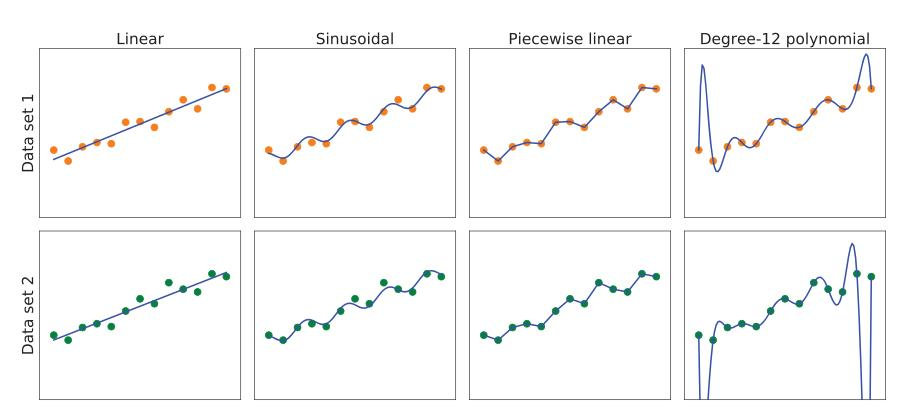
شکل ۱۹.۱ نشان میدهد تابعِ h که الگوریتمِ یادگیری کشف میکند به فضایِ فرضیهٔ H که در نظر میگیرد و به مجموعهٔ آموزشی که به او داده میشود بستگی دارد. هر یک از چهار نمودارِ ردیفِ بالا همان مجموعهٔ آموزشیِ ۱۳ نقطهای در صفحهٔ (x,y) را دارند. چهار نمودارِ ردیفِ پایین مجموعهٔ دومی از ۱۳ نقطه دارند؛ هر دو مجموعه نمایندهٔ همان تابعِ ناشناختهٔ f(x) هستند. هر ستون بهترین فرضیهٔ h را از فضایِ فرضیهٔ متفاوتی نشان میدهد:
یکی از راههای تحلیلِ فضاهای فرضیه، با «اریبی» (Bias) که تحمیل میکنند (صرفنظر از مجموعهٔ آموزشی) و «واریانسِ» (Variance) که تولید میکنند (از یک مجموعهٔ آموزشی به مجموعهٔ دیگر) است. منظورمان از اریبی (تقریباً) گرایشِ فرضیهٔ پیشبینیکننده به انحراف از مقدارِ موردانتظار هنگام میانگینگیری روی مجموعههای آموزشیِ مختلف است. اریبی اغلب از محدودیتهای تحمیلشده توسط فضایِ فرضیه ناشی میشود. برای نمونه، فضایِ فرضیهٔ توابعِ خطی اریبیِ قوی القا میکند: فقط به توابعِ تشکیلشده از خطوطِ راست اجازه میدهد. اگر الگوهایی در داده غیر از شیبِ کلیِ خط باشد، تابعِ خطی نمیتواند آن الگوها را بازنمایی کند. میگوییم فرضیه «کمبرازش» (Underfitting) میکند وقتی در یافتنِ الگویی در داده ناکام میماند. از سوی دیگر، تابعِ تکهای-خطی اریبیِ کمی دارد؛ شکلِ تابع توسط داده رانده میشود.
منظورمان از واریانس میزانِ تغییرِ فرضیه به دلیلِ نوسان در دادهٔ آموزشی است. دو ردیفِ شکل ۱۹.۱ مجموعههای دادهای را بازنمایی میکنند که هر یک از همان تابعِ f(x) نمونهبرداری شدهاند. مجموعههای داده معلوم شد کمی متفاوتاند. برای سه ستونِ نخست، تفاوتِ کوچک در مجموعهٔ داده به تفاوتِ کوچک در فرضیه ترجمه میشود. آن را واریانسِ کم مینامیم. اما چندجملهایهای درجهٔ 12 در ستونِ چهارم واریانسِ بالایی دارند: ببینید دو تابع در هر دو انتهای محورِ x چقدر متفاوتاند. بدیهی است، دستِکم یکی از این چندجملهایها باید تقریبِ ضعیفی از f(x) واقعی باشد. میگوییم تابعی «بیشبرازش» (Overfitting) میکند وقتی بیشازحد به مجموعهٔ دادهٔ خاصی که رویش آموزش دیده توجه میکند و باعث میشود روی دادهٔ دیدهنشده ضعیف عمل کند.
اغلب «معاوضهٔ اریبی–واریانس» (Bias–Variance Tradeoff) هست: انتخابی میانِ فرضیههای پیچیدهترِ کماریبی که دادهٔ آموزشی را خوب برازش میکنند و فرضیههای سادهترِ کمواریانس که ممکن است بهتر تعمیم دهند. آلبرت اینشتین در ۱۹۳۳ گفت: «هدفِ برترِ همهٔ نظریه این است که عناصرِ بنیادینِ فروکاستنی را تا آنجا که ممکن است ساده و اندک کنیم، بدونِ اینکه مجبور شویم بازنماییِ کافیِ هیچ دادهٔ واحدی از تجربه را رها کنیم.» به بیانِ دیگر، اینشتین انتخابِ سادهترین فرضیهای را توصیه میکند که با داده همخوان است. این اصل را میتوان به فیلسوفِ انگلیسیِ قرنِ چهاردهم، ویلیام آوکام، بازگرداند.² اصلِ او که «کثرت [موجودات] نباید بدونِ ضرورت فرض شود» «تیغِ آوکام» نامیده میشود، زیرا برای «تراشیدنِ» تبیینهای مشکوک استفاده میشود.
تعریفِ سادگی آسان نیست. روشن به نظر میرسد چندجملهایِ با فقط دو پارامتر سادهتر از چندجملهایِ با سیزده پارامتر است. این شهود را در بخش ۱۹.۳.۴ دقیقتر خواهیم کرد. با این حال، در فصل ۲۱ خواهیم دید مدلهای شبکهٔ عصبیِ عمیق اغلب میتوانند بهخوبی تعمیم دهند، حتی اگرچه بسیار پیچیدهاند—برخی از آنها میلیاردها پارامتر دارند. پس شمارِ پارامترها بهخودیخود معیارِ خوبی برای شایستگیِ مدل نیست. شاید باید هدفِ «مناسبت» باشد، نه «سادگی»، در ردهٔ مدل. این مسئله را در بخش ۱۹.۴.۱ در نظر میگیریم.
کدام فرضیه در شکل ۱۹.۱ بهترین است؟ نمیتوانیم مطمئن باشیم. اگر میدانستیم داده، مثلاً، شمارِ بازدیدِ وبسایتی را بازنمایی میکند که روزبهروز رشد میکند، اما بسته به زمانِ روز نیز چرخه دارد، آنگاه شاید تابعِ سینوسی را ترجیح میدادیم. اگر میدانستیم داده قطعاً چرخهای نیست اما نویزِ بالایی دارد، آنگاه شاید تابعِ خطی را ترجیح میدادیم.
در برخی موارد، تحلیلگر مایل است بگوید نه فقط فرضیه ممکن یا ناممکن است، بلکه چقدر محتمل است. یادگیریِ نظارتشده را میتوان با انتخابِ فرضیهٔ h* انجام داد که با توجه به داده محتملترین است:
h* = argmax_{h∈H} P(h|data)با قاعدهٔ بیز این معادل است با:
h* = argmax_{h∈H} P(data|h)P(h)سپس میتوانیم بگوییم احتمالِ پیشینیِ P(h) برای چندجملهایِ نرمِ درجهٔ 1 یا 2 بالاست و برای چندجملهایِ درجهٔ 12 با قلههای بزرگ و تیز پایینتر است. وقتی داده بگوید واقعاً به توابعِ غیرعادینما نیاز داریم به آنها اجازه میدهیم، اما با دادنِ احتمالِ پیشینیِ کم آنها را دلسرد میکنیم. چرا H را ردهٔ همهٔ برنامههای رایانهای، یا همهٔ ماشینهای تورینگ، قرار ندهیم؟ مسئله این است که معاوضهای میانِ بیانیبودنِ فضایِ فرضیه و پیچیدگیِ محاسباتیِ یافتنِ فرضیهٔ خوب درونِ آن فضا هست. برای نمونه، برازشِ خطِ راست به داده محاسبهای آسان است؛ برازشِ چندجملهایهای درجهٔ بالا تا حدی دشوارتر؛ و برازشِ ماشینهای تورینگ تصمیمناپذیر است. دلیلِ دوم برای ترجیحِ فضاهای فرضیهٔ ساده این است که احتمالاً پس از یادگیری میخواهیم از h استفاده کنیم، و محاسبهٔ h(x) وقتی h تابعِ خطی است تضمینشده سریع است، در حالی که اجرایِ برنامهٔ دلخواهِ ماشینِ تورینگ حتی تضمینشده خاتمه نمییابد.
به این دلایل، بیشترِ کارهای یادگیری بر بازنماییهای ساده متمرکز شدهاند. در سالهای اخیر علاقهٔ زیادی به یادگیریِ عمیق (فصل ۲۱) بوده، جایی که بازنماییها ساده نیستند اما محاسبهٔ h(x) همچنان با سختافزارِ مناسب فقط شمارِ کرانداری گام میبرد.
خواهیم دید معاوضهٔ بیانی–پیچیدگی ساده نیست: اغلب چنین است، چنانکه با منطقِ مرتبهٔ اول در فصل ۸ دیدیم، که زبانِ بیانی فرضیهٔ سادهای را ممکن میکند که داده را برازش کند، در حالی که محدودکردنِ بیانیِ زبان بدان معناست هر فرضیهٔ سازگاری باید پیچیده باشد.
مسئلهٔ یادگیریِ نظارتشدهٔ نمونهای را با جزئیات توصیف خواهیم کرد: مسئلهٔ تصمیمگیری دربارهٔ اینکه آیا در رستوران منتظرِ میز بمانیم یا نه. این مسئله در سراسرِ فصل برای نشاندادنِ ردههای مدلِ گوناگون استفاده خواهد شد. برای این مسئله، خروجیِ y متغیرِ بولیِ WillWait است؛ برای مثالهایی که در آنها واقعاً منتظرِ میز میمانیم صادق است. ورودیِ x بردارِ ده مقدارِ ویژگی است، که هر یک مقادیرِ گسسته دارد:
مجموعهای از ۱۲ مثال، برگرفته از تجربهٔ یکی از ما (SR)، در شکل ۱۹.۲ نشان داده شده. توجه کنید این دادهها چقدر ناچیزند: 2⁶ × 3² × 4² = 9,216 ترکیبِ ممکن از مقادیرِ ویژگیهای ورودی هست، اما خروجیِ درست فقط برای 12 تای آنها به ما داده شده؛ هر یک از 9,204 موردِ دیگر میتواند صادق یا کاذب باشد؛ نمیدانیم. این جوهرِ استقراست: باید بهترین حدسمان را برای این 9,204 مقدارِ خروجیِ مفقود، با توجه به فقط شواهدِ ۱۲ مثال، بزنیم.
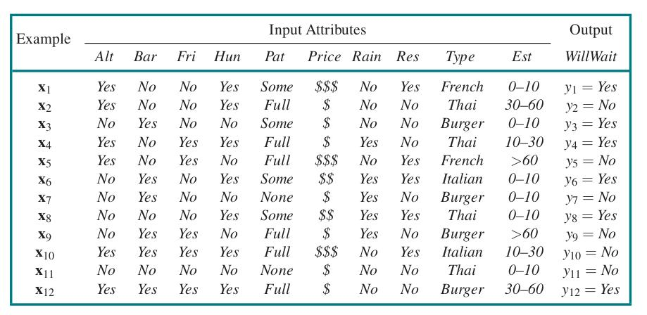
«درختِ تصمیم» (Decision Tree) بازنماییِ تابعی است که بردارِ مقادیرِ ویژگی را به مقدارِ خروجیِ تکی—یک «تصمیم»—نگاشت میکند. درختِ تصمیم تصمیمش را با اجرایِ توالیِ آزمونها به دست میآورد، از ریشه شروع میکند و شاخهٔ مناسب را دنبال میکند تا به برگ برسد. هر گرهٔ داخلیِ درخت با آزمونِ مقدارِ یکی از ویژگیهای ورودی متناظر است، شاخههای گره با مقادیرِ ممکنِ ویژگی برچسبگذاری میشوند، و گرههای برگ مشخص میکنند تابع چه مقداری را باید برگرداند.
بهطورِ کلی، مقادیرِ ورودی و خروجی میتوانند گسسته یا پیوسته باشند، اما فعلاً فقط ورودیهای تشکیلشده از مقادیرِ گسسته و خروجیهایی را در نظر میگیریم که یا صادق (مثالِ «مثبت» (Positive)) یا کاذب (مثالِ «منفی» (Negative)) هستند. این را «ردهبندیِ بولی» مینامیم. از j برای نمایهزدنِ مثالها استفاده میکنیم (xj بردارِ ورودیِ مثالِ jام و yj خروجی است)، و از xj,i برای ویژگیِ iامِ مثالِ jام.
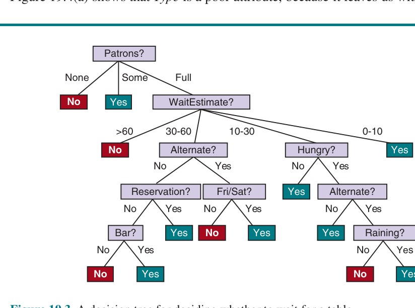
درختِ بازنماییکنندهٔ تابعِ تصمیمِ SR برای مسئلهٔ رستوران در شکل ۱۹.۳ نشان داده شده. با دنبالکردنِ شاخهها، میبینیم مثالی با Patrons=Full و WaitEstimate=0–10 بهصورتِ مثبت ردهبندی میشود (یعنی بله، منتظرِ میز خواهیم ماند).
درختِ تصمیمِ بولی معادلِ گزارهٔ منطقیِ شکلِ:
Output ⇔ (Path1 ∨ Path2 ∨ ...)است، که در آن هر Pathi عطفی به شکلِ (Am = vx ∧ An = vy ∧ ...) از آزمونهای ویژگی-مقدارِ متناظر با مسیری از ریشه تا برگِ صادق است. بدینترتیب، کلِ عبارت در «شکلِ نرمالِ فصلی» (DNF) است، بدان معنا که هر تابعی در منطقِ گزارهای را میتوان بهصورتِ درختِ تصمیم بیان کرد. برای بسیاری از مسائل، قالبِ درختِ تصمیم نتیجهٔ خوب، موجز و قابلِفهمی میدهد. در واقع، بسیاری از دفترچههای «راهنما» (مثلاً برای تعمیرِ خودرو) بهصورتِ درختهای تصمیم نوشته میشوند. اما برخی توابع را نمیتوان موجز بازنمایی کرد. برای نمونه، تابعِ اکثریت، که صادق را برمیگرداند اگر و فقط اگر بیش از نیمی از ورودیها صادق باشند، به درختِ تصمیمِ نماییبزرگ نیاز دارد، همانگونه که تابعِ توازن، که صادق را برمیگرداند اگر و فقط اگر شمارِ زوجی از ویژگیهای ورودی صادق باشند. با ویژگیهای حقیقیمقدار، تابعِ y > A1 + A2 با درختِ تصمیم دشوار بازنمایی میشود، زیرا مرزِ تصمیم خطِ قطری است، و همهٔ آزمونهای درختِ تصمیم فضا را به جعبههای مستطیلیِ همراستا با محور تقسیم میکنند. برای تقریبِ دقیقِ خطِ قطری باید جعبههای زیادی روی هم بچینیم. به بیانِ دیگر، درختهای تصمیم برای برخی انواعِ تابع خوباند و برای برخی دیگر بد.
آیا بازنماییای هست که برای همهٔ انواعِ تابع کارآمد باشد؟ متأسفانه، پاسخ نه است—توابعِ بسیار زیادی برای بازنماییِ همهشان با شمارِ کمی بیت وجود دارد. حتی فقط با درنظرگرفتنِ توابعِ بولی با n ویژگیِ بولی، جدولِ صدق 2ⁿ ردیف خواهد داشت، و هر ردیف میتواند صادق یا کاذب خروجی دهد، پس 2^(2ⁿ) تابعِ متفاوت هست. با ۲۰ ویژگی، 2^(1,048,576) ≈ 10^300,000 تابع هست، پس اگر خودمان را به بازنماییِ میلیونبیتی محدود کنیم، نمیتوانیم همهٔ این توابع را بازنمایی کنیم.
میخواهیم درختی بیابیم که با مثالهای شکل ۱۹.۲ سازگار و تا آنجا که ممکن است کوچک باشد. متأسفانه، یافتنِ درختِ سازگارِ تضمینشدهٔ کوچکترین ناشدنی است. اما با چند اکتشافیِ ساده، میتوانیم کارآمد یکی را بیابیم که به کوچکترین نزدیک است. الگوریتمِ LEARN-DECISION-TREE استراتژیِ حریصانهٔ تقسیموغلبه را اتخاذ میکند: همیشه مهمترین ویژگی را اول آزمون کن، سپس زیرمسائلِ کوچکتری را که با نتایجِ ممکنِ آزمون تعریف میشوند بهصورتِ بازگشتی حل کن. منظورمان از «مهمترین ویژگی» ویژگیای است که بیشترین تفاوت را در ردهبندیِ مثال ایجاد میکند. بدینگونه، امیدواریم با شمارِ کمی آزمون به ردهبندیِ درست برسیم، بدان معنا که همهٔ مسیرهای درخت کوتاه و کلِ درخت کمعمق باشد.
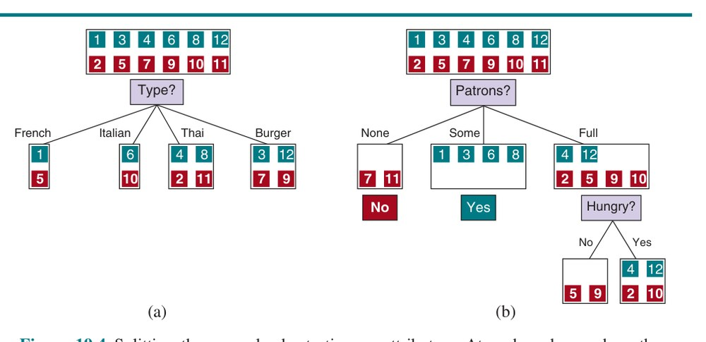
شکل ۱۹.۴(الف) نشان میدهد Type ویژگیِ ضعیفی است، زیرا ما را با چهار پیامد رها میکند که هر یک همان شمارِ مثالِ مثبت و منفی را دارد. از سوی دیگر، در (ب) میبینیم Patrons ویژگیِ نسبتاً مهمی است، زیرا اگر مقدار None یا Some باشد، با مجموعههای مثالی رها میشویم که میتوانیم برایشان قطعاً پاسخ دهیم (بهترتیب No و Yes). اگر مقدار Full باشد، با مجموعهٔ آمیختهای از مثالها رها میشویم. چهار حالت برای این زیرمسائلِ بازگشتی باید در نظر گرفته شود:
بهترین کاری که میتوانیم بکنیم بازگرداندنِ رایجترین مقدارِ خروجیِ مثالهای باقیمانده است.
الگوریتمِ LEARN-DECISION-TREE در شکل ۱۹.۵ نشان داده شده. توجه کنید مجموعهٔ مثالها ورودیِ الگوریتم است، اما هیچجا مثالها در درختِ بازگرداندهشده توسط الگوریتم ظاهر نمیشوند. درخت از آزمونهای روی ویژگیها در گرههای داخلی، مقادیرِ ویژگی روی شاخهها و مقادیرِ خروجی روی گرههای برگ تشکیل شده. جزئیاتِ تابعِ IMPORTANCE در بخش ۱۹.۳.۳ داده شده. خروجیِ الگوریتمِ یادگیری روی مجموعهٔ آموزشیِ نمونهمان در شکل ۱۹.۶ نشان داده شده.
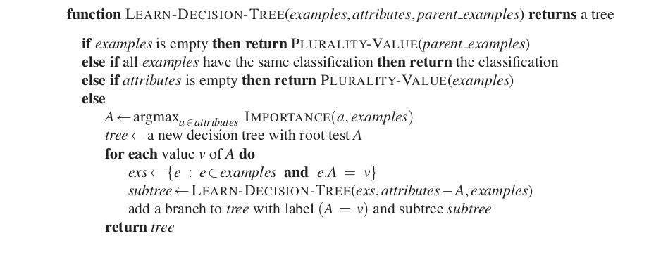
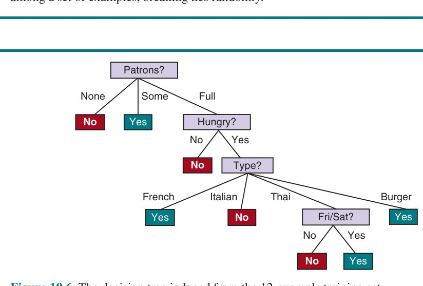
درختِ یادگرفتهشده بهوضوح با درختِ اصلیِ نشاندادهشده در شکل ۱۹.۳ متفاوت است. ممکن است نتیجه بگیریم الگوریتمِ یادگیری کارِ خیلی خوبی در یادگیریِ تابعِ درست انجام نمیدهد. این نتیجهگیریِ اشتباهی میبود. الگوریتمِ یادگیری به مثالها نگاه میکند، نه به تابعِ درست، و در واقع، فرضیهاش (شکل ۱۹.۶ را ببینید) نه فقط با همهٔ مثالها سازگار است، بلکه بهطورِ قابلِتوجهی از درختِ اصلی سادهتر است! با مثالهای کمی متفاوت درخت ممکن است بسیار متفاوت باشد، اما تابعی که بازنمایی میکند مشابه خواهد بود.
الگوریتمِ یادگیری دلیلی برای گنجاندنِ آزمونهای Raining و Reservation ندارد، زیرا میتواند همهٔ مثالها را بدونِ آنها ردهبندی کند. همچنین الگوی جالبی را که قبلاً مشکوک نبود تشخیص داده: SR برای غذای تایلندی در آخرِ هفته منتظر خواهد ماند. همچنین محکوم به اشتباههایی برای مواردی است که هیچ مثالی ندیده. برای نمونه، هرگز موردی را ندیده که انتظار 0–10 دقیقه باشد اما رستوران پر باشد. در آن صورت میگوید وقتی Hungry کاذب است منتظر نمان، اما SR قطعاً منتظر میماند. با مثالهای آموزشیِ بیشتر برنامهٔ یادگیری میتوانست این اشتباه را تصحیح کند.
میتوانیم عملکردِ الگوریتمِ یادگیری را با «منحنیِ یادگیری» (Learning Curve) ارزیابی کنیم، چنانکه در شکل ۱۹.۷ نشان داده شده. برای این شکل، ۱۰۰ مثال در اختیار داریم، که بهصورتِ تصادفی به مجموعهٔ آموزشی و مجموعهٔ آزمون تقسیم میکنیم. با مجموعهٔ آموزشی فرضیهٔ h را یاد میگیریم و دقتش را با مجموعهٔ آزمون اندازه میگیریم. میتوانیم این کار را با شروع از مجموعهٔ آموزشیِ اندازهٔ 1 و افزایشِ یکییکی تا اندازهٔ 99 انجام دهیم. برای هر اندازه، در واقع فرایندِ تقسیمِ تصادفی به مجموعههای آموزشی و آزمون را ۲۰ بار تکرار و نتایجِ ۲۰ آزمایش را میانگین میکنیم. منحنی نشان میدهد با رشدِ اندازهٔ مجموعهٔ آموزشی، دقت افزایش مییابد. (به همین دلیل، منحنیهای یادگیری «نمودارهای شاد» (Happy Graphs) نیز نامیده میشوند.) در این نمودار به دقتِ ۹۵٪ میرسیم، و به نظر میرسد منحنی ممکن است با دادهٔ بیشتر همچنان افزایش یابد.
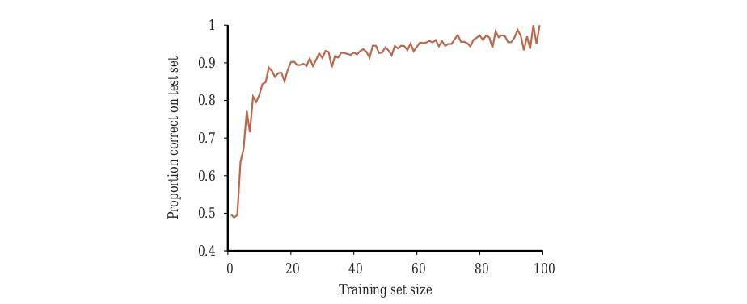
الگوریتمِ یادگیریِ درختِ تصمیم ویژگیِ با بالاترین IMPORTANCE را انتخاب میکند. حالا نشان میدهیم چگونه اهمیت را اندازه بگیریم، با استفاده از مفهومِ «بهرهٔ اطلاعاتی» (Information Gain)، که بر حسبِ «آنتروپی» (Entropy) تعریف میشود، که کمیتِ بنیادین در نظریهٔ اطلاعات است (شنون و ویور، 1949). آنتروپی معیاری از عدم قطعیتِ متغیرِ تصادفی است؛ هرچه اطلاعات بیشتر، آنتروپی کمتر. متغیرِ تصادفی با فقط یک مقدارِ ممکن—سکهای که همیشه رو میآید—هیچ عدم قطعیتی ندارد و بنابراین آنتروپیش صفر تعریف میشود. سکهٔ منصفانه هنگام پرتاب بهیکسان محتمل است رو یا پشت بیاید، و بهزودی نشان خواهیم داد این بهعنوانِ «۱ بیت» آنتروپی حساب میشود. پرتابِ تاسِ چهاروجهیِ منصفانه ۲ بیت آنتروپی دارد، زیرا 2² انتخابِ هماحتمال هست. حالا سکهٔ ناعادلانهای را در نظر بگیرید که ۹۹٪ مواقع رو میآید. بهصورتِ شهودی، این سکه عدم قطعیتِ کمتری از سکهٔ منصفانه دارد—اگر رو را حدس بزنیم فقط ۱٪ مواقع اشتباه میکنیم—پس میخواهیم اندازهٔ آنتروپیش نزدیکِ صفر، اما مثبت باشد. بهطورِ کلی، آنتروپیِ متغیرِ تصادفیِ V با مقادیرِ vk با احتمالِ P(vk) چنین تعریف میشود:
H(V) = ∑k P(vk) log2(1/P(vk)) = −∑k P(vk) log2 P(vk)میتوانیم بررسی کنیم آنتروپیِ پرتابِ سکهٔ منصفانه در واقع ۱ بیت است:
H(Fair) = −(0.5 log2 0.5 + 0.5 log2 0.5) = 1در مسائلِ ردهبندیِ بولی، خروجیها فقط صادق یا کاذباند، پس میتوانیم آنتروپی را بر حسبِ نسبتِ مثالهای مثبت، p/(p+n)، بیان کنیم، که در آن p و n شمارِ مثالهای مثبت و منفیاند. با تعریفِ B(q) = −(q log2 q + (1 − q) log2(1 − q))، آنتروپیِ مثالهای آموزشی B(p/(p+n)) است. برای نمونه، اگر ۴ مثالِ مثبت و ۸ مثالِ منفی در مجموعهٔ آموزشی باشند، آنتروپی B(1/3) ≈ 0.918 است.
ویژگیِ A با d مقدارِ متمایز، مجموعهٔ آموزشیِ E را به زیرمجموعههای E1,...,Ed تقسیم میکند. هر زیرمجموعهٔ Ek دارای pk مثالِ مثبت و nk مثالِ منفی است، پس اگر از آن شاخه برویم، برای پاسخدادن به پرسش به B(pk/(pk+nk)) بیتِ اطلاعاتِ اضافی نیاز خواهیم داشت. مثالِ تصادفیِ انتخابی از مجموعهٔ آموزشی با احتمالِ (pk+nk)/(p+n) در Ek است، پس آنتروپیِ موردانتظارِ باقیمانده پس از آزمونِ ویژگیِ A برابر:
Remainder(A) = ∑_{k=1}^{d} ((pk+nk)/(p+n)) B(pk/(pk+nk))بهرهٔ اطلاعاتی از آزمونِ ویژگیِ A کاهشِ موردانتظارِ آنتروپی است:
Gain(A) = B(p/(p+n)) − Remainder(A)در واقع Gain(A) دقیقاً همان چیزی است که برای پیادهسازیِ تابعِ IMPORTANCE نیاز داریم. با بازگشت به ویژگیهای درنظرگرفتهشده در شکل ۱۹.۴، داریم:
Gain(Patrons) = 1 − [(2/12)B(0/2) + (4/12)B(4/4) + (6/12)B(2/6)] ≈ 0.541 بیت
Gain(Type) = 1 − [(2/12)B(1/2) + (2/12)B(1/2) + (4/12)B(2/4) + (4/12)B(2/4)] = 0 بیتکه شهودِ ما را تأیید میکند که Patrons ویژگیِ بهتری برای تقسیمِ اول است. در واقع، Patrons بیشینهٔ بهرهٔ اطلاعاتیِ هر یک از ویژگیها را دارد و بنابراین توسط الگوریتمِ یادگیریِ درختِ تصمیم بهعنوانِ ریشه انتخاب میشود.
میخواهیم الگوریتمهای یادگیریمان فرضیهای بیابند که دادهٔ آموزشی را برازش کند، اما مهمتر، میخواهیم برای دادهٔ قبلاً دیدهنشده خوب تعمیم دهد. در شکل ۱۹.۱ دیدیم چندجملهایِ درجهٔ بالا میتواند همهٔ داده را برازش کند، اما نوسانهای وحشی دارد که توسط داده توجیه نمیشوند: برازش میکند اما میتواند بیشبرازش کند. بیشبرازش با رشدِ شمارِ ویژگیها محتملتر و با افزایشِ شمارِ مثالهای آموزشی کممحتملتر میشود. فضاهای فرضیهٔ بزرگتر (مثلاً درختهای تصمیم با گرههای بیشتر یا چندجملهایهای با درجهٔ بالا) ظرفیتِ بیشتری هم برای برازش و هم برای بیشبرازش دارند؛ برخی ردههای مدل بیشتر از بقیه مستعدِ بیشبرازشاند. برای درختهای تصمیم، فنِ «هرسِ درختِ تصمیم» (Decision Tree Pruning) با بیشبرازش مبارزه میکند. هرس با حذفِ گرههایی کار میکند که بهوضوح مربوط نیستند. با درختِ کامل، چنانکه توسط LEARN-DECISION-TREE تولید شده، شروع میکنیم. سپس به گرهٔ آزمونی نگاه میکنیم که فقط گرههای برگ را بهعنوانِ فرزندان دارد. اگر آزمون به نظر نامربوط میرسد—فقط نویزِ داده را تشخیص میدهد—آنگاه آزمون را حذف میکنیم و آن را با گرهٔ برگ جایگزین میکنیم. این فرایند را تکرار میکنیم، هر آزمون با فقط فرزندانِ برگ را در نظر میگیریم، تا وقتی هر یک یا هرس شده یا همانگونه پذیرفته شود.
پرسش این است که چگونه تشخیص دهیم گرهای ویژگیِ نامربوطی را آزمایش میکند؟ فرض کنیم در گرهای با p مثالِ مثبت و n مثالِ منفی هستیم. اگر ویژگی نامربوط باشد، انتظار داریم مثالها را به زیرمجموعههایی تقسیم کند بهگونهای که هر زیرمجموعه تقریباً همان نسبتِ مثالِ مثبتِ کلِ مجموعه، p/(p+n)، را داشته باشد، و بنابراین بهرهٔ اطلاعاتی نزدیکِ صفر خواهد بود.³ بدینترتیب، بهرهٔ اطلاعاتیِ کم سرنخِ خوبی است که ویژگی نامربوط است. حالا پرسش این است که برای تقسیم بر ویژگیِ خاصی چقدر بهره لازم است؟
میتوانیم با «آزمونِ معناداریِ آماری» (Significance Test) پاسخ دهیم. چنین آزمونی با فرضِ اینکه الگوی زیربناییای نیست (به اصطلاح «فرضیهٔ صفر» (Null Hypothesis)) شروع میکند. سپس دادهٔ واقعی برای محاسبهٔ میزانِ انحرافش از نبودِ کاملِ الگو تحلیل میشود. اگر درجهٔ انحراف از نظرِ آماری نامحتمل باشد (معمولاً به معنای احتمالِ ۵٪ یا کمتر)، آنگاه آن شاهدِ خوبی برای حضورِ الگوی معنادار در داده تلقی میشود. احتمالها از توزیعهای استانداردِ میزانِ انحرافِ موردانتظار در نمونهبرداریِ تصادفی محاسبه میشوند.
در این مورد، فرضیهٔ صفر این است که ویژگی نامربوط است و از این رو بهرهٔ اطلاعاتی برای نمونهٔ بینهایتبزرگ صفر خواهد بود. باید احتمالِ اینکه، تحتِ فرضیهٔ صفر، نمونهای با اندازهٔ v = n + p انحرافِ مشاهدهشده از توزیعِ موردانتظارِ مثالهای مثبت و منفی را نشان دهد محاسبه کنیم. میتوانیم انحراف را با مقایسهٔ شمارِ واقعیِ مثالهای مثبت و منفی در هر زیرمجموعه، pk و nk، با شمارِ موردانتظار، p̂k و n̂k، با فرضِ نامربوطیِ واقعی، اندازه بگیریم:
p̂k = p × (pk+nk)/(p+n) n̂k = n × (pk+nk)/(p+n)اندازهٔ مناسبی از انحرافِ کل با Δ = ∑_{k=1}^{d} [(pk−p̂k)²/p̂k + (nk−n̂k)²/n̂k] داده میشود. تحتِ فرضیهٔ صفر، مقدارِ Δ طبقِ «توزیعِ کایدو» (χ²) با d−1 درجهٔ آزادی توزیع میشود. میتوانیم از تابعِ آمارِ χ² ببینیم آیا مقدارِ خاصِ Δ فرضیهٔ صفر را تأیید یا رد میکند. برای نمونه، ویژگیِ Type رستوران را در نظر بگیرید، با چهار مقدار و بنابراین سه درجهٔ آزادی. مقدارِ Δ = 7.82 یا بیشتر فرضیهٔ صفر را در سطحِ ۵٪ رد میکند (و مقدارِ Δ = 11.35 یا بیشتر در سطحِ ۱٪ رد میکند). مقادیرِ پایینتر به پذیرشِ فرضیهٔ نامربوطبودنِ ویژگی میانجامد، و بنابراین شاخهٔ مرتبطِ درخت باید هرس شود. این «هرسِ χ²» (χ² Pruning) شناخته میشود.
با هرس، نویزِ مثالها قابلِ تحمل میشود. خطاهای برچسبِ مثال (مثلاً مثالی (x,Yes) که باید (x,No) باشد) افزایشِ خطی در خطایِ پیشبینی میدهند، در حالی که خطاهای توصیفهای مثال (مثلاً Price=$ وقتی در واقع Price=$$ بود) اثرِ مجانبی دارند که با کوچکشدنِ درخت به مجموعههای کوچکتر بدتر میشود. درختهای هرسشده وقتی داده حاوی نویزِ زیادی است بهطورِ قابلِتوجهی بهتر از درختهای هرسنشده عمل میکنند. همچنین، درختهای هرسشده اغلب بسیار کوچکترند و از این رو آسانتر فهمیده میشوند و کارآمدتر اجرا میشوند. یک هشدارِ نهایی: ممکن است فکر کنید هرسِ χ² و بهرهٔ اطلاعاتی شبیه هم به نظر میرسند، پس چرا آنها را با رویکردی به نامِ «توقفِ زودهنگام» (Early Stopping) ترکیب نکنیم—درختِ تصمیم وقتی ویژگیِ خوبی برای تقسیم نیست گره تولید نکند، بهجای اینکه زحمتِ تولیدِ گرهها و سپس هرسکردنشان را بکشد. مسئلهٔ توقفِ زودهنگام این است که ما را از بازشناسیِ موقعیتهایی بازمیدارد که هیچ ویژگیِ خوبِ تکیای نیست، اما ترکیبهایی از ویژگیها هستند که اطلاعاتیاند. برای نمونه، تابعِ XOR دو ویژگیِ دودویی را در نظر بگیرید. اگر شمارِ تقریباً برابری از مثالها برای هر چهار ترکیبِ مقادیرِ ورودی باشد، هیچکدام از ویژگیها اطلاعاتی نخواهد بود، با این حال کارِ درست تقسیم بر یکی از ویژگیهاست (مهم نیست کدام)، و سپس در سطحِ دوم تقسیمهای بسیار اطلاعاتی خواهیم گرفت. توقفِ زودهنگام این را از دست میداد، اما تولید-و-سپس-هرس آن را درست مدیریت میکند.
درختهای تصمیم را میتوان با مدیریتِ پیچیدگیهای زیر بهطورِ گستردهتری مفید کرد:
راهِ بهتر برای سروکارداشتن با مقادیرِ پیوسته «آزمونِ نقطهٔ تقسیم» (Split Point) است—آزمونِ نامساوی روی مقدارِ ویژگی. برای نمونه، در گرهای معین از درخت، ممکن است آزمونِ Weight > 160 بیشترین اطلاعات را بدهد. روشهای کارآمدی برای یافتنِ نقاطِ تقسیمِ خوب وجود دارد: با مرتبسازیِ مقادیرِ ویژگی شروع کن، و سپس فقط نقاطِ تقسیمی را در نظر بگیر که بینِ دو مثالِ مرتبشده با ردهبندیهای متفاوتاند، در حالی که جمعهای جاریِ مثالهای مثبت و منفی در هر طرفِ نقطهٔ تقسیم را پیگیری میکنی. تقسیمکردن گرانترین بخشِ کاربردهای واقعیِ یادگیریِ درختِ تصمیم است.
برای ویژگیهایی که پیوسته نیستند و ترتیبِ معناداری ندارند، اما شمارِ زیادی مقدارِ ممکن دارند (مانندِ کدپستی یا شمارهٔ کارتِ اعتباری)، اندازهای به نامِ «نسبتِ بهرهٔ اطلاعاتی» (Information Gain Ratio؛ تمرین ۱۹.GAIN را ببینید) میتواند برای اجتناب از تقسیم به زیردرختهای تکمثالهٔ بسیار استفاده شود. رویکردِ مفیدِ دیگر اجازهدادن به آزمونِ برابریِ شکلِ A = vk است. برای نمونه، آزمونِ Zipcode=10002 میتواند برای برگزیدنِ گروه بزرگی از افراد در این کدپستی در شهرِ نیویورک استفاده شود، و بقیه را در زیردرختِ «سایر» توده کند.
سامانهٔ یادگیریِ درختِ تصمیم برای کاربردهای دنیایِ واقعی باید بتواند همهٔ این مسائل را مدیریت کند. مدیریتِ متغیرهای پیوستهمقدار بهطورِ خاص مهم است، زیرا هم فرایندهای فیزیکی و هم مالی دادهٔ عددی فراهم میکنند. چند بستهٔ تجاری ساخته شده که این معیارها را برآورده میکنند، و برای توسعهٔ هزاران سامانهٔ مستقر استفاده شدهاند. در بسیاری از حوزههای صنعت و تجارت، درختهای تصمیم نخستین روشی هستند که وقتی قرار است روشِ ردهبندی از مجموعهٔ داده استخراج شود امتحان میشوند.
درختهای تصمیم چیزهای زیادی برایشان هست: سهولتِ فهم، مقیاسپذیری به مجموعههای دادهٔ بزرگ، و چندمنظورهگی در مدیریتِ ورودیهای گسسته و پیوسته و نیز ردهبندی و رگرسیون. اما میتوانند دقتِ زیربهینه داشته باشند (عمدتاً به دلیلِ جستجوی حریصانه)، و اگر درختها بسیار عمیق باشند، گرفتنِ پیشبینی برای مثالِ تازه میتواند در زمانِ اجرا گران باشد. درختهای تصمیم همچنین «ناپایدار» (Unstable) هستند، به این معنا که افزودنِ فقط یک مثالِ تازه میتواند آزمونِ ریشه را تغییر دهد، که کلِ درخت را تغییر میدهد. در بخش ۱۹.۸.۲ خواهیم دید مدلِ جنگلِ تصادفی میتواند برخی از این مسائل را اصلاح کند.
هدفِ ما در یادگیریِ ماشینی انتخابِ فرضیهای است که بهصورتِ بهینه با مثالهای آینده برازش شود. برای دقیقکردنِ این، باید «مثالِ آینده» و «برازشِ بهینه» را تعریف کنیم. نخست فرض میکنیم مثالهای آینده مانندِ گذشته خواهند بود. این را «فرضِ ایستایی» (Stationarity) مینامیم؛ بدونِ آن، همهچیز از بین رفته. فرض میکنیم هر مثالِ Ej همان توزیعِ احتمالِ پیشینی را دارد:
P(Ej) = P(Ej+1) = P(Ej+2) = ...و مستقل از مثالهای قبلی است:
P(Ej) = P(Ej | Ej−1, Ej−2, ...)مثالهایی که این معادلهها را ارضا میکنند «مستقل و همتوزیع» یا i.i.d. هستند.
گامِ بعد تعریفِ «برازشِ بهینه» است. فعلاً میگوییم برازشِ بهینه فرضیهای است که «نرخِ خطا» (Error Rate) را کمینه میکند: نسبتِ دفعاتی که h(x) ≠ y برای مثالی (x,y). (بعداً این را بسط میدهیم تا خطاهای متفاوت هزینههای متفاوتی داشته باشند، در واقع به پاسخهای «تقریباً» درست اعتبارِ جزئی بدهیم.) میتوانیم نرخِ خطای فرضیه را با دادنِ آزمونی به آن برآورد کنیم: عملکردش را روی مجموعهٔ آزمونی از مثالها اندازه بگیریم. برای فرضیه (یا دانشآموز) تقلب بود که قبل از آزمون به پاسخهای آزمون نگاه کند. سادهترین راه برای تضمینِ این اتفاقنیفتادن، تقسیمِ مثالهای موجود به دو مجموعه است: مجموعهٔ آموزشی برای ایجادِ فرضیه، و مجموعهٔ آزمون برای ارزیابیِ آن.
اگر فقط بخواهیم یک فرضیه بسازیم، این رویکرد کافی است. اما اغلب به ایجادِ چند فرضیه میانجامیم: ممکن است بخواهیم دو مدلِ یادگیریِ ماشینیِ کاملاً متفاوت را مقایسه کنیم، یا ممکن است بخواهیم «دکمههای» گوناگون درونِ یک مدل را تنظیم کنیم. برای نمونه، میتوانیم آستانههای متفاوتی برای هرسِ χ² درختهای تصمیم، یا درجههای متفاوتی برای چندجملهایها امتحان کنیم. این «دکمهها» را «ابرپارامتر» (Hyperparameters) مینامیم—پارامترهای ردهٔ مدل، نه مدلِ فردی.
فرض کنیم پژوهشگری برای یک تنظیمِ ابرپارامترِ هرسِ χ² فرضیهای تولید کند، نرخهای خطا را روی مجموعهٔ آزمون اندازه بگیرد، و سپس ابرپارامترهای متفاوتی را امتحان کند. هیچ فرضیهٔ فردی به دادهٔ مجموعهٔ آزمون نگاه نکرده، اما کلِ فرایند، از طریقِ پژوهشگر، نگاه کرده. راهِ اجتناب از این، واقعاً کنارگذاشتنِ مجموعهٔ آزمون است—قفلکردنِ آن تا وقتی کاملاً با آموزش، آزمایش، تنظیمِ ابرپارامتر، بازآموزی و... تمام نشدهاید. بدان معناست به سه مجموعهٔ داده نیاز دارید:
شکل ۱۹.۸ الگوریتمِ سادهٔ MODEL-SELECTION را توصیف میکند. الگوریتمِ یادگیری را بهعنوانِ آرگومان میگیرد، Learner (برای نمونه، میتواند LEARN-DECISION-TREE باشد). Learner یک ابرپارامتر میگیرد، که در شکل size نامیده شده. برای درختهای تصمیم میتواند شمارِ گرههای درخت باشد؛ برای چندجملهایها size درجه خواهد بود. MODEL-SELECTION با کوچکترین مقدارِ size شروع میکند، مدلِ سادهای میدهد (که احتمالاً داده را کمبرازش میکند) و از مقادیرِ بزرگترِ size تکرار میکند و مدلهای پیچیدهتر را در نظر میگیرد. در پایان، MODEL-SELECTION مدلی را انتخاب میکند که کمترین نرخِ خطایِ میانگین را روی دادهٔ اعتبارسنجیِ کنارگذاشتهشده داشته باشد.
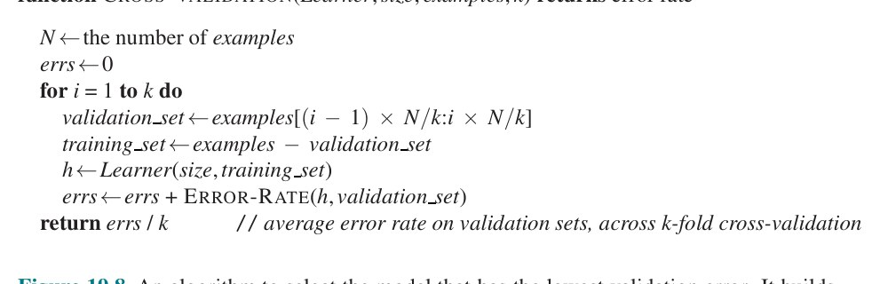
در شکل ۱۹.۹ دو الگوی نمونهای را میبینیم که در انتخابِ مدل رخ میدهند. در هر دو (الف) و (ب)، خطایِ مجموعهٔ آموزشی بهصورتِ یکنواخت (با نوسانِ تصادفیِ جزیی) با افزایشِ پیچیدگیِ مدل کاهش مییابد. اما منحنیِ خطایِ اعتبارسنجی ابتدا کاهش مییابد و سپس افزایش، و در نهایت از منحنیِ آموزشی فراتر میرود. این افزایش در خطایِ اعتبارسنجی نشانهٔ بیشبرازش است: با پیچیدهترشدنِ مدل، دادهٔ آموزشی را بهتر برازش میکند اما دیگر به نمونههای دیدهنشده تعمیم نمیدهد.
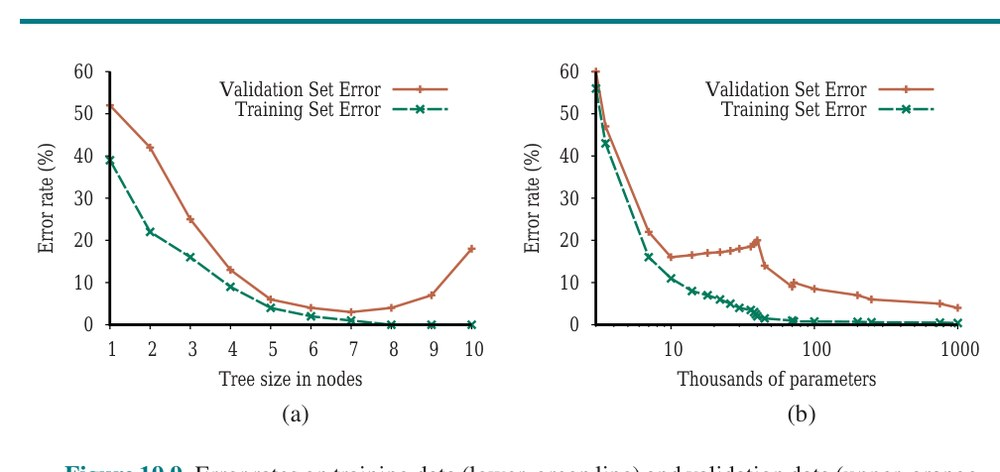
چرا برخی منحنیهای خطایِ اعتبارسنجی مانندِ (الف) و برخی مانندِ (ب) هستند؟ به نحوهٔ استفادهٔ ردههای مدلِ متفاوت از ظرفیتِ مازاد، و تطابقِ آن با مسئلهٔ موردِ نظر، برمیگردد. با افزودنِ ظرفیت به ردهٔ مدل، اغلب به نقطهای میرسیم که همهٔ مثالهای آموزشی میتوانند کاملاً درونِ مدل بازنمایی شوند. برای نمونه، با مجموعهٔ آموزشی با n مثالِ متمایز، همیشه درختِ تصمیمی با n گرهٔ برگ هست که میتواند همهٔ مثالها را بازنمایی کند. میگوییم مدلی که دقیقاً همهٔ دادهٔ آموزشی را برازش میکند داده را «درونیابی» (Interpolated) کرده.⁵ ردههای مدل معمولاً با نزدیکشدنِ ظرفیت به نقطهٔ درونیابی شروع به بیشبرازش میکنند. به نظر میرسد این به این دلیل است که بیشترِ ظرفیتِ مدل بر مثالهای آموزشی متمرکز است، و ظرفیتِ باقیمانده بهصورتِ نسبتاً تصادفی تخصیص مییابد بهگونهای که نمایندهٔ الگوهای مجموعهٔ دادهٔ اعتبارسنجی نیست. برخی ردههای مدل هرگز از این بیشبرازش بهبود نمییابند، مانندِ درختهای تصمیم در (الف). اما برای ردههای مدلِ دیگر، افزودنِ ظرفیت بدان معناست توابعِ نامزدِ بیشتری هست، و برخی از آنها بهطورِ طبیعی برای الگوهای دادهای که در تابعِ واقعیِ f(x) هستند مناسباند. هرچه ظرفیت بالاتر باشد، این بازنماییهای مناسب بیشترند، و محتملتر است سازوکارِ بهینهسازی بتواند روی یکی فرود آید. شبکههای عصبیِ عمیق (فصل ۲۱)، ماشینهای هسته (بخش ۱۹.۷.۵)، جنگلهای تصادفی (بخش ۱۹.۸.۲) و گروههای تقویتشده (بخش ۱۹.۸.۴) همگی این ویژگی را دارند که خطای مجموعهٔ اعتبارسنجیشان با افزایشِ ظرفیت تمایل به کاهش دارد، مانندِ شکل ۱۹.۹(ب).
میتوانیم الگوریتمِ انتخابِ مدل را به راههای گوناگون بسط دهیم: میتوانیم ردههای مدلِ ناهمگون را مقایسه کنیم، با فراخوانیِ MODEL-SELECTION با DECISION-TREE-LEARNER بهعنوانِ آرگومان و سپس با POLYNOMIAL-LEARNER، و دیدنِ اینکه کدام بهتر عمل میکند. میتوانیم چند ابرپارامتر را اجازه دهیم، که بدان معناست به الگوریتمِ بهینهسازیِ پیچیدهتری نیاز داریم، مانندِ جستجوی شبکهای (Grid Search؛ بخش ۱۹.۹.۳ را ببینید) بهجای جستجوی خطی.⁴
تاکنون سعی کردهایم نرخِ خطا را کمینه کنیم. این بدیهی است بهتر از بیشینهکردنِ نرخِ خطاست، اما کلِ داستان نیست. مسئلهٔ ردهبندیِ پیامهای ایمیل به هرزنامه یا غیرهرزنامه را در نظر بگیرید. بدتر است غیرهرزنامه بهعنوانِ هرزنامه ردهبندی شود (و بنابراین احتمالاً پیامِ مهمی از دست برود) تا هرزنامه بهعنوانِ غیرهرزنامه (و بنابراین چند ثانیه دلخوری بکشیم). پس ردهبند با نرخِ خطایِ ۱٪، که تقریباً همهٔ خطاهایش ردهبندیِ هرزنامه بهعنوانِ غیرهرزنامه بود، بهتر از ردهبندی با نرخِ خطایِ فقط ۰.۵٪ میبود، اگر بیشترِ آن خطاها ردهبندیِ غیرهرزنامه بهعنوانِ هرزنامه بودند. در فصل ۱۶ دیدیم تصمیمگیرندگان باید مطلوبیتِ موردانتظار را بیشینه کنند، و مطلوبیت چیزی است که یادگیرندگان نیز باید بیشینه کنند. با این حال، در یادگیریِ ماشینی سنت بر این است که آن را بهصورتِ منفی بیان کنیم: بهجای بیشینهکردنِ تابعِ مطلوبیت، «تابعِ زیان» (Loss Function) را کمینه کنیم. تابعِ زیانِ L(x,y,ŷ) بهعنوانِ میزانِ مطلوبیتِ ازدسترفته با پیشبینیِ h(x) = ŷ وقتی پاسخِ درست f(x) = y است تعریف میشود:
L(x, y, ŷ) = Utility(نتیجهٔ استفاده از y با ورودیِ x) − Utility(نتیجهٔ استفاده از ŷ با ورودیِ x)این عمومیترین صورتبندیِ تابعِ زیان است. اغلب نسخهٔ سادهشدهٔ L(y, ŷ) استفاده میشود که مستقل از x است. برای بقیهٔ این فصل از نسخهٔ سادهشده استفاده خواهیم کرد، که بدان معناست نمیتوانیم بگوییم بدتر است نامهای از مامان را اشتباه ردهبندی کنیم تا نامهای از پسرعموی اعصابخردکنِمان، اما میتوانیم بگوییم ۱۰ برابر بدتر است غیرهرزنامه را بهعنوانِ هرزنامه ردهبندی کنیم تا برعکس:
L(spam, nospam) = 1، L(nospam, spam) = 10توجه کنید L(y,y) همیشه صفر است؛ طبقِ تعریف، وقتی دقیقاً درست حدس بزنید زیانی نیست.
برای توابع با خروجیِ گسسته، میتوانیم مقدارِ زیان را برای هر ردهبندیِ اشتباهِ ممکن برشماریم، اما نمیتوانیم همهٔ امکانها را برای دادهٔ حقیقیمقدار برشماریم. اگر f(x) برابر 137.035999 باشد، با h(x) = 137.036 نسبتاً خوشحال میشویم، اما دقیقاً چقدر باید خوشحال باشیم؟ بهطورِ کلی، خطاهای کوچک بهتر از خطاهای بزرگاند؛ دو تابع که این ایده را پیادهسازی میکنند، قدرِ مطلقِ تفاوت (که «زیانِ L1» نامیده میشود) و مربعِ تفاوت (که «زیانِ L2» نامیده میشود؛ به «۲» برای مربع فکر کنید) هستند. برای خروجیهای گسستهمقدار، اگر به ایدهٔ کمینهکردنِ نرخِ خطا راضی باشیم، میتوانیم از تابعِ زیانِ L0/1 استفاده کنیم، که برای پاسخِ نادرست زیانِ 1 دارد:
زیانِ قدرمطلق: L1(y, ŷ) = |y − ŷ|
زیانِ مربعخطا: L2(y, ŷ) = (y − ŷ)²
زیانِ 0/1: L0/1(y, ŷ) = 0 اگر y = ŷ، وگرنه 1از نظرِ نظری، عاملِ یادگیری با انتخابِ فرضیهای که «زیانِ تعمیمِ» (Generalization Loss) موردانتظار را روی همهٔ جفتهای ورودی-خروجی که خواهد دید کمینه میکند، مطلوبیتِ موردانتظارش را بیشینه میکند. برای محاسبهٔ این انتظار باید توزیعِ احتمالِ پیشینیِ P(X,Y) را روی مثالها تعریف کنیم. E مجموعهٔ همهٔ مثالهای ورودی-خروجیِ ممکن باشد. سپس زیانِ تعمیمِ موردانتظار برای فرضیهٔ h (نسبت به تابعِ زیانِ L):
GenLossL(h) = ∑_{(x,y)∈E} L(y, h(x)) P(x, y)و بهترین فرضیه، h*، فرضیهای با کمینهٔ زیانِ تعمیمِ موردانتظار است:
h* = argmin_{h∈H} GenLossL(h)چون P(x,y) در بیشترِ موارد معلوم نیست، عاملِ یادگیری فقط میتواند زیانِ تعمیم را با «زیانِ تجربی» (Empirical Loss) روی مجموعهای از مثالهای E با اندازهٔ N برآورد کند:
EmpLossL,E(h) = ∑_{(x,y)∈E} L(y, h(x)) × (1/N)بهترین فرضیهٔ برآوردشدهٔ ĥ* سپس فرضیهای با کمینهٔ زیانِ تجربی است:
ĥ* = argmin_{h∈H} EmpLossL,E(h)چهار دلیل هست که ĥ* ممکن است با تابعِ واقعیِ f تفاوت داشته باشد: تحققناپذیری، واریانس، نویز و پیچیدگیِ محاسباتی. نخست، میگوییم مسئلهٔ یادگیری «تحققپذیر» (Realizable) است اگر فضایِ فرضیهٔ H واقعاً حاویِ تابعِ واقعیِ f باشد. اگر H مجموعهٔ توابعِ خطی و تابعِ واقعیِ f تابعِ درجهدومی باشد، هیچ مقدارِ دادهای f واقعی را بازنخواهد یافت. دوم، واریانس بدان معناست الگوریتمِ یادگیری بهطورِ کلی برای مجموعههای مثالِ متفاوت فرضیههای متفاوتی برمیگرداند. اگر مسئله تحققپذیر باشد، واریانس با افزایشِ شمارِ مثالهای آموزشی به سمتِ صفر کاهش مییابد. سوم، f ممکن است ناجبرگرایانه یا نویزی باشد—ممکن است برای همان x مقادیرِ متفاوتی از f(x) برگرداند. طبقِ تعریف، نویز را نمیتوان پیشبینی کرد (فقط میتوان مشخصهسازی کرد). و سرانجام، وقتی H تابعِ پیچیدهای در فضایِ فرضیهٔ بزرگ باشد، جستجوی نظاممندِ همهٔ امکانها از نظرِ محاسباتی ناشدنی است؛ در آن صورت، جستجو میتواند بخشی از فضا را کاوش کند و فرضیهٔ نسبتاً خوبی برگرداند، اما نمیتواند همیشه بهترین را تضمین کند. روشهای سنتی در آمار و سالهای آغازینِ یادگیریِ ماشینی بر «یادگیریِ مقیاسکوچک» (Small-Scale Learning) تمرکز داشتند، جایی که شمارِ مثالهای آموزشی از دهها تا هزارانِ پایین متغیر بود. در اینجا زیانِ تعمیم بیشتر از «خطایِ تقریبِ» نداشتنِ f واقعی در فضایِ فرضیه، و از «خطایِ برآوردِ» نداشتنِ مثالهای آموزشیِ کافی برای محدودکردنِ واریانس میآید. در سالهای اخیر تأکیدِ بیشتری بر «یادگیریِ مقیاسبزرگ» (Large-Scale Learning) با میلیونها مثال بوده. در اینجا زیانِ تعمیم ممکن است توسط محدودیتهای محاسبه مسلط شود: داده و مدلِ بهاندازهٔ کافی غنی هست که h بسیار نزدیکِ f واقعی بیابیم، اما محاسبهٔ یافتنِ آن پیچیده است، پس به تقریبی رضایت میدهیم.
در بخش ۱۹.۴.۱ دیدیم چگونه با اعتبارسنجیِ متقاطع انتخابِ مدل انجام دهیم. رویکردِ جایگزین جستجو برای فرضیهای است که مستقیماً جمعِ وزندارِ زیانِ تجربی و پیچیدگیِ فرضیه را کمینه کند، که آن را «هزینهٔ کل» مینامیم:
Cost(h) = EmpLoss(h) + λ·Complexity(h)
ĥ* = argmin_{h∈H} Cost(h)در اینجا λ ابرپارامتری است، عددی مثبت که بهعنوانِ نرخِ تبدیل بینِ زیان و پیچیدگیِ فرضیه عمل میکند. اگر λ خوب انتخاب شود، بهخوبی زیانِ تجربیِ تابعِ ساده را در برابرِ گرایشِ تابعِ پیچیده به بیشبرازش متوازن میکند.
این فرایندِ جریمهکردنِ صریحِ فرضیههای پیچیده «منظمسازی» (Regularization) نامیده میشود: به دنبال توابعی هستیم که «منظمتر»ند. توجه کنید حالا دو انتخاب میکنیم: تابعِ زیان (L1 یا L2)، و اندازهٔ پیچیدگی، که «تابعِ منظمسازی» (Regularization Function) نامیده میشود. انتخابِ تابعِ منظمسازی به فضایِ فرضیه بستگی دارد. برای نمونه، برای چندجملهایها، تابعِ منظمسازیِ خوب، جمعِ مربعهای ضرایب است—کوچکنگهداشتنِ جمع ما را از چندجملهایِ پرنوسانِ درجهٔ 12 در شکل ۱۹.۱ دور میکرد. نمونهای از این نوع منظمسازی را در بخش ۱۹.۶.۳ نشان خواهیم داد.
راهِ دیگرِ سادهکردنِ مدلها کاهشِ بُعدهایی است که مدلها با آنها کار میکنند. فرایندِ «انتخابِ ویژگی» (Feature Selection) را میتوان برای دورانداختنِ ویژگیهایی که به نظر نامربوطاند انجام داد. هرسِ χ² نوعی انتخابِ ویژگی است.
در واقع ممکن است زیانِ تجربی و پیچیدگی را روی همان مقیاس اندازه گرفت، بدونِ عاملِ تبدیلِ λ: هر دو را میتوان در بیت اندازه گرفت. نخست فرضیه را بهعنوانِ برنامهٔ ماشینِ تورینگ رمزگذاری کن و شمارِ بیتها را بشمار. سپس شمارِ بیتهای لازم برای رمزگذاریِ داده را بشمار، که در آن مثالِ درستپیشبینیشده صفر بیت هزینه دارد و هزینهٔ مثالِ نادرستپیشبینیشده بستگی به بزرگیِ خطا دارد. فرضیهٔ «حداقلِ طولِ توصیف» (Minimum Description Length) یا MDL، شمارِ کلِ بیتهای لازم را کمینه میکند. این در حدِّ نهایی خوب کار میکند، اما برای مسائلِ کوچکتر، انتخابِ رمزگذاریِ برنامه—بهترین روشِ رمزگذاریِ درختِ تصمیم بهصورتِ رشتهٔ بیتی—بر پیامد اثر میگذارد. در فصل ۲۰ (صفحهٔ ۷۲۴)، تفسیرِ احتمالاتیِ رویکردِ MDL را توصیف میکنیم.
در بخش ۱۹.۴.۱ نشان دادیم چگونه بهترین مقدارِ ابرپارامترِ size را با اعمالِ اعتبارسنجیِ متقاطع روی هر مقدارِ ممکن تا وقتی نرخِ خطایِ اعتبارسنجی افزایش یابد انتخاب کنیم. وقتی ابرپارامترِ تکی با شمارِ کمی مقدارِ ممکن هست، رویکردِ خوبی است. اما وقتی چند ابرپارامتر هست، یا وقتی مقادیرِ پیوسته دارند، انتخابِ مقادیرِ خوب دشوارتر است.
سادهترین رویکرد برای تنظیمِ ابرپارامتر «تنظیمِ دستی» (Hand-Tuning) است: بر اساسِ تجربهٔ گذشته مقادیرِ پارامتری را حدس بزن، مدل را آموزش بده، عملکردش را روی دادهٔ اعتبارسنجی اندازه بگیر، نتایج را تحلیل کن، و از شهودت برای پیشنهادِ مقادیرِ پارامتریِ تازه استفاده کن. تا وقتی عملکردِ رضایتبخشی داری (یا وقت، بودجهٔ محاسباتی یا حوصلهات تمام شود) تکرار کن.
اگر فقط چند ابرپارامتر، هر یک با شمارِ کمی مقدارِ ممکن، باشد، رویکردِ نظاممندتری به نامِ «جستجوی شبکهای» (Grid Search) مناسب است: همهٔ ترکیبهای مقادیر را امتحان کن و ببین کدام روی دادهٔ اعتبارسنجی بهترین عملکرد را دارد. ترکیبهای متفاوت را میتوان بهصورتِ موازی روی ماشینهای متفاوت اجرا کرد، پس اگر منابعِ محاسباتیِ کافی داشته باشید، این لازم نیست کند باشد، هرچند در برخی موارد انتخابِ مدل شناخته شده که منابعِ خوشههای هزاررایانهای را روزها در یک زمان میبلعد.
استراتژیهای جستجو از فصلهای ۳ و ۴ نیز میتوانند به کار آیند. برای نمونه، اگر دو ابرپارامتر مستقل از یکدیگر باشند، میتوان آنها را جداگانه بهینه کرد. اگر ترکیبهای زیادی از مقادیرِ ممکن باشد، «جستجوی تصادفی» (Random Search) بهصورتِ یکنواخت از مجموعهٔ همهٔ تنظیمهای ابرپارامترِ ممکن نمونهبرداری میکند، و تا وقتی مایلید وقت و منابعِ محاسباتی صرف کنید تکرار میکند. نمونهبرداریِ تصادفی همچنین راهِ خوبی برای مدیریتِ مقادیرِ پیوسته است.
وقتی هر اجرایِ آموزشی زمانِ زیادی میبرد، گرفتنِ اطلاعاتِ مفید از هر اجرا میتواند کمککننده باشد. «بهینهسازیِ بیزی» (Bayesian Optimization) تکلیفِ انتخابِ مقادیرِ ابرپارامترِ خوب را خودش بهعنوانِ مسئلهٔ یادگیریِ ماشینی در نظر میگیرد. یعنی بردارِ مقادیرِ ابرپارامترِ x را ورودی، و کلِ زیانِ روی مجموعهٔ اعتبارسنجی برای مدلی که با آن ابرپارامترها ساخته شده را خروجیِ y در نظر بگیر؛ سپس میخواهیم تابعِ y = f(x) را بیابیم که زیانِ y را کمینه میکند. هر بار که اجرایِ آموزشی انجام میدهیم جفتِ (y, f(x)) تازهای میگیریم، که میتوانیم برای بهروزرسانیِ باورمان دربارهٔ شکلِ تابعِ f استفاده کنیم.
ایده این است که بهرهبرداری (انتخابِ مقادیرِ پارامترِ نزدیک به نتیجهٔ خوبِ قبلی) را با کاوش (امتحانِ مقادیرِ پارامترِ نوآورانه) معاوضه کنیم. این همان معاوضهای است که در جستجوی درختیِ مونتکارلو دیدیم (بخش ۵.۴)، و در واقع ایدهٔ کرانهای بالایِ اطمینان نیز اینجا برای کمینهکردنِ پشیمانی استفاده میشود. اگر فرض کنیم f را میتوان با «فرایندِ گاوسی» تقریب زد، ریاضیاتِ بهروزرسانیِ باورمان دربارهٔ f بهخوبی کار میکند.
چگونه میتوانیم مطمئن باشیم فرضیهٔ یادگرفتهشده برای ورودیهای قبلاً دیدهنشده خوب پیشبینی میکند؟ یعنی، چگونه بدانیم فرضیهٔ h به تابعِ هدفِ f نزدیک است، اگر ندانیم f چیست؟ این پرسشها قرنهاست موردِ تأملِ آوکام، هیوم و دیگران بوده. در دهههای اخیر، پرسشهای دیگری پدید آمدهاند: برای گرفتنِ h خوب به چند مثال نیاز داریم؟ از چه فضایِ فرضیهای باید استفاده کنیم؟ اگر فضایِ فرضیه بسیار پیچیده باشد، اصلاً میتوانیم بهترین h را بیابیم، یا باید به بیشینهٔ محلی رضایت دهیم؟ h چقدر باید پیچیده باشد؟ چگونه از بیشبرازش اجتناب کنیم؟ این بخش این پرسشها را بررسی میکند.
با پرسشِ تعدادِ مثالهای لازم برای یادگیری شروع میکنیم. از منحنیِ یادگیریِ یادگیریِ درختِ تصمیم روی مسئلهٔ رستوران (شکل ۱۹.۷ صفحهٔ ۶۶۱) دیدیم دقت با دادهٔ آموزشیِ بیشتر بهبود مییابد. منحنیهای یادگیری مفیدند، اما خاصِ الگوریتمِ یادگیریِ خاصی روی مسئلهٔ خاصیاند. آیا اصولِ عمومیتری بر شمارِ مثالهای لازم حاکم است؟
پرسشهایی مانندِ این توسط «نظریهٔ یادگیریِ محاسباتی» (Computational Learning Theory) پرداخته میشوند، که در تقاطعِ هوش مصنوعی، آمار و علومِ رایانهٔ نظری قرار دارد. اصلِ زیربنایی این است که هر فرضیهای که بهطورِ جدی غلط است تقریباً مطمئناً با احتمالِ بالا پس از شمارِ کمی مثال «برملا» میشود، زیرا پیشبینیِ نادرستی خواهد کرد. بدینترتیب، هر فرضیهای که با مجموعهٔ بهاندازهٔ کافی بزرگِ مثالهای آموزشی سازگار باشد بعید است بهطورِ جدی غلط باشد: یعنی باید «احتمالاً تقریباً درست» (Probably Approximately Correct یا PAC) باشد. هر الگوریتمِ یادگیری که فرضیههایی برمیگرداند که احتمالاً تقریباً درستاند، «الگوریتمِ یادگیریِ PAC» نامیده میشود؛ میتوانیم از این رویکرد برای فراهمکردنِ کرانهایی بر عملکردِ PAC الگوریتمهای یادگیریِ گوناگون استفاده کنیم.
قضیههای PAC-learning، مانندِ همهٔ قضیهها، پیامدهای منطقیِ اصلهایاند. وقتی قضیهای (در برابرِ، مثلاً، مفسرِ سیاسی) بر اساسِ گذشته چیزی دربارهٔ آینده بیان میکند، اصلها باید «سوختِ» برقراریِ آن ارتباط را فراهم کنند. برای یادگیریِ PAC، سوخت توسط فرضِ ایستاییِ معرفیشده در صفحهٔ ۶۶۵ فراهم میشود، که میگوید مثالهای آینده از همان توزیعِ ثابتِ P(E) = P(X,Y) که مثالهای گذشته کشیده خواهند شد. (توجه کنید لازم نیست بدانیم آن توزیع چیست، فقط اینکه تغییر نمیکند.) علاوه بر این، برای سادهنگهداشتنِ امور، فرض میکنیم تابعِ واقعیِ f قطعی و عضوی از فضایِ فرضیهٔ H موردِ بررسی است.
سادهترین قضیههای PAC با توابعِ بولی سروکار دارند، که زیانِ 0/1 برایشان مناسب است. نرخِ خطای فرضیهٔ h، که قبلاً بهصورتِ غیررسمی تعریف شد، در اینجا بهصورتِ صوری بهعنوانِ زیانِ تعمیمِ موردانتظار برای مثالهای کشیدهشده از توزیعِ ایستا تعریف میشود:
error(h) = GenLoss_{L0/1}(h) = ∑_{x,y} L0/1(y, h(x)) P(x, y)به بیانِ دیگر، error(h) احتمالِ اینکه h مثالِ تازهای را اشتباه ردهبندی کند است. این همان کمیتی است که بهصورتِ تجربی توسط منحنیهای یادگیریِ نشاندادهشدهٔ قبلی اندازهگیری میشود.
فرضیهٔ h «تقریباً درست» (Approximately Correct) نامیده میشود اگر error(h) ≤ ǫ، که در آن ǫ ثابتِ کوچکی است. نشان خواهیم داد میتوانیم N را بیابیم بهگونهای که، پس از آموزش روی N مثال، با احتمالِ بالا، همهٔ فرضیههای سازگار تقریباً درستاند. میتوان فرضیهٔ تقریباً درست را «نزدیک» به تابعِ واقعی در فضایِ فرضیه دانست: درونِ چیزی قرار دارد که «گویِ ǫ» (ǫ-Ball) دورِ تابعِ واقعیِ f نامیده میشود. فضایِ فرضیهٔ بیرونِ این گوی Hbad نامیده میشود. میتوانیم کرانی بر احتمالِ اینکه فرضیهٔ «بهطورِ جدی غلطِ» hb ∈ Hbad با N مثالِ نخست سازگار باشد چنین اشتقاق کنیم. میدانیم error(hb) > ǫ. بدینترتیب، احتمالِ موافقتِ آن با مثالِ معین حداکثر 1−ǫ است. چون مثالها مستقلاند، کران برای N مثال:
P(hb با N مثال موافق است) ≤ (1−ǫ)ᴺاحتمالِ اینکه Hbad حداقل یک فرضیهٔ سازگار داشته باشد با جمعِ احتمالهای فردی کراندار میشود:
P(Hbad حاوی فرضیهٔ سازگاری است) ≤ |Hbad|(1−ǫ)ᴺ ≤ |H|(1−ǫ)ᴺکه در آن از این واقعیت استفاده کردهایم Hbad زیرمجموعهٔ H است و بنابراین |Hbad| ≤ |H|. میخواهیم احتمالِ این رخداد را زیرِ عددِ کوچکِ δ کاهش دهیم:
P(Hbad حاوی فرضیهٔ سازگاری است) ≤ |H|(1−ǫ)ᴺ ≤ δبا توجه به اینکه 1−ǫ ≤ e^(−ǫ)، میتوانیم این را به دست آوریم اگر به الگوریتم اجازه دهیم ببیند:
N ≥ (1/ǫ) [ln(1/δ) + ln|H|] (19.1)مثال. بدینترتیب، با احتمالِ دستِکم 1−δ، پس از دیدنِ این تعدادِ مثال، الگوریتمِ یادگیری فرضیهای برمیگرداند که خطایش حداکثر ǫ است. به بیانِ دیگر، احتمالاً تقریباً درست است. شمارِ مثالهای لازم، بهعنوانِ تابعی از ǫ و δ، «پیچیدگیِ نمونهای» (Sample Complexity) الگوریتمِ یادگیری نامیده میشود.
چنانکه قبلاً دیدیم، اگر H مجموعهٔ همهٔ توابعِ بولی روی n ویژگی باشد، آنگاه |H| = 2^(2ⁿ). بدینترتیب، پیچیدگیِ نمونهایِ فضا بهصورتِ 2ⁿ رشد میکند. چون شمارِ مثالهای ممکن نیز 2ⁿ است، این پیشنهاد میکند PAC-یادگیری در ردهٔ همهٔ توابعِ بولی مستلزم دیدنِ همه، یا تقریباً همه، مثالهای ممکن است. لحظهای فکر دلیلش را آشکار میکند: H بهاندازهٔ کافی فرضیه دارد که هر مجموعهٔ معینی از مثالها را به همهٔ راههای ممکن ردهبندی کند. بهطورِ خاص، برای هر مجموعهٔ N مثالی، مجموعهٔ فرضیههای سازگار با آن مثالها شاملِ شمارِ برابری از فرضیههایی است که xN+1 را مثبت پیشبینی میکنند و فرضیههایی که xN+1 را منفی پیشبینی میکنند.
پس برای بهدستآوردنِ تعمیمِ واقعی به مثالهای دیدهنشده، به نظر میرسد باید فضایِ فرضیهٔ H را به نحوی محدود کنیم؛ اما البته، اگر فضا را محدود کنیم، ممکن است تابعِ واقعی را کلاً حذف کنیم. سه راه برای گریز از این دوراهی هست. نخستین، بهکاربردنِ دانشِ قبلی در مسئله است. دومین، که در بخش ۱۹.۴.۳ معرفی کردیم، اصرار بر اینکه الگوریتم نه فقط هر فرضیهٔ سازگاری، بلکه ترجیحاً فرضیهٔ سادهای برگرداند (چنانکه در یادگیریِ درختِ تصمیم انجام میشود). در مواردی که یافتنِ فرضیههای سازگارِ ساده شدنی است، نتایجِ پیچیدگیِ نمونهای بهطورِ کلی بهتر از تحلیلهای مبتنی بر فقط سازگاریاند. سومین، که در ادامه دنبالش میکنیم، تمرکز بر زیرمجموعههای قابلِیادگیری از کلِ فضایِ فرضیهٔ توابعِ بولی است. این رویکرد بر این فرض تکیه میکند که فضایِ فرضیهٔ محدودشده حاویِ فرضیهٔ h است که بهاندازهٔ کافی به تابعِ واقعیِ f نزدیک است؛ مزایا ایناند که فضایِ فرضیهٔ محدودشده تعمیمِ مؤثر را اجازه میدهد و معمولاً جستجو در آن آسانتر است. حالا یکی از این فضاهای فرضیهٔ محدودشده را با جزئیاتِ بیشتر بررسی میکنیم.
حالا نشان میدهیم چگونه PAC یادگیری را روی فضایِ فرضیهٔ تازهای اعمال کنیم: «فهرستهای تصمیم» (Decision Lists). فهرستِ تصمیم شاملِ توالیِ آزمونهاست، که هر یک عطفی از لیتِرالهاست. اگر آزمونی وقتی روی توصیفِ مثالی اعمال شود موفق شود، فهرستِ تصمیم مقداری را که باید برگردانده شود مشخص میکند. اگر آزمون شکست بخورد، پردازش با آزمونِ بعدیِ فهرست ادامه مییابد. فهرستهای تصمیم شبیهِ درختهای تصمیماند، اما ساختارِ کلیشان سادهتر است: فقط در یک جهت شاخه میشوند. در مقابل، آزمونهای فردی پیچیدهترند. شکل ۱۹.۱۰ فهرستِ تصمیمی را نشان میدهد که فرضیهٔ زیر را بازنمایی میکند:
WillWait ⇔ (Patrons = Some) ∨ (Patrons = Full ∧ Fri/Sat)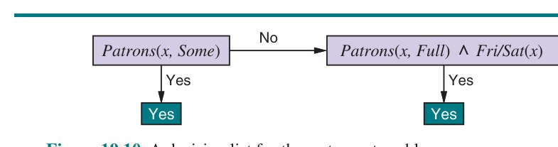
اگر آزمونهایی با اندازهٔ دلخواه اجازه دهیم، فهرستهای تصمیم میتوانند هر تابعِ بولی را بازنمایی کنند (تمرین ۱۹.DLEX). از سوی دیگر، اگر اندازهٔ هر آزمون را به حداکثر k لیتِرال محدود کنیم، ممکن است الگوریتمِ یادگیری با موفقیت از شمارِ کمی مثال تعمیم دهد. از نمادِ k-DL برای فهرستِ تصمیم با حداکثر k عطف استفاده میکنیم. مثالِ شکل ۱۹.۱۰ در 2-DL است. نشاندادنِ اینکه k-DL بهعنوانِ زیرمجموعه شاملِ k-DT، مجموعهٔ همهٔ درختهای تصمیمِ با عمقِ حداکثر k، است آسان است (تمرین ۱۹.DLEX). از نمادِ k-DL(n) برای k-DL با n ویژگیِ بولی استفاده میکنیم.
نخستین تکلیف نشاندادنِ قابلِیادگیریبودنِ k-DL است—یعنی هر تابعی در k-DL را میتوان پس از آموزش روی شمارِ معقولی مثال دقیقاً تقریب زد. برای این کار، باید شمارِ فرضیههای ممکن را محاسبه کنیم. مجموعهٔ عطفهای با حداکثر k لیتِرال با استفاده از n ویژگی را Conj(n,k) بگذاریم. چون فهرستِ تصمیم از آزمونها ساخته میشود، و چون هر آزمون میتواند به پیامدِ Yes یا No متصل شود یا میتواند در فهرستِ تصمیم غایب باشد، حداکثر 3^|Conj(n,k)| مجموعهٔ متمایز از آزمونهای مؤلفهای هست. هر یک از این مجموعههای آزمون میتواند در هر ترتیبی باشد، پس:
|k-DL(n)| ≤ 3^c · c!که در آن c = |Conj(n,k)|. شمارِ عطفهای با حداکثر k لیتِرال از n ویژگی با:
|Conj(n,k)| = ∑_{i=0}^{k} C(2n, i) = O(nᵏ)داده میشود. از این رو، پس از کمی کار:
|k-DL(n)| = 2^(O(nᵏ log2(nᵏ)))به دست میآوریم. میتوانیم این را در معادلهٔ (19.1) جای کنیم تا نشان دهیم شمارِ مثالهای لازم برای PAC-یادگیریِ تابعِ k-DL(n) در n چندجملهای است:
N ≥ (1/ǫ) [ln(1/δ) + O(nᵏ log2(nᵏ))]بنابراین، هر الگوریتمی که فهرستِ تصمیمِ سازگاری برمیگرداند، تابعِ k-DL را در شمارِ معقولی مثال، برای k کوچک، PAC-یاد میگیرد.
تکلیفِ بعدی یافتنِ الگوریتمِ کارآمدی است که فهرستِ تصمیمِ سازگار برمیگرداند. از الگوریتمِ حریصانهای به نامِ DECISION-LIST-LEARNING استفاده میکنیم که مکرراً آزمونی را مییابد که دقیقاً با زیرمجموعهای از مجموعهٔ آموزشی موافق است. وقتی چنین آزمونی یافت، آن را به فهرستِ تصمیمِ درحالِساخت میافزاید و مثالهای متناظر را حذف میکند. سپس بقیهٔ فهرستِ تصمیم را با فقط مثالهای باقیمانده میسازد. این تا وقتی تکرار میشود که مثالی باقی نماند. الگوریتم در شکل ۱۹.۱۱ نشان داده شده.
function DECISION-LIST-LEARNING(examples) returns a decision list, or failure
if examples is empty then return the trivial decision list No
t ← a test that agrees with a nonempty subset examplest of examples
such that the members of examplest are all positive or all negative
if no such t then return failure
if examples in examplest are positive then o ← Yes else o ← No
return a decision list with initial test t and outcome o and remaining tests
given by DECISION-LIST-LEARNING(examples − examplest)این الگوریتم روشِ انتخابِ آزمونِ بعدی برای افزودن به فهرستِ تصمیم را مشخص نمیکند. اگرچه نتایجِ صوریِ دادهشدهٔ قبلی به روشِ انتخاب بستگی ندارند، معقول به نظر میرسد آزمونهای کوچکی را ترجیح دهیم که با مجموعههای بزرگِ مثالهای یکنواختردهبندیشده موافقاند، تا فهرستِ تصمیمِ کلی تا آنجا که ممکن است فشرده باشد. سادهترین استراتژی یافتنِ کوچکترین آزمونِ t است که با هر زیرمجموعهٔ یکنواختردهبندیشده موافق است، صرفنظر از اندازهٔ زیرمجموعه. حتی این رویکرد نیز بهخوبی کار میکند، چنانکه شکل ۱۹.۱۲ پیشنهاد میکند. برای این مسئله، درختِ تصمیم کمی سریعتر از فهرستِ تصمیم یاد میگیرد، اما تنوعِ بیشتری دارد.
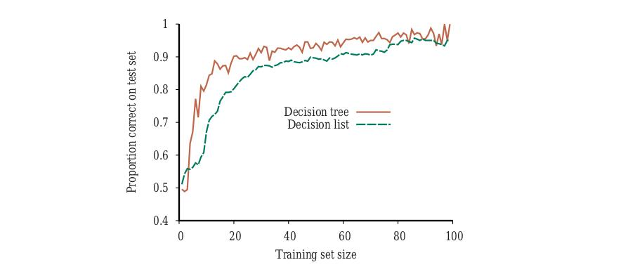
حالا وقت آن است که از درختها و فهرستهای تصمیم به فضایِ فرضیهٔ متفاوتی برویم، فضایی که صدها سال استفاده شده: ردهٔ «توابعِ خطیِ» (Linear Functions) ورودیهای پیوستهمقدار. با سادهترین حالت شروع میکنیم: رگرسیون با تابعِ خطیِ تکمتغیره، که بهگونهای دیگر «برازشِ خطِ راست» شناخته میشود. بخش ۱۹.۶.۳ حالتِ چندمتغیره را پوشش میدهد. بخشهای ۱۹.۶.۴ و ۱۹.۶.۵ نشان میدهند چگونه توابعِ خطی را با اعمالِ آستانههای سخت و نرم به ردهبند تبدیل کنیم.
تابعِ خطیِ تکمتغیره (خطِ راست) با ورودیِ x و خروجیِ y شکلِ y = w1x + w0 دارد، که در آن w0 و w1 ضرایبِ حقیقیمقداری هستند که باید یاد گرفته شوند. از حرفِ w استفاده میکنیم، زیرا ضرایب را «وزن» (Weight) میدانیم؛ مقدارِ y با تغییرِ وزنِ نسبیِ یک جمله یا جملهٔ دیگر تغییر میکند. w را بردارِ ⟨w0,w1⟩ تعریف میکنیم و تابعِ خطی با آن وزنها را hw(x) = w1x + w0 تعریف میکنیم.
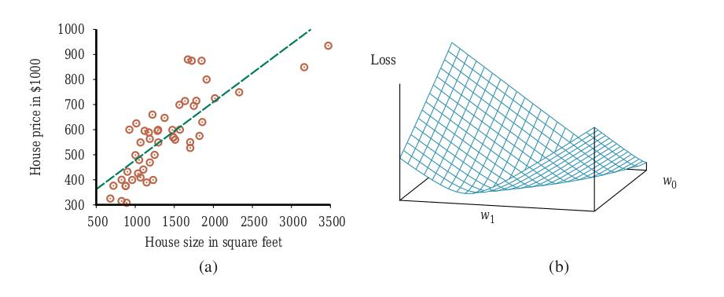
شکل ۱۹.۱۳(الف) نمونهای از مجموعهٔ آموزشیِ n نقطهای در صفحهٔ x,y را نشان میدهد، که هر نقطه اندازه و قیمتِ خانهای برای فروش را بازنمایی میکند. تکلیفِ یافتنِ hw که بهترین برازش را به این دادهها میدهد «رگرسیونِ خطی» (Linear Regression) نامیده میشود. برای برازشِ خط به داده، تنها کاری که باید بکنیم یافتنِ مقادیرِ وزنهای ⟨w0,w1⟩ است که زیانِ تجربی را کمینه میکنند. سنت (که به گاوس⁶ برمیگردد) استفاده از تابعِ زیانِ مربعخطا، L2، جمعشده روی همهٔ مثالهای آموزشی است:
Loss(hw) = ∑_{j=1}^{N} L2(yj, hw(xj)) = ∑_{j=1}^{N} (yj − hw(xj))² = ∑_{j=1}^{N} (yj − (w1xj + w0))²میخواهیم w* = argmin_w Loss(hw) را بیابیم. جمعِ ∑_{j=1}^{N}(yj − (w1xj + w0))² وقتی کمینه میشود که مشتقهای جزئیاش نسبت به w0 و w1 صفر باشند:
∂/∂w0 ∑_{j=1}^{N} (yj − (w1xj + w0))² = 0 و ∂/∂w1 ∑_{j=1}^{N} (yj − (w1xj + w0))² = 0 (19.2)این معادلهها راهحلِ یکتا دارند:
w1 = (N(∑xjyj) − (∑xj)(∑yj)) / (N(∑xj²) − (∑xj)²)؛ w0 = (∑yj − w1(∑xj))/N (19.3)برای مثالِ شکل ۱۹.۱۳(الف)، راهحل w1 = 0.232، w0 = 246 است، و خطِ با آن وزنها بهصورتِ خطِ خطچین در شکل نشان داده شده:
y = 0.232x + 246بسیاری از شکلهای یادگیری شاملِ تنظیمِ وزنها برای کمینهکردنِ زیاناند، پس کمک میکند تصویرِ ذهنی از آنچه در «فضایِ وزن» (Weight Space)—فضایِ تعریفشده توسط همهٔ تنظیمهای ممکنِ وزنها—رخ میدهد داشته باشیم. برای رگرسیونِ خطیِ تکمتغیره، فضایِ وزنِ تعریفشده توسط w0 و w1 دوبعدی است، پس میتوانیم زیان را بهعنوانِ تابعی از w0 و w1 در نمودارِ سهبعدی رسم کنیم (شکل ۱۹.۱۳(ب) را ببینید). میبینیم تابعِ زیان «محدب» (Convex) است، چنانکه در صفحهٔ ۱۲۲ تعریف شد؛ این برای هر مسئلهٔ رگرسیونِ خطی با تابعِ زیانِ L2 صادق است، و دلالت دارد هیچ کمینهٔ محلیای نیست. از جهتی این پایانِ داستانِ مدلهای خطی است؛ اگر لازم باشد خطها را به داده برازش کنیم، معادلهٔ (19.3) را اعمال میکنیم.⁷
مدلِ خطیِ تکمتغیره این ویژگیِ خوب را دارد که فرمولِ بستهای برای یافتنِ کمینهٔ زیان وجود دارد. اما در بسیاری از مدلهای یادگیری چنین نیست. به همین دلیل، به الگوریتمِ بهینهسازیِ عمومیتری نیاز داریم: «نزولِ گرادیان» (Gradient Descent). نزولِ گرادیان یکی از عمومیترین و پرکاربردترین الگوریتمهای بهینهسازی در یادگیریِ ماشین است. ایدهٔ پایه ساده است: با نقطهای دلخواه در فضایِ وزن شروع کن، سپس بارها و بارها گامهایی در جهتِ «شیبِ نزولیِ» تابعِ زیان بردار—یعنی در جهتی که زیان را بیشترین کاهش میدهد—تا به کمینهٔ سراسری (یا محلی) برسیم. الگوریتم چنین است:
w ← هر نقطه در فضایِ پارامتر
تا وقتی همگرا نشده:
برای هر wi در w:
wi ← wi − α (∂/∂wi) Loss(w) (19.4)پارامترِ α، که در بخش ۴.۲ «اندازهٔ گام» نامیدیم، معمولاً وقتی میخواهیم در مسئلهٔ یادگیری زیان را کمینه کنیم «نرخِ یادگیری» (Learning Rate) نامیده میشود. میتواند ثابتِ ثابتی باشد، یا میتواند با پیشرویِ فرایندِ یادگیری در طولِ زمان فروپاشد.
برای رگرسیونِ تکمتغیره، زیان درجهدومی است، پس مشتقِ جزئی خطی خواهد بود. (تنها حسابانی که باید بدانید «قاعدهٔ زنجیرهای» (Chain Rule) است: ∂g(f(x))/∂x = g′(f(x))·∂f(x)/∂x، بهعلاوهٔ این واقعیتها که ∂x²/∂x = 2x و ∂x/∂x = 1.) نخست مشتقهای جزئی—شیبها—را در حالتِ سادهشدهٔ فقط یک مثالِ آموزشی، (x,y)، بهدست میآوریم:
∂/∂wi Loss(w) = ∂/∂wi (y − hw(x))²
= 2(y − hw(x)) × ∂/∂wi (y − hw(x))
= 2(y − hw(x)) × ∂/∂wi (y − (w1x + w0)) (19.5)با اعمالِ این بر هر دو w0 و w1 میگیریم:
∂/∂w0 Loss(w) = −2(y − hw(x))؛ ∂/∂w1 Loss(w) = −2(y − hw(x)) × xبا جایکردنِ این در معادلهٔ (19.4)، و ادغامِ 2 در نرخِ یادگیریِ مشخصنشدهٔ α، قاعدهٔ یادگیریِ زیر را برای وزنها میگیریم:
w0 ← w0 + α(y − hw(x))؛ w1 ← w1 + α(y − hw(x)) × xاین بهروزرسانیها معنیِ شهودی دارند: اگر hw(x) > y (یعنی خروجی بیشازحد بزرگ است)، w0 را کمی کاهش بده، و w1 را اگر x ورودیِ مثبت بود کاهش بده اما اگر x ورودیِ منفی بود افزایش بده.
معادلههای پیشین یک مثالِ آموزشی را پوشش میدهند. برای N مثالِ آموزشی، میخواهیم جمعِ زیانهای فردیِ هر مثال را کمینه کنیم. مشتقِ جمع، جمعِ مشتقهاست، پس داریم:
w0 ← w0 + α ∑j (yj − hw(xj))؛ w1 ← w1 + α ∑j (yj − hw(xj)) × xjاین بهروزرسانیها «قاعدهٔ یادگیریِ نزولِ گرادیانِ دستهای» (Batch Gradient Descent) را برای رگرسیونِ خطیِ تکمتغیره تشکیل میدهند (که «نزولِ گرادیانِ قطعی» نیز نامیده میشود). سطحِ زیان محدب است، بدان معنا که هیچ کمینهٔ محلیای برای گیرکردن نیست، و همگرایی به کمینهٔ سراسری تضمینشده است (تا زمانی که α را چنان بزرگ انتخاب نکنیم که از هدف بپرد)، اما ممکن است بسیار کند باشد: برای هر گام باید روی همهٔ N مثالِ آموزشی جمع بزنیم، و ممکن است گامهای بسیاری باشد. مسئله اگر N بزرگتر از اندازهٔ حافظهٔ پردازنده باشد تشدید میشود. گامی که همهٔ مثالهای آموزشی را پوشش میدهد «دوره» (Epoch) نامیده میشود.
گونهٔ سریعتری «نزولِ گرادیانِ تصادفی» (Stochastic Gradient Descent) یا SGD نامیده میشود: در هر گام شمارِ کمی مثالِ آموزشی را بهصورتِ تصادفی انتخاب میکند و طبقِ معادلهٔ (19.5) بهروزرسانی میکند. نسخهٔ اصلیِ SGD فقط یک مثالِ آموزشی برای هر گام انتخاب میکرد، اما اکنون رایجتر است «ریزدستهای» (Minibatch) از m مثال از میانِ N انتخاب شود. فرض کنیم N = 10,000 مثال و ریزدستهای با اندازهٔ m = 100 انتخاب کنیم. سپس در هر گام مقدارِ محاسبه را با ضریبِ 100 کاهش دادهایم؛ اما چون خطایِ استانداردِ میانگینِ گرادیانِ برآوردشده متناسب با جذرِ شمارِ مثالهاست، خطایِ استاندارد فقط با ضریبِ 10 افزایش مییابد. پس حتی اگر مجبور باشیم ۱۰ برابر گامِ بیشتر قبل از همگرایی برداریم، ریزدستهایِ SGD در این مورد ۱۰ برابر سریعتر از SGD دستهایِ کامل است.
با برخی معماریهای CPU یا GPU، میتوانیم m را برای بهرهگیری از عملیاتِ برداریِ موازی انتخاب کنیم، و گامی با m مثال تقریباً بهاندازهٔ گامی با فقط یک مثال سریع شود. درونِ این قیدها، m را ابرپارامتری میدانیم که باید برای هر مسئلهٔ یادگیری تنظیم شود. همگراییِ SGD ریزدستهای بهصورتِ سختگیرانه تضمینشده نیست؛ میتواند دورِ کمینه نوسان کند بدونِ آرامگرفتن. در صفحهٔ ۶۸۴ خواهیم دید برنامهای برای کاهشِ نرخِ یادگیریِ α (مانندِ بازپختِ شبیهسازیشده) چگونه همگرایی را تضمین میکند.
SGD میتواند در محیطِ برخط مفید باشد، جایی که دادههای تازه یکییکی میآیند و فرضِ ایستایی ممکن است برقرار نباشد. (در واقع، SGD بهعنوانِ «نزولِ گرادیانِ برخط» (Online Gradient Descent) نیز شناخته میشود.) با انتخابِ خوبِ α، مدل بهآرامی تکامل مییابد، برخی از آنچه در گذشته آموخته را به یاد میآورد، اما با تغییرهای بازنماییشده توسط دادهٔ تازه نیز سازگار میشود.
SGD بهطورِ گسترده روی مدلهایی غیر از رگرسیونِ خطی اعمال میشود، بهطورِ خاص شبکههای عصبی. حتی وقتی سطحِ زیان محدب نیست، این رویکرد در یافتنِ کمینههای محلیِ خوبِ نزدیک به کمینهٔ سراسری مؤثر ثابت شده.
میتوانیم بهآسانی به مسائلِ رگرسیونِ خطیِ چندمتغیره بسط دهیم، که در آن هر مثالِ xj بردارِ n-عنصری است.⁸ فضایِ فرضیهمان مجموعهٔ توابعِ شکلِ:
hw(xj) = w0 + w1xj,1 + ... + wnxj,n = w0 + ∑i wixj,iاست. (خواننده ممکن است بخواهد برای خلاصهای از جبرِ خطی به پیوستِ الف مراجعه کند. همچنین توجه کنید از اصطلاحِ «رگرسیونِ چندمتغیره» برای این معنا استفاده میکنیم که ورودی بردارِ چند مقدار است، اما خروجی متغیرِ تکی است. از اصطلاحِ «رگرسیونِ چندمتغیرهخروجی» برای حالتی استفاده میکنیم که خروجی نیز بردارِ چند متغیر است. با این حال، نویسندگانِ دیگر دو اصطلاح را بهجای هم استفاده میکنند.)
جملهٔ w0، عرض از مبدأ، بهعنوانِ متفاوت از بقیه برجسته است. میتوانیم آن را با اختراعِ ویژگیِ ورودیِ دامیِ xj,0، که همیشه برابرِ 1 تعریف میشود، اصلاح کنیم. سپس h صرفاً ضربِ نقطهایِ وزنها و بردارِ ورودی است (یا بهطورِ معادل، ضربِ ماتریسیِ ترانهادهٔ وزنها و بردارِ ورودی):
hw(xj) = w·xj = wᵀxj = ∑i wixj,iبهترین بردارِ وزنها، w*، زیانِ مربعخطا را روی مثالها کمینه میکند:
w* = argmin_w ∑j L2(yj, w·xj)رگرسیونِ خطیِ چندمتغیره در واقع خیلی پیچیدهتر از حالتِ تکمتغیرهای که پوشش دادیم نیست. نزولِ گرادیان به کمینهٔ (یکتای) تابعِ زیان خواهد رسید؛ معادلهٔ بهروزرسانی برای هر وزنِ wi:
wi ← wi + α ∑j (yj − hw(xj)) × xj,i (19.6)با ابزارهای جبرِ خطی و حسابِ برداری، همچنین میتوان بهصورتِ تحلیلی برای wای که زیان را کمینه میکند حل کرد. y بردارِ خروجیهای مثالهای آموزشی و X «ماتریسِ داده» (Data Matrix)—یعنی ماتریسِ ورودیها با یک مثالِ n-بعدی در هر ردیف—باشد. سپس بردارِ خروجیهای پیشبینیشده ŷ = Xw است و زیانِ مربعخطا روی همهٔ دادهٔ آموزشی:
L(w) = ∥ŷ − y∥² = ∥Xw − y∥²گرادیان را صفر میگذاریم:
∇w L(w) = 2Xᵀ(Xw − y) = 0با بازآرایی، درمییابیم بردارِ وزنِ کمینه-زیان چنین داده میشود:
w* = (XᵀX)⁻¹Xᵀy (19.7)عبارتِ (XᵀX)⁻¹Xᵀ را «شبهمعکوسِ» (Pseudoinverse) ماتریسِ داده، و معادلهٔ (19.7) را «معادلهٔ نرمال» (Normal Equation) مینامیم.
با رگرسیونِ خطیِ تکمتغیره مجبور نبودیم نگرانِ بیشبرازش باشیم. اما با رگرسیونِ خطیِ چندمتغیره در فضاهایِ پربعد ممکن است بُعدی که در واقع نامربوط است بهطورِ اتفاقی مفید به نظر برسد و به بیشبرازش بینجامد. بدینترتیب، استفاده از منظمسازی روی توابعِ خطیِ چندمتغیره برای اجتناب از بیشبرازش رایج است. به یاد آورید با منظمسازی، هزینهٔ کلِ فرضیه را کمینه میکنیم، هم زیانِ تجربی و هم پیچیدگیِ فرضیه را حساب میکنیم:
Cost(h) = EmpLoss(h) + λ·Complexity(h)برای توابعِ خطی، پیچیدگی را میتوان بهعنوانِ تابعی از وزنها مشخص کرد. میتوانیم خانوادهای از توابعِ منظمسازی را در نظر بگیریم:
Complexity(hw) = Lq(w) = ∑i |wi|^qمانندِ توابعِ زیان، با q=1 «منظمسازیِ L1» داریم⁹ که جمعِ قدرِ مطلقها را کمینه میکند؛ با q=2، منظمسازیِ L2 جمعِ مربعها را کمینه میکند. کدام تابعِ منظمسازی را باید انتخاب کنید؟ به مسئلهٔ خاص بستگی دارد، اما منظمسازیِ L1 مزیتِ مهمی دارد: تمایل به تولیدِ «مدلِ تنک» (Sparse Model) دارد. یعنی، اغلب وزنهای بسیاری را صفر میکند، عملاً ویژگیهای متناظر را کاملاً نامربوط اعلام میکند—درست همانگونه که LEARN-DECISION-TREE انجام میدهد (هرچند با سازوکاری متفاوت). فرضیههایی که ویژگیها را دور میاندازند میتوانند برای انسان آسانتر فهمیده شوند و احتمالِ کمتری برای بیشبرازش دارند.
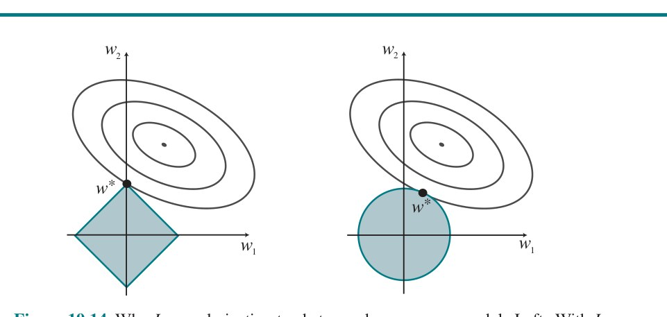
شکل ۱۹.۱۴ تبیینِ شهودیِ اینکه چرا منظمسازیِ L1 به وزنهای صفر میانجامد، در حالی که L2 نه. توجه کنید کمینهکردنِ Loss(w) + λ·Complexity(w) معادلِ کمینهکردنِ Loss(w) مشروط به قیدِ Complexity(w) ≤ c، برای ثابتِ cای مرتبط با λ است. حالا، در شکل ۱۹.۱۴(الف) جعبهٔ لوزیشکل مجموعهٔ نقاطِ w در فضایِ وزنِ دوبعدی را بازنمایی میکند که پیچیدگیِ L1 کمتر از c دارند؛ راهحلِ ما باید جایی درونِ این جعبه باشد. بیضیهای هممرکز کانتورهای تابعِ زیان را بازنمایی میکنند، با کمینهٔ زیان در مرکز. میخواهیم نقطهٔ درونِ جعبه را بیابیم که به کمینه نزدیکترین است؛ از نمودار میبینید، برای موقعیتِ دلخواهِ کمینه و کانتورهایش، رایج خواهد بود گوشهٔ جعبه نزدیکترین به کمینه یافت شود، صرفاً به این دلیل که گوشهها نوکتیزند. و البته گوشهها نقاطی هستند که در برخی بُعدها مقدارِ صفر دارند. در شکل ۱۹.۱۴(ب)، همین کار را برای اندازهٔ پیچیدگیِ L2 انجام دادهایم، که بهجای لوزی دایره را بازنمایی میکند. در اینجا میبینید، بهطورِ کلی، دلیلی برای وقوعِ تقاطع روی یکی از محورها نیست؛ بدینترتیب منظمسازیِ L2 تمایل به تولیدِ وزنهای صفر ندارد. نتیجه این است که شمارِ مثالهای لازم برای یافتنِ h خوب برای منظمسازیِ L2 در شمارِ ویژگیهای نامربوط خطی است، اما با منظمسازیِ L1 فقط لگاریتمی. شواهدِ تجربی روی بسیاری از مسائل از این تحلیل پشتیبانی میکند.
راهِ دیگرِ نگاه به آن این است که منظمسازیِ L1 محورهای ابعادی را جدی میگیرد، در حالی که L2 با آنها بهعنوانِ دلخواه رفتار میکند. تابعِ L2 کروی است، که آن را ناوردایِ چرخشی میکند: مجموعهای از نقاط در صفحه را تصور کنید که با مختصاتِ x و y اندازهگیری شدهاند. حالا چرخشِ محورها به اندازهٔ ۴۵ درجه را تصور کنید. مجموعهٔ متفاوتی از مقادیرِ (x′,y′) میگیرید که همان نقاط را بازنمایی میکنند. اگر منظمسازیِ L2 را قبل و بعد از چرخش اعمال کنید، دقیقاً همان نقطه را بهعنوانِ پاسخ میگیرید (هرچند نقطه با مختصاتِ جدیدِ (x′,y′) توصیف میشود). این وقتی مناسب است که انتخابِ محورها واقعاً دلخواه است—وقتی مهم نیست دو بُعدِ شما فواصلِ شمالی و شرقی باشند؛ یا فواصلِ شمالشرقی و جنوبشرقی. با منظمسازیِ L1 پاسخِ متفاوتی میگیرید، زیرا تابعِ L1 ناوردایِ چرخشی نیست. این وقتی مناسب است که محورها قابلِ مبادله نیستند؛ چرخاندنِ «تعدادِ حمامها» به اندازهٔ ۴۵ درجه به سمتِ «اندازهٔ زمین» معنا ندارد.
توابعِ خطی را میتوان برای ردهبندی و نیز رگرسیون استفاده کرد. برای نمونه، شکل ۱۹.۱۵(الف) نقاطِ دادهایِ دو رده را نشان میدهد: زمینلرزهها (که برای لرزهشناسان جالباند) و انفجارهای زیرزمینی (که برای کارشناسانِ کنترلِ تسلیحات جالباند). هر نقطه با دو مقدارِ ورودیِ x1 و x2 تعریف میشود که به بزرگیِ موجِ جسمی و سطحیِ محاسبهشده از سیگنالِ لرزهای اشاره دارند. با توجه به این دادهٔ آموزشی، تکلیفِ ردهبندی یادگیریِ فرضیهٔ h است که نقاطِ تازهٔ (x1,x2) را بگیرد و برای زمینلرزهها 0 یا برای انفجارها 1 برگرداند. «مرزِ تصمیم» (Decision Boundary) خطی (یا سطحی، در ابعادِ بالاتر) است که دو رده را جدا میکند. در شکل ۱۹.۱۵(الف)، مرزِ تصمیم خطِ راست است. مرزِ تصمیمِ خطی «جداکنندهٔ خطی» (Linear Separator) نامیده میشود و دادهای که چنین جداکنندهای را میپذیرد «قابلِ جداسازیِ خطی» (Linearly Separable) نامیده میشود. جداکنندهٔ خطی در این مورد با:
x2 = 1.7x1 − 4.9 یا −4.9 + 1.7x1 − x2 = 0تعریف میشود. انفجارها، که میخواهیم با مقدارِ 1 ردهبندی کنیم، پایین و راستِ این خطاند؛ آنها نقاطی هستند که −4.9 + 1.7x1 − x2 > 0، در حالی که زمینلرزهها −4.9 + 1.7x1 − x2 < 0 دارند. میتوانیم معادله را با تبدیل به شکلِ ضربِ نقطهایِ برداری راحتتر کنیم—با x0 = 1 داریم −4.9x0 + 1.7x1 − x2 = 0، و میتوانیم بردارِ وزنها، w = ⟨−4.9, 1.7, −1⟩، را تعریف و فرضیهٔ ردهبندیِ hw(x) = 1 اگر w·x ≥ 0 و در غیرِ این صورت 0 بنویسیم.
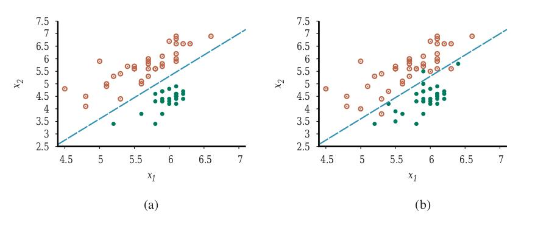
بهطورِ جایگزین، میتوانیم h را نتیجهٔ عبورِ تابعِ خطیِ w·x از «تابعِ آستانه» (Threshold Function) بدانیم:
hw(x) = Threshold(w·x)که در آن Threshold(z) = 1 اگر z ≥ 0 و در غیرِ این صورت 0. تابعِ آستانه در شکل ۱۹.۱۷(الف) نشان داده شده.
حالا که فرضیهٔ hw(x) شکلِ ریاضیِ خوشتعریفی دارد، میتوانیم به انتخابِ وزنهای w برای کمینهکردنِ زیان فکر کنیم. در بخشهای ۱۹.۶.۱ و ۱۹.۶.۳، این را هم بهصورتِ بسته (با صفرکردنِ گرادیان و حل برای وزنها) و هم با نزولِ گرادیان در فضایِ وزن انجام دادیم. در اینجا نمیتوانیم هیچکدام را انجام دهیم، زیرا گرادیان تقریباً همهجا در فضایِ وزن صفر است بهجز در نقاطی که w·x = 0، و در آن نقاط گرادیان تعریفنشده است. با این حال، قاعدهٔ بهروزرسانیِ وزنِ سادهای هست که به راهحل همگرا میشود—یعنی به جداکنندهٔ خطی که همهٔ مثالها را بهدرستی ردهبندی میکند. این قاعده «قاعدهٔ یادگیریِ پرسپترون» (Perceptron Learning Rule) نامیده میشود. برای مثالِ تکی (x,y)، داریم:
wi ← wi + α(y − hw(x)) × xi (19.8)که اساساً یکسان با معادلهٔ (19.6)، قاعدهٔ بهروزرسانیِ رگرسیونِ خطی است! چون مسئلهٔ ردهبندیِ 0/1 را در نظر میگیریم، رفتار تا حدی متفاوت است. هم مقدارِ واقعیِ y و هم خروجیِ فرضیهٔ hw(x) یا 0 هستند یا 1، پس سه امکان هست:
معمولاً قاعدهٔ یادگیری یکمثالدر-هر-بار اعمال میشود، با انتخابِ تصادفیِ مثالها (مانندِ نزولِ گرادیانِ تصادفی). شکل ۱۹.۱۶(الف) «منحنیِ آموزشی» (Training Curve) را برای این قاعدهٔ یادگیری روی دادهٔ زمینلرزه/انفجارِ نشاندادهشده در شکل ۱۹.۱۵(الف) نشان میدهد. منحنیِ آموزشی عملکردِ ردهبند را روی مجموعهٔ آموزشیِ ثابت اندازه میگیرد، در حالی که فرایندِ یادگیری یکبهیک روی آن مجموعهٔ آموزشی پیش میرود. منحنی نشان میدهد قاعدهٔ بهروزرسانی به جداکنندهٔ خطیِ صفر-خطا همگرا میشود. فرایندِ «همگرایی» دقیقاً زیبا نیست، اما همیشه کار میکند. این اجرایِ خاص 657 گام برای همگرایی میگیرد، برای مجموعهٔ دادهای با 63 مثال، پس هر مثال بهطورِ میانگین تقریباً ۱۰ بار ارائه میشود. معمولاً، تغییرِ بینِ اجراها زیاد است.
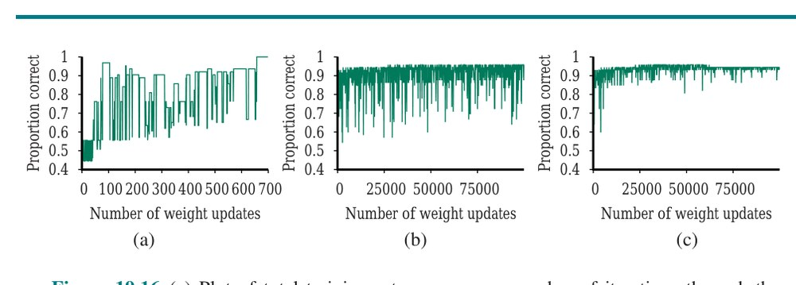
گفتهایم قاعدهٔ یادگیریِ پرسپترون وقتی نقاطِ داده قابلِ جداسازیِ خطیاند به جداکنندهٔ خطیِ کاملی همگرا میشود؛ اما اگر نباشند چه؟ این وضعیت در دنیای واقعی بیشازحد رایج است. برای نمونه، شکل ۱۹.۱۵(ب) نقاطِ دادهای را که کبیسی و همکاران (1998) هنگام رسمِ دادهٔ نشاندادهشده در شکل ۱۹.۱۵(الف) کنار گذاشتند دوباره اضافه میکند. در شکل ۱۹.۱۶(ب)، قاعدهٔ یادگیریِ پرسپترون را نشان میدهیم که حتی پس از ۱۰٬۰۰۰ گام همگرا نمیشود: حتی اگرچه بارها به راهحلِ کمینه-خطا (سه خطا) میرسد، الگوریتم به تغییرِ وزنها ادامه میدهد. بهطورِ کلی، قاعدهٔ پرسپترون ممکن است برای نرخِ یادگیریِ ثابتِ α به راهحلِ پایداری همگرا نشود، اما اگر α بهصورتِ O(1/t) فروپاشد، جایی که t شمارِ تکرار است، میتوان نشان داد قاعده وقتی مثالها در توالیِ تصادفی ارائه میشوند به راهحلِ کمینه-خطا همگرا میشود.¹⁰ همچنین میتوان نشان داد یافتنِ راهحلِ کمینه-خطا NP-سخت است، پس انتظار میرود برای رسیدنِ همگرایی ارائههای بسیاری از مثالها لازم باشد. شکل ۱۹.۱۶(ج) فرایندِ آموزشی را با برنامهٔ نرخِ یادگیریِ α(t) = 1000/(1000+t) نشان میدهد: همگرایی پس از ۱۰۰٬۰۰۰ تکرار کامل نیست، اما بسیار بهتر از حالتِ α ثابت است.
دیدهایم عبورِ خروجیِ تابعِ خطی از تابعِ آستانه، ردهبندِ خطی میسازد؛ اما ماهیتِ سختِ آستانه مشکلاتی ایجاد میکند: فرضیهٔ hw(x) مشتقپذیر نیست و در واقع تابعِ ناپیوستهای از ورودیها و وزنهایش است. این یادگیری با قاعدهٔ پرسپترون را ماجراجوییِ بسیار غیرقابلِپیشبینی میکند. علاوه بر این، ردهبندِ خطی همیشه پیشبینیِ کاملاً مطمئنِ 1 یا 0 را اعلام میکند، حتی برای مثالهایی که بسیار به مرز نزدیکاند؛ بهتر بود میتوانست برخی مثالها را 0 یا 1ِ واضح و برخی را مواردِ مرزیِ نامشخص ردهبندی کند.
همهٔ این مسائل را میتوان تا حد زیادی با نرمکردنِ تابعِ آستانه حل کرد—تقریبِ آستانهٔ سخت با تابعِ پیوسته و مشتقپذیر. در فصل ۱۳ (صفحهٔ ۴۲۴)، دو تابع را دیدیم که شبیهِ آستانههای نرماند: انتگرالِ توزیعِ نرمالِ استاندارد (استفادهشده برای مدلِ پروبیت) و تابعِ لجستیک (استفادهشده برای مدلِ لاجیت). اگرچه دو تابع از نظرِ شکل بسیار شبیهاند، تابعِ لجستیک Logistic(z) = 1/(1+e^(−z)) ویژگیهای ریاضیِ راحتتری دارد. تابع در شکل ۱۹.۱۷(ب) نشان داده شده.
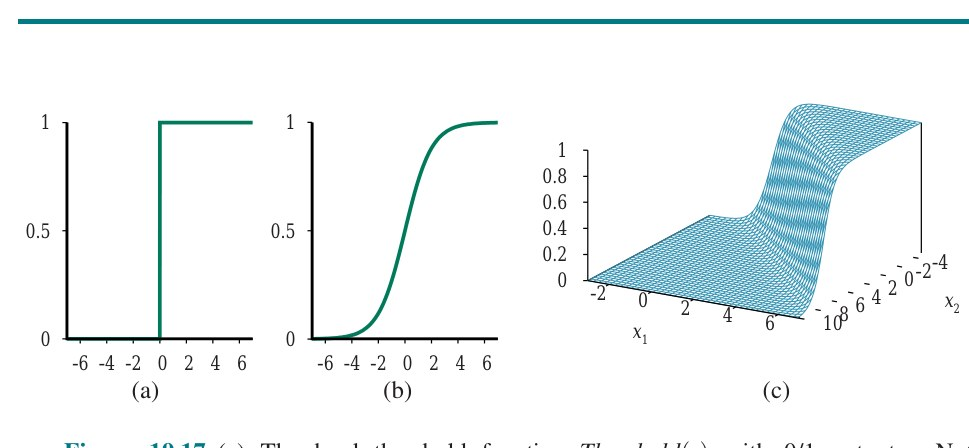
با جایگزینیِ تابعِ لجستیک بهجای تابعِ آستانه، حالا hw(x) = Logistic(w·x) = 1/(1+e^(−w·x)) داریم. نمونهای از چنین فرضیهای برای مسئلهٔ دودروندیِ زمینلرزه/انفجار در شکل ۱۹.۱۷(ج) نشان داده شده. توجه کنید خروجی، که عددی بینِ 0 و 1 است، میتواند بهعنوانِ احتمالِ تعلق به ردهٔ برچسبگذاریشده با 1 تفسیر شود. فرضیه مرزِ نرمی در فضایِ ورودی تشکیل میدهد و برای هر ورودی در مرکزِ ناحیهٔ مرزی احتمالِ 0.5 و با دورشدن از مرز به 0 یا 1 نزدیک میشود.
فرایندِ برازشِ وزنهای این مدل برای کمینهکردنِ زیان روی مجموعهٔ داده «رگرسیونِ لجستیک» (Logistic Regression) نامیده میشود. راهحلِ بستهای برای یافتنِ مقدارِ بهینهٔ w با این مدل نیست، اما محاسبهٔ نزولِ گرادیان سرراست است. چون فرضیههایمان دیگر فقط 0 یا 1 خروجی نمیدهند، از تابعِ زیانِ L2 استفاده میکنیم؛ همچنین، برای خواناییِ فرمولها، از g برای تابعِ لجستیک با مشتقِ g′ استفاده میکنیم.
برای مثالِ تکی (x,y)، اشتقاقِ گرادیان همانندِ رگرسیونِ خطی (معادلهٔ (19.5)) تا نقطهای است که شکلِ واقعیِ h جای میشود. (برای این اشتقاق، باز به قاعدهٔ زنجیرهای نیاز داریم.) داریم:
∂/∂wi Loss(w) = ∂/∂wi (y − hw(x))²
= 2(y − hw(x)) × ∂/∂wi (y − hw(x))
= −2(y − hw(x)) × g′(w·x) × ∂/∂wi (w·x)
= −2(y − hw(x)) × g′(w·x) × xiمشتقِ g′ تابعِ لجستیک g′(z) = g(z)(1−g(z)) را ارضا میکند، پس داریم:
g′(w·x) = g(w·x)(1−g(w·x)) = hw(x)(1−hw(x))بنابراین بهروزرسانیِ وزن برای کمینهکردنِ زیان، گامی در جهتِ تفاوتِ بینِ ورودی و پیشبینی، (y − hw(x))، برمیدارد و طولِ آن گام به ثابتِ α و g′ بستگی دارد:
wi ← wi + α(y − hw(x)) × hw(x)(1−hw(x)) × xi (19.9)با تکرارِ آزمایشهای شکل ۱۹.۱۶ با رگرسیونِ لجستیک بهجای ردهبندِ آستانهٔ خطی، نتایجِ نشاندادهشده در شکل ۱۹.۱۸ را به دست میآوریم. در (الف)، حالتِ قابلِ جداسازیِ خطی، رگرسیونِ لجستیک تا حدی کندتر همگرا میشود، اما بسیار قابلِپیشبینیتر رفتار میکند. در (ب) و (ج)، جایی که داده نویزی و غیرقابلِجداسازی است، رگرسیونِ لجستیک بسیار سریعتر و قابلِاعتمادتر همگرا میشود. این مزایا تمایل دارند به کاربردهای دنیایِ واقعی منتقل شوند، و رگرسیونِ لجستیک به یکی از محبوبترین فنونِ ردهبندی برای مسائلِ پزشکی، بازاریابی، تحلیلِ نظرسنجی، امتیازدهیِ اعتباری، بهداشتِ عمومی و دیگر کاربردها تبدیل شده.
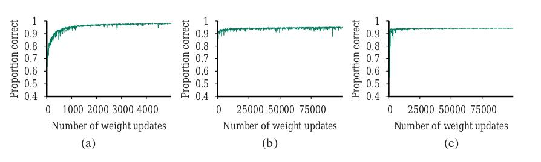
رگرسیونِ خطی از دادهٔ آموزشی برای برآوردِ مجموعهای ثابت از پارامترهای w استفاده میکند. این فرضیهٔ hw(x) ما را تعریف میکند، و در آن نقطه میتوانیم دادهٔ آموزشی را دور بیندازیم، زیرا همهشان با w خلاصه شدهاند. مدلِ یادگیری که داده را با مجموعهای از پارامترهای با اندازهٔ ثابت (مستقل از شمارِ مثالهای آموزشی) خلاصه میکند «مدلِ پارامتری» (Parametric Model) نامیده میشود.
وقتی مجموعههای داده کوچکاند، منطقی است محدودیتِ قویای بر فرضیههای مجاز داشته باشیم تا از بیشبرازش اجتناب کنیم. اما وقتی میلیونها یا میلیاردها مثال برای یادگیری هست، بهتر به نظر میرسد بگذاریم داده خودش حرف بزند، بهجای اینکه مجبورش کنیم از طریقِ بردارِ ریزی از پارامترها حرف بزند. اگر داده بگوید پاسخِ درست تابعِ بسیار پرنوسانی است، نباید خودمان را به توابعِ خطی یا کمی پرنوسان محدود کنیم.
«مدلِ ناپارامتری» (Nonparametric Model) مدلی است که نمیتوان آن را با مجموعهای کراندار از پارامترها مشخصهسازی کرد. برای نمونه، تابعِ تکهای-خطی از شکل ۱۹.۱ همهٔ نقاطِ داده را بهعنوانِ بخشی از مدل نگه میدارد. روشهای یادگیری که این کار را میکنند همچنین «یادگیریِ مبتنی بر نمونه» (Instance-Based Learning) یا «یادگیریِ مبتنی بر حافظه» (Memory-Based Learning) توصیف شدهاند. سادهترین روشِ یادگیریِ مبتنی بر نمونه «جستجوی جدولی» (Table Lookup) است: همهٔ مثالهای آموزشی را بگیر، در جدولِ جستجو بگذار، و سپس وقتی h(x) خواسته شد، ببین x در جدول است؛ اگر هست، y متناظر را برگردان. مسئلهٔ این روش این است که خوب تعمیم نمیدهد: وقتی x در جدول نیست، اطلاعاتی دربارهٔ مقدارِ محتمل نداریم.
میتوانیم جستجوی جدولی را با تغییرِ کوچکی بهبود دهیم: با توجه به پرسوجویِ xq، بهجای یافتنِ مثالی که برابرِ xq است، k مثالی را بیاب که به xq نزدیکتریناند. این «جستجوی k-نزدیکترین-همسایه» نامیده میشود. از نمادِ NN(k,xq) برای مجموعهٔ k همسایهٔ نزدیکترین به xq استفاده میکنیم. برای ردهبندی، مجموعهٔ همسایههای NN(k,xq) را بیاب و رایجترین مقدارِ خروجی را بگیر—برای نمونه، اگر k=3 و مقادیرِ خروجی ⟨Yes,No,Yes⟩ باشند، ردهبندی Yes خواهد بود. برای اجتناب از تساویها در ردهبندیِ دودویی، k معمولاً عددِ فرد انتخاب میشود.
برای رگرسیون، میتوانیم میانگین یا میانهٔ k همسایه را بگیریم، یا میتوانیم مسئلهٔ رگرسیونِ خطی را روی همسایهها حل کنیم. تابعِ تکهای-خطی از شکل ۱۹.۱ مسئلهٔ رگرسیونِ خطیِ (بیاهمیت) را با دو نقطهٔ دادهٔ سمتِ راست و چپِ xq حل میکند. (وقتی نقاطِ دادهٔ xi بهطورِ مساوی فاصلهدارند، این دو نزدیکترین همسایه خواهند بود.) در شکل ۱۹.۱۹، مرزِ تصمیمِ ردهبندیِ k-نزدیکترین-همسایه را برای k = 1 و 5 روی مجموعهٔ دادهٔ زمینلرزه از شکل ۱۹.۱۵ نشان میدهیم.
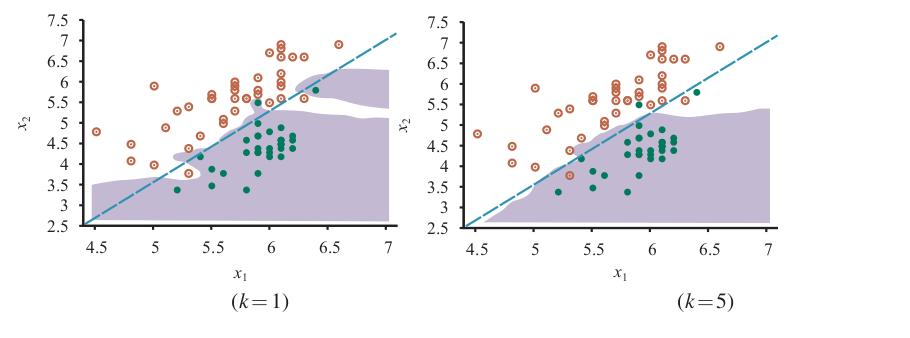
روشهای ناپارامتری همچنان در معرضِ کمبرازش و بیشبرازشاند، درست مانندِ روشهای پارامتری. در این مورد، 1-نزدیکترین-همسایه بیشبرازش میکند؛ بیشازحد به دورافتادهٔ سیاه در بالا-راست و دورافتادهٔ سفید در (5.4, 3.7) واکنش نشان میدهد. مرزِ تصمیمِ 5-نزدیکترین-همسایه خوب است؛ k بالاتر کمبرازش میکرد. مثلِ همیشه، اعتبارسنجیِ متقاطع میتواند برای انتخابِ بهترین مقدارِ k استفاده شود.
خودِ واژهٔ «نزدیکترین» دلالت بر معیارِ فاصله دارد. چگونه فاصلهٔ نقطهٔ پرسوجویِ xq تا نقطهٔ مثالِ xj را اندازه بگیریم؟ معمولاً، فاصلهها با «فاصلهٔ مینکوسکی» (Minkowski Distance) یا هنجارِ Lp اندازهگیری میشوند، که چنین تعریف میشود:
Lp(xj, xq) = (∑i |xj,i − xq,i|^p)^(1/p)با p=2 این فاصلهٔ اقلیدسی و با p=1 فاصلهٔ منهتن است. با مقادیرِ ویژگیِ بولی، شمارِ ویژگیهایی که دو نقطه در آنها متفاوتاند «فاصلهٔ همینگ» (Hamming Distance) نامیده میشود. اغلب اگر ابعاد ویژگیهای مشابهی را اندازه میگیرند فاصلهٔ اقلیدسی استفاده میشود، مانندِ عرض، ارتفاع و عمقِ قطعات، و اگر نامشابهاند فاصلهٔ منهتن، مانندِ سن، وزن و جنسیتِ بیمار. توجه کنید اگر از اعدادِ خامِ هر بُعد استفاده کنیم، فاصلهٔ کل با تغییرِ واحدها در هر بُعد اثر میپذیرد. یعنی، اگر بُعدِ ارتفاع را از متر به مایل تغییر دهیم در حالی که عرض و عمق را ثابت نگه داریم، نزدیکترین همسایههای متفاوتی میگیریم. و چگونه تفاوتِ سن را با تفاوتِ وزن مقایسه کنیم؟ رویکردِ رایج اعمالِ «نرمالسازی» (Normalization) بر اندازهگیریهای هر بُعد است. میتوانیم میانگینِ µi و انحرافِ معیارِ σi مقادیرِ هر بُعد را محاسبه و آنها را بازمقیاس کنیم، بهگونهای که xj,i به (xj,i − µi)/σi تبدیل شود. معیارِ پیچیدهتری به نامِ «فاصلهٔ ماهالانوبیس» (Mahalanobis Distance) کوواریانسِ بینِ ابعاد را در نظر میگیرد.
در فضاهایِ کمبعد با دادهٔ فراوان، نزدیکترین همسایهها بسیار خوب کار میکنند: احتمالاً نقاطِ دادهٔ نزدیکِ کافی برای پاسخِ خوب داریم. اما با افزایشِ شمارِ ابعاد با مسئلهای روبهرو میشویم: نزدیکترین همسایهها در فضاهایِ پربعد معمولاً چندان نزدیک نیستند! k-نزدیکترین-همسایه را روی مجموعهٔ دادهای از N نقطه که بهصورتِ یکنواخت درونِ ابرمکعبِ واحدِ n-بعدی توزیع شدهاند در نظر بگیر. k-همسایگیِ یک نقطه را کوچکترین ابرمکعبی تعریف میکنیم که k نزدیکترین همسایه را دارد. ℓ میانگینِ طولِ ضلعِ همسایگی باشد. سپس حجمِ همسایگی (که k نقطه دارد) ℓⁿ و حجمِ مکعبِ کامل (که N نقطه دارد) 1 است. پس، بهطورِ میانگین، ℓⁿ = k/N، و بنابراین:
ℓ = (k/N)^(1/n)این «نفرینِ ابعاد» (Curse of Dimensionality) نامیده میشود. برای نمونه، برای N = 10,000 نقطه و n = 10 بعد، میانگینِ طولِ ضلعِ همسایگی (1/1000)^(1/10) ≈ 0.5 است. بدینترتیب، در ۱۰ بُعد، «نزدیکترین» همسایهها فقط ۵۰٪ از هر بُعد فاصله دارند؛ در ۲ بعد، همسایگیها فقط ۳٪ از هر بُعد را پوشش میدهند. در ۱۰۰ بعد، ℓ ≈ 0.955 است؛ یعنی برای یافتنِ همسایهها باید تقریباً کلِ فضایِ ورودی را بپیماییم! نفرینِ ابعاد نخستین بار توسط ریچارد بلمن (1961) شناسایی شد.
درختِ دودوییِ متوازن روی داده با شمارِ دلخواهِ ابعاد «درختِ k-d» (K-D Tree) نامیده میشود، بهمعنای درختِ k-بعدی. ساختِ درختِ k-d شبیهِ ساختِ درختِ دودوییِ متوازن است. با مجموعهای از مثالها شروع میکنیم و در گرهٔ ریشه آنها را در امتدادِ بُعدِ iام با آزمونِ اینکه آیا xi ≤ m است، که در آن m میانهٔ مثالها در امتدادِ بُعدِ iام است، تقسیم میکنیم؛ بدینترتیب نصفِ مثالها در شاخهٔ چپِ درخت و نصف در راست خواهد بود. سپس بهصورتِ بازگشتی برای مجموعههای چپ و راستِ مثالها درخت میسازیم، وقتی کمتر از دو مثال باقی مانده متوقف میشویم. برای انتخابِ بُعدِ تقسیم در هر گرهٔ درخت، میتوان بهسادگی بُعدِ i mod n را در سطحِ i درخت انتخاب کرد. (توجه کنید ممکن است لازم باشد در طولِ پایینرفتنِ درخت چند بار روی هر بُعدِ معین تقسیم کنیم.) استراتژیِ دیگر تقسیم بر بُعدی است که گستردهترین پخشِ مقادیر را دارد.
جستجوی دقیق از درختِ k-d مانندِ جستجو از درختِ دودویی است (با پیچیدگیِ جزیی که باید توجه کنید در هر گره کدام بُعد را آزمایش میکنید). اما جستجوی نزدیکترین-همسایه پیچیدهتر است. همانطور که از شاخهها پایین میرویم و مثالها را نصف میکنیم، در برخی موارد میتوانیم نیمی از مثالها را نادیده بگیریم. اما نه همیشه. گاهی نقطهای که برایش پرسوجو میکنیم بسیار نزدیکِ مرزِ تقسیم میافتد. خودِ نقطهٔ پرسوجو ممکن است در سمتِ چپِ مرز باشد، اما یک یا چند مورد از k نزدیکترین همسایه ممکن است در واقع در سمتِ راست باشند. باید این امکان را با محاسبهٔ فاصلهٔ نقطهٔ پرسوجو تا مرزِ تقسیم آزمایش کنیم، و سپس اگر فاصله کمتر از فاصلهٔ تا k-امین همسایهٔ فعلی باشد، باید در سمتِ دیگر نیز جستجو کنیم. پیچیدگیِ تحلیلِ موردِ متوسطِ جستجوی نزدیکترین-همسایه در درختِ k-d، O(n) در تعدادِ ابعاد است (یعنی، درختِ k-d در زمانِ چندجملهای در n جستجو میکند، اما در N فقط O(log N) اگر n ثابت باشد). برای کاربردهایی مانندِ جستجوی تصویر یا دادهٔ ژنومی، ابعاد میتوانند در هزاران باشند، و درختهای k-d عملاً بیفایده میشوند. برای این موارد، به دنبال راههای تقریبی میگردیم.
جدولهای درهمسازی پتانسیلِ جستجویِ حتی سریعتری از درختهای دودویی دارند. اما چگونه میتوانیم با جدولِ درهمسازی نزدیکترین همسایهها را بیابیم، وقتی کدهای درهمسازی بر تطابقِ دقیق تکیه دارند؟ کدهای درهمسازی مقادیر را بهصورتِ تصادفی بینِ سطلها توزیع میکنند، اما ما میخواهیم نقاطِ نزدیک در همان سطل گروهبندی شوند؛ به «درهمسازیِ حساس-به-محل» (Locality-Sensitive Hash) یا LSH نیاز داریم.
نمیتوانیم از درهمسازیها برای حلِ دقیقِ NN(k,xq) استفاده کنیم، اما با استفادهی هوشمندانه از الگوریتمهای تصادفی، میتوانیم راهحلِ تقریبی بیابیم. نخست مسئلهٔ «نزدیکترین-همسایههایِ تقریبی» را تعریف میکنیم: با توجه به مجموعهای از نقاطِ مثال و نقطهٔ پرسوجویِ xq، با احتمالِ بالا نقطهٔ مثالی (یا نقاطی) را بیاب که به xq نزدیک است. دقیقتر، الزام میکنیم اگر نقطهٔ xj در شعاعِ r از xq باشد، آنگاه با احتمالِ بالا الگوریتم نقطهٔ xj′ را خواهد یافت که در فاصلهٔ cr از xq است. اگر هیچ نقطهای در شعاعِ r نباشد، الگوریتم مجاز است شکست را گزارش کند. مقادیرِ c و «احتمالِ بالا» ابرپارامترهای الگوریتماند.
برای حلِ نزدیکترین-همسایههای تقریبی، به تابعِ درهمسازیِ g(x) نیاز داریم که این ویژگی را داشته باشد که برای هر دو نقطهٔ xj و xj′، احتمالِ اینکه همان کدِ درهمسازی را داشته باشند اگر فاصلهشان کم باشد زیاد و اگر فاصلهشان زیاد باشد کم است. ساختِ چنین تابعی از تابعِ سادهترِ h(x) که یک مختصهٔ تصادفیِ انتخابشده از بردارِ x را برمیگرداند، آسان است. توابعِ درهمسازیِ h_i را با انتخابِ تصادفیِ بُعدی و سطلبندیِ تصادفیِ مقدارِ آن بُعد میسازیم. اگر نقاط نزدیکاند، در هر بُعدِ تصادفیِ انتخابی مقادیرِ مشابهی دارند؛ اگر دور باشند، احتمالِ اینکه همان بُعدِ انتخابی را داشته باشند و در همان سطلِ انتخابی بیفتند بسیار کم است. سپس g(x) را بهصورتِ الحاقِ (یا فهرستِ) h_iهای انتخابشده تعریف میکنیم. نقاطی که با g(xq) درهمسازی میشوند کاندیدهای نزدیکترین همسایههای تقریبیاند؛ با شماری از gهای مستقلِ ساختهشده، احتمالِ اینکه یک همسایهٔ نزدیکِ واقعی حداقل در یکی از جدولهای درهمسازی با xq همسطل شود را میتوانیم بالا ببریم. برای نمونه، با ۲۵ جدولِ درهمسازیِ LSH، رسیدن به ۹۰٪ احتمالِ یافتنِ همسایهٔ نزدیک برای فاصلهٔ داده شده رایج است. این فن امکانِ بازیابیِ تقریبیِ سریعِ مشابهترینها را در مجموعههای دادهٔ میلیاردی میدهد و برای دادهٔ ژنومی، که هر رکورد میلیونها ویژگی دارد، بهطورِ خاص مفید است (برلین و همکاران، 2015).
حالا به رویکردهای ناپارامتریِ رگرسیون بهجای ردهبندی نگاه میکنیم. شکل ۱۹.۲۰ نمونهای از مدلهای مختلف را نشان میدهد. در (الف)، شاید سادهترین روشِ همه را داریم، که بهصورتِ غیررسمی «وصلکردنِ نقطهها» و بهصورتِ تحقیرآمیز «رگرسیونِ ناپارامتریِ تکهای-خطی» شناخته میشود. این مدل تابعِ h(x) را ایجاد میکند که، وقتی پرسوجویِ xq داده میشود، مثالهای آموزشیِ بلافاصلهٔ چپ و راستِ xq را در نظر میگیرد و بینِ آنها درونیابی میکند. وقتی نویز کم است، این روشِ بیاهمیت در واقع چندان بد نیست، به همین دلیل است که ویژگیِ استانداردِ نرمافزارهای نمودارکشی در صفحهگستردههاست. اما وقتی داده نویزی است، تابعِ حاصل تیغی است و خوب تعمیم نمیدهد.
«رگرسیونِ نزدیکترین-همسایهها» وصلکردنِ نقطهها را بهبود میبخشد. بهجای استفاده از فقط دو مثالِ چپ و راستِ نقطهٔ پرسوجویِ xq، از k نزدیکترین همسایه استفاده میکنیم. (در اینجا k=3 استفاده میکنیم.) مقدارِ بزرگترِ k تمایل به صافکردنِ بزرگیِ تیغهها دارد، هرچند تابعِ حاصل ناپیوستگی دارد. شکل ۱۹.۲۰ دو نسخه از رگرسیونِ k-نزدیکترین-همسایه را نشان میدهد. در (ب)، میانگینِ k-نزدیکترین-همسایه را داریم: h(x) مقدارِ میانگینِ k نقطه، ∑yj/k است. توجه کنید در نقاطِ دورافتاده، نزدیکِ x=0 و x=14، برآوردها ضعیفاند، زیرا همهٔ شواهد از یک سمت (داخل) میآیند و روند را نادیده میگیرند. در (ج)، رگرسیونِ خطیِ k-نزدیکترین-همسایه را داریم، که بهترین خط را از میانِ k مثال مییابد. این کارِ بهتری در ثبتِ روندها در دورافتادهها میکند، اما همچنان ناپیوسته است. در هر دو (ب) و (ج)، با پرسشِ انتخابِ مقدارِ خوبِ k رها میشویم. پاسخ، مثلِ همیشه، اعتبارسنجیِ متقاطع است.
«رگرسیونِ وزنمحلی» (Locally Weighted Regression؛ شکل ۱۹.۲۰(د)) مزایای نزدیکترین همسایهها را بدونِ ناپیوستگیها به ما میدهد. برای اجتناب از ناپیوستگی در h(x)، باید از ناپیوستگی در مجموعهٔ مثالهای استفادهشده برای برآوردِ h(x) اجتناب کنیم. ایدهٔ رگرسیونِ وزنمحلی این است که در هر نقطهٔ پرسوجویِ xq، مثالهایی که به xq نزدیکاند بهشدت وزنگذاری میشوند، مثالهایی که دورترند کمتر وزنگذاری میشوند، و دورترینها اصلاً وزنگذاری نمیشوند. کاهشِ وزن روی فاصله معمولاً تدریجی است، نه ناگهانی.
تصمیم میگیریم هر مثال چقدر وزن بگیرد با تابعی به نام «هسته» (Kernel)، که ورودیاش فاصلهٔ بینِ نقطهٔ پرسوجو و مثال است. تابعِ هستهٔ K تابعِ کاهندهای از فاصله با بیشینه در 0 است، پس K(Distance(xj,xq)) وزنِ بیشتری به مثالهای xj میدهد که به نقطهٔ پرسوجویِ xq نزدیکترند، که برایش میخواهیم مقدارِ تابع را پیشبینی کنیم. انتگرالِ مقدارِ هسته روی کلِ فضایِ ورودیِ x باید متناهی باشد—و اگر انتخاب کنیم انتگرال 1 باشد، برخی محاسبات آسانتر میشوند.
شکل ۱۹.۲۰(د) با هستهٔ درجهدومی، K(d) = max(0, 1 − (2|d|/w)²)، با پهنایِ هستهٔ w = 10 تولید شد. شکلهای دیگر، مانندِ گاوسیها، نیز استفاده میشوند. معمولاً، پهنایِ هسته مهمتر از شکلِ دقیقش است: این ابرپارامترِ مدل است که بهتر است با اعتبارسنجیِ متقاطع انتخاب شود. اگر هستهها بیشازحد پهن باشند کمبرازش و اگر بیشازحد باریک باشند بیشبرازش میگیریم. در شکل ۱۹.۲۰(د)، پهنایِ هستهٔ 10 منحنیِ نرمی میدهد که درست به نظر میرسد.
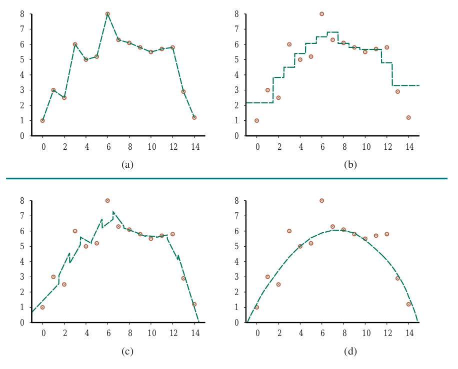
انجامِ رگرسیونِ وزنمحلی با هستهها حالا سرراست است. برای نقطهٔ پرسوجویِ معینِ xq مسئلهٔ رگرسیونِ وزندارِ زیر را حل میکنیم:
w* = argmin_w ∑j K(Distance(xq, xj)) (yj − w·xj)²که در آن Distance هر یک از معیارهای فاصلهٔ بحثشده برای نزدیکترین همسایههاست. سپس پاسخ h(xq) = w*·xq است. توجه کنید برای هر نقطهٔ پرسوجو باید مسئلهٔ رگرسیونِ تازهای حل کنیم—این همان معنای محلیبودن است. (در رگرسیونِ خطیِ معمولی، مسئلهٔ رگرسیون را یک بار، بهصورتِ سراسری، حل میکردیم و سپس از همان hw برای هر نقطهٔ پرسوجو استفاده میکردیم.) در برابرِ این کارِ اضافه، این واقعیت است که هر مسئلهٔ رگرسیون آسانتر حل میشود، زیرا فقط مثالهای با وزنِ غیرصفر را شامل میشود—مثالهایی که درونِ پهنایِ هسته از پرسوجو هستند. وقتی پهنایِ هستهها کوچک است، این ممکن است فقط چند نقطه باشد.
بیشترِ مدلهای ناپارامتری این مزیت را دارند که انجامِ اعتبارسنجیِ متقاطعِ یک-بیرونگذاری بدونِ نیاز به بازمحاسبهٔ همهچیز آسان است. با مدلِ k-نزدیکترین-همسایه، برای نمونه، وقتی مثالِ آزمونِ (x,y) داده میشود، یک بار k نزدیکترین همسایه را بازیابی میکنیم، زیانِ هر مثالِ L(y,h(x)) را از آنها محاسبه میکنیم، و آن را بهعنوانِ نتیجهٔ یک-بیرونگذاری برای هر مثالی که یکی از همسایهها نیست ثبت میکنیم. سپس k+1 نزدیکترین همسایه را بازیابی میکنیم و نتایجِ متمایز را برای بیرونگذاشتنِ هر یک از k همسایه ثبت میکنیم. با N مثال، کلِ فرایند O(k) است، نه O(kN).
در اوایلِ دههٔ ۲۰۰۰، ردهٔ مدلِ «ماشینِ بردارِ پشتیبان» (Support Vector Machine یا SVM) محبوبترین رویکرد برای یادگیریِ نظارتشدهٔ «آماده» بود، برای وقتی که دانشِ قبلیِ تخصصی دربارهٔ حوزه ندارید. آن جایگاه اکنون توسط شبکههای یادگیریِ عمیق و جنگلهای تصادفی گرفته شده، اما SVMها سه ویژگیِ جذاب را حفظ کردهاند:
بدینترتیب SVMها مزایای مدلهای ناپارامتری و پارامتری را ترکیب میکنند: انعطافِ بازنماییِ توابعِ پیچیده را دارند، اما در برابرِ بیشبرازش مقاوماند.
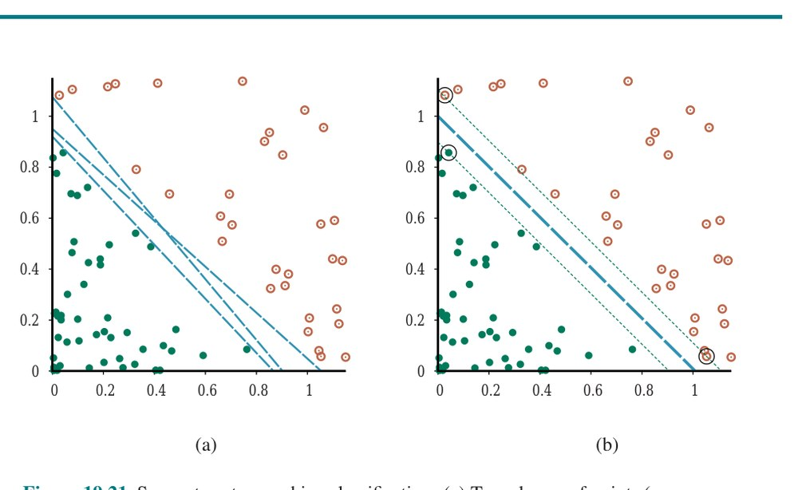
در شکل ۱۹.۲۱(الف) مسئلهٔ ردهبندیِ دودویی با سه مرزِ تصمیمِ نامزد میبینیم، که هر یک جداکنندهٔ خطی است. هر یک با همهٔ مثالها سازگار است، پس از دیدگاهِ زیانِ 0/1، هر یک بهیکسان خوب میبود. رگرسیونِ لجستیک خطِ جداکنندهای مییافت؛ مکانِ دقیقِ خط به همهٔ نقاطِ مثال بستگی دارد.
بینشِ کلیدیِ SVMها این است که برخی مثالها مهمتر از دیگراناند، و توجه به آنها میتواند به تعمیمِ بهتر بینجامد. پایینترینِ سه خطِ جداکننده در (الف) را در نظر بگیرید. بسیار به پنج مثالِ سیاه نزدیک میشود. اگرچه همهٔ مثالها را درست ردهبندی میکند و بنابراین زیان را کمینه میکند، باید شما را نگران کند که اینهمه مثال نزدیکِ خطاند؛ ممکن است مثالهای سیاهِ دیگری معلوم شوند در سمتِ اشتباهِ خط بیفتند.
SVMها به این مسئله میپردازند: بهجای کمینهکردنِ زیانِ تجربیِ موردانتظار روی دادهٔ آموزشی، SVMها تلاش میکنند زیانِ تعمیمِ موردانتظار را کمینه کنند. نمیدانیم نقاطِ هنوز-دیدهنشده کجا ممکن است بیفتند، اما تحتِ فرضِ احتمالاتیِ کشیدهشدنشان از همان توزیعِ مثالهای قبلی، استدلالهایی از نظریهٔ یادگیریِ محاسباتی (بخش ۱۹.۵) هست که پیشنهاد میکنند زیانِ تعمیم را با انتخابِ جداکنندهای که از مثالهایی که تاکنون دیدهایم دورترین است کمینه کنیم. این جداکننده، که در شکل ۱۹.۲۱(ب) نشان داده شده، «جداکنندهٔ حاشیهٔ بیشینه» نامیده میشود. «حاشیه» (Margin) پهنایِ ناحیهٔ کرانشده با خطهای خطچین در شکل است—دو برابرِ فاصله از جداکننده تا نزدیکترین نقطهٔ مثال.
حالا، چگونه این جداکننده را بیابیم؟ قبل از نشاندادنِ معادلهها، کمی نماد: بهطورِ سنتی SVMها از قراردادِ برچسبهای ردهٔ +1 و −1 استفاده میکنند، بهجای +1 و 0 که تاکنون استفاده میکردیم. همچنین، در حالی که قبلاً عرض از مبدأ را در بردارِ وزنِ w میگذاشتیم (و مقدارِ دامیِ متناظرِ 1 در xj,0)، SVMها این کار را نمیکنند؛ عرض از مبدأ را پارامترِ جداگانهای به نامِ b نگه میدارند.
با این در نظر، جداکننده بهصورتِ مجموعهٔ نقاطِ {x : w·x + b = 0} تعریف میشود. میتوانستیم فضایِ w و b را با نزولِ گرادیان جستجو کنیم تا پارامترهایی را بیابیم که حاشیه را بیشینه میکنند در حالی که همهٔ مثالها را درست ردهبندی میکنند. با این حال، معلوم میشود رویکردِ دیگری برای حلِ این مسئله هست. جزئیات را نشان نمیدهیم، اما فقط میگوییم بازنماییِ جایگزینی به نامِ «بازنماییِ دوگان» (Dual Representation) هست، که در آن راهحلِ بهینه با حلِ:
argmax_α ∑j αj − (1/2) ∑j,k αjαkyjyk(xj·xk) (19.10)مشروط به قیدهای αj ≥ 0 و ∑j αj yj = 0 یافت میشود. این مسئلهٔ «برنامهنویسیِ درجهدومی» (Quadratic Programming) است، که بستههای نرمافزاریِ خوبی برایش هست. وقتی بردارِ α را یافتیم، میتوانیم با معادلهٔ w = ∑j αj yj xj به w برگردیم، یا میتوانیم در بازنماییِ دوگان بمانیم. سه ویژگیِ مهمِ معادلهٔ (19.10) هست. نخست، عبارت محدب است؛ بیشینهٔ سراسریِ تکی دارد که میتوان کارآمد یافت. دوم، داده فقط به شکلِ ضربهای نقطهایِ جفتهای نقطه وارد عبارت میشود. این ویژگیِ دوم همچنین برای معادلهٔ خودِ جداکننده صادق است؛ وقتی αjهای بهینه محاسبه شدند، معادله:
h(x) = sign(∑j αj yj (x·xj) − b) (19.11)است.¹¹ ویژگیِ مهمِ نهایی این است که وزنهای αj مرتبط با هر نقطهٔ داده صفرند بهجز برای «بردارهای پشتیبان» (Support Vectors)—نقاطِ نزدیکترین به جداکننده. (آنها «پشتیبان» نامیده میشوند، زیرا صفحهٔ جداکننده را «بالا نگه میدارند».) چون معمولاً بردارهای پشتیبان بسیار کمشمارتر از مثالها هستند، SVMها برخی از مزایای مدلهای پارامتری را به دست میآورند.
اگر مثالها قابلِ جداسازیِ خطی نباشند چه؟ شکل ۱۹.۲۲(الف) فضایِ ورودیِ تعریفشده با ویژگیهای x = (x1,x2) را نشان میدهد، با مثالهای مثبت (y = +1) درونِ ناحیهٔ دایرهای و مثالهای منفی (y = −1) بیرون. بدیهی است، برای این مسئله جداکنندهٔ خطی نیست.
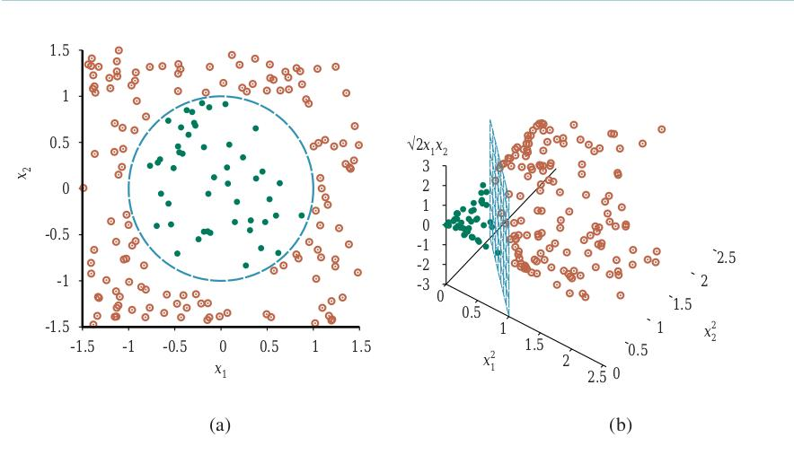
حالا، فرض کنیم دادهٔ ورودی را بازبیان کنیم—یعنی هر بردارِ ورودیِ x را به بردارِ تازهای از مقادیرِ ویژگی، F(x)، نگاشت کنیم. بهطورِ خاص، از سه ویژگی استفاده کنیم:
f1 = x1²، f2 = x2²، f3 = √2 x1x2 (19.12)بهزودی خواهیم دید اینها از کجا آمدند، اما فعلاً فقط به آنچه رخ میدهد نگاه کنید. شکل ۱۹.۲۲(ب) داده را در فضایِ تازهٔ سهبعدیِ تعریفشده توسط سه ویژگی نشان میدهد؛ داده در این فضا قابلِ جداسازیِ خطی است! این پدیده در واقع نسبتاً عمومی است: اگر داده به فضایی با بُعدِ بهاندازهٔ کافی بالا نگاشت شود، تقریباً همیشه قابلِ جداسازیِ خطی خواهد بود—اگر از جهتهای کافی به مجموعهای از نقاط نگاه کنید، راهی برای ردیفکردنشان خواهید یافت. در اینجا فقط از سه بُعد استفاده کردیم؛¹² تمرین ۱۹.SVME از شما میخواهد نشان دهید چهار بُعد برای جداسازیِ خطیِ دایره در هر جایِ صفحه (نه فقط در مبدأ) کافی است، و پنج بُعد برای جداسازیِ خطیِ هر بیضی کافی است. بهطورِ کلی (با چند حالتِ خاصِ مستثنا) اگر N نقطهٔ داده داشته باشیم، همیشه در فضاهایِ با N−1 بُعد یا بیشتر قابلِ جداسازی خواهند بود (تمرین ۱۹.EMBE).
حالا، معمولاً انتظارِ یافتنِ جداکنندهٔ خطی در فضایِ ورودیِ x را نداریم، اما میتوانیم جداکنندههای خطی را در فضایِ ویژگیِ پربعدِ F(x) صرفاً با جایگزینیِ xj·xk در معادلهٔ (19.10) با F(xj)·F(xk) بیابیم. این بهخودیخود قابلِ توجه نیست—جایگزینیِ x با F(x) در هر الگوریتمِ یادگیری اثرِ لازم را دارد—اما ضربِ نقطهای ویژگیهای خاصی دارد. معلوم میشود F(xj)·F(xk) اغلب بدونِ محاسبهٔ اولِ F برای هر نقطه قابلِ محاسبه است. در فضایِ ویژگیِ سهبعدیِ ما که با معادلهٔ (19.12) تعریف شده، کمی جبر نشان میدهد:
F(xj)·F(xk) = (xj·xk)²(به همین دلیل است که √2 در f3 هست.) عبارتِ (xj·xk)² «تابعِ هسته» (Kernel Function) نامیده میشود¹³ و معمولاً K(xj,xk) نوشته میشود. تابعِ هسته را میتوان روی جفتهای دادهٔ ورودی برای ارزیابیِ ضربهای نقطهای در فضایِ ویژگیِ متناظر اعمال کرد. پس، میتوانیم جداکنندههای خطی را در فضایِ ویژگیِ پربعدِ F(x) صرفاً با جایگزینیِ xj·xk در معادلهٔ (19.10) با تابعِ هستهٔ K(xj,xk) بیابیم. بدینترتیب، میتوانیم در فضایِ پربعد یاد بگیریم، اما فقط توابعِ هسته را محاسبه میکنیم، نه فهرستِ کاملِ ویژگیها را برای هر نقطهٔ داده.
گامِ بعدی دیدنِ این است که در هستهٔ K(xj,xk) = (xj·xk)² چیزِ خاصی نیست. با فضایِ ویژگیِ پربعدِ خاصی متناظر است، اما توابعِ هستهٔ دیگر با فضاهایِ ویژگیِ دیگر متناظرند. نتیجهٔ ارجمندی در ریاضیات، «قضیهٔ مرسر» (Mercer's Theorem؛ 1909)، به ما میگوید هر تابعِ هستهٔ «معقول»¹⁴ با فضایِ ویژگیای متناظر است. این فضاهایِ ویژگی میتوانند بسیار بزرگ باشند، حتی برای هستههای بیآزار به نظر. برای نمونه، «هستهٔ چندجملهای» (Polynomial Kernel)، K(xj,xk) = (1 + xj·xk)^d، با فضایِ ویژگیای متناظر است که بُعدش در d نمایی است. هستهٔ رایجِ دیگر گاوسی است: K(xj,xk) = e^(−γ|xj−xk|²).
این پس «حقهٔ هسته» (Kernel Trick) هوشمندانه است: با جایکردنِ این هستهها در معادلهٔ (19.10)، جداکنندههای خطیِ بهینه را میتوان کارآمد در فضاهایِ ویژگی با میلیاردها (یا حتی بینهایت) بُعد یافت. جداکنندههای خطیِ حاصل، وقتی به فضایِ ورودیِ اصلی بازنگاشت میشوند، میتوانند با مرزهایِ تصمیمِ غیرخطیِ خودسرانهای پرنوسان بینِ مثالهای مثبت و منفی متناظر باشند. در موردِ دادهٔ ذاتاً نویزی، ممکن است جداکنندهٔ خطی در فضایِ پربعدی نخواهیم. بلکه سطحِ تصمیمی در فضایِ کمبعد میخواهیم که برخی مثالهای آموزشی را اشتباه ردهبندی کند—یعنی «حاشیهٔ نرم» (Soft Margin).¹⁷ حاشیهٔ نرم با معرفیِ متغیرهای سستی که اجازه میدهند برخی مثالها در سمتِ اشتباهِ مرز باشند، اما با جریمهکردنِ آنها، به دست میآید. SVMهای حاشیهٔ نرم (که گاهی «SVMهای C» نامیده میشوند) معمولاً شکلِ عملیِ استفادهشده در عملاند.
تاکنون به روشهای یادگیری نگاه کردهایم که یک فرضیهٔ تکی از دادهٔ آموزشی میسازند. «یادگیریِ گروهی» (Ensemble Learning) از چند فرضیه استفاده میکند که «گروهِ» (Ensemble) فرضیهها را تشکیل میدهند، و آنها را برای پیشبینیهای تازه ترکیب میکند. ایدهای که در پشتِ این است این است که با ترکیبِ چند فرضیه میتوانیم دقتِ بهتری از هر فرضیهٔ فردی بگیریم. یک استدلالِ ریاضیِ اولیه برای ارزشِ گروهها «قضیهٔ هیئتمنصفهٔ کندورسه» (1785) بود، که اثبات کرد اگر اعضای هیئتمنصفه مستقلاند و هر عضوِ فردیِ هیئتمنصفه دستِکم ۵۰٪ شانسِ تصمیمِ درست دارد، آنگاه هرچه اعضای هیئتمنصفه بیشتری بیفزایید، شانسِ تصمیمِ درستِ پرونده بیشتر میشود. اخیراً، یادگیریِ گروهی به فنِ فزایندهای محبوب برای بهبودِ عملکردِ الگوریتمهای یادگیری تبدیل شده.
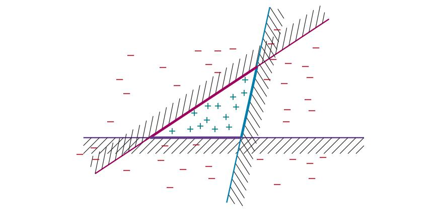
در «بیگینگ» (Bagging)،¹⁵ K مجموعهٔ آموزشیِ متمایز را با نمونهبرداریِ با جایگزینی از مجموعهٔ آموزشیِ اصلی تولید میکنیم. یعنی، بهصورتِ تصادفی N مثال از مجموعهٔ آموزشی برمیداریم، اما هر یک از آن انتخابها ممکن است مثالی باشد که قبلاً برداشتهایم. سپس الگوریتمِ یادگیریِ ماشینیمان را روی N مثال اجرا میکنیم تا فرضیهای بگیریم. این فرایند را K بار تکرار میکنیم و K فرضیهٔ متفاوت میگیریم. سپس، وقتی خواسته میشود مقدارِ ورودیِ تازهای پیشبینی شود، پیشبینیهای همهٔ K فرضیه را تجمیع میکنیم. برای مسائلِ ردهبندی، این به معنای گرفتنِ رأیِ کثرت است (رأیِ اکثریت برای ردهبندیِ دودویی). برای مسائلِ رگرسیون، خروجیِ نهایی میانگین است:
h(x) = (1/K) ∑_{i=1}^{K} hi(x)بیگینگ تمایل به کاهشِ واریانس دارد و وقتی داده محدود است یا مدلِ پایه دیده میشود بیشبرازش میکند رویکردِ استانداردی است. بیگینگ را میتوان روی هر ردهای از مدل اعمال کرد، اما معمولترین استفادهاش با درختهای تصمیم است. مناسب است، زیرا درختهای تصمیم ناپایدارند: مجموعهٔ کمی متفاوت از مثالها میتواند به درختِ وحشیانهای متفاوت بینجامد. بیگینگ این واریانس را صاف میکند. اگر به چند رایانه دسترسی دارید، بیگینگ کارآمد است، زیرا فرضیهها را میتوان بهصورتِ موازی محاسبه کرد.
متأسفانه، بیگینگِ درختهای تصمیم اغلب به ما K درختِ بسیار همبسته میانجامد. اگر ویژگیای با بهرهٔ اطلاعاتیِ بسیار بالا باشد، محتمل است ریشهٔ بیشترِ درختها باشد. مدلِ «جنگلِ تصادفی» (Random Forest) شکلی از بیگینگِ درختِ تصمیم است که در آن گامهای اضافی برای متنوعترکردنِ گروهِ K درخت برمیداریم، تا واریانس کاهش یابد. جنگلهای تصادفی را میتوان برای ردهبندی یا رگرسیون استفاده کرد.
ایدهٔ کلیدی بهصورتِ تصادفی تغییردادنِ انتخابهای ویژگی (بهجای مثالهای آموزشی) است. در هر نقطهٔ تقسیم در ساختِ درخت، نمونهبرداریِ تصادفیِ ویژگیها را انتخاب میکنیم، و سپس محاسبه میکنیم کدامیک از آنها بالاترین بهرهٔ اطلاعاتی را میدهد. اگر n ویژگی باشد، انتخابِ رایج نمونهای از اندازهٔ √n است. این باعث میشود هر درختِ فردی نسبت به درختِ ساختهشده با بیگینگِ استاندارد ضعیفتر باشد (کمتر احتمال دارد ویژگیِ مهم را داشته باشد)، اما درختها متنوعتر و در نتیجه کمتر همبستهاند. بنابراین گروه میتواند بهتر از هر درختِ فردی باشد.
بهبودِ بیشتر استفاده از تصادفیبودن در انتخابِ مقدارِ نقطهٔ تقسیم است: برای هر ویژگیِ انتخابشده، چند مقدارِ نامزد را بهصورتِ تصادفی از توزیعِ یکنواخت روی بازهٔ ویژگی نمونهبرداری میکنیم. سپس مقداری را انتخاب میکنیم که بالاترین بهرهٔ اطلاعاتی را دارد. این محتملتر میکند هر درختِ جنگل متفاوت باشد. درختهایی که بدینگونه ساخته میشوند «درختهای بسیار تصادفی» (Extremely Randomized Trees یا ExtraTrees) نامیده میشوند.
جنگلهای تصادفی کارآمد ایجاد میشوند. ممکن است فکر کنید ایجادِ گروهی از K درخت K برابر بیشتر طول میکشد، اما آنقدرها هم بد نیست، به سه دلیل: (الف) هر نقطهٔ تقسیم سریعتر اجرا میشود، زیرا ویژگیهای کمتری را در نظر میگیریم، (ب) میتوانیم گامِ هرسِ هر درختِ فردی را رد کنیم، زیرا گروه بهعنوانِ کل بیشبرازش را کاهش میدهد، و (ج) اگر اتفاقاً K رایانه در دسترس داشته باشیم، میتوانیم همهٔ درختها را بهصورتِ موازی بسازیم. برای نمونه، ادل کاتلر گزارش میکند برای مسئلهای با ۱۰۰ ویژگی، اگر فقط سه CPU داشته باشیم، میتوانیم جنگلی از K = 100 درخت را تقریباً در همان زمانی که ایجادِ درختِ تصمیمِ تکی روی CPU تکی میبرد رشد دهیم. همهٔ ابرپارامترهای جنگلهای تصادفی را میتوان با اعتبارسنجیِ متقاطع آموزش داد: شمارِ درختهای K، شمارِ مثالهای استفادهشده توسط هر درختِ N (اغلب بهصورتِ درصدی از مجموعهٔ دادهٔ کامل بیان میشود)، شمارِ ویژگیهای استفادهشده در هر نقطهٔ تقسیم (اغلب بهصورتِ تابعی از شمارِ کلِ ویژگیها، مانندِ √n)، و شمارِ نقاطِ تقسیمِ تصادفیِ امتحانشده اگر از ExtraTrees استفاده میکنیم. بهجای استراتژیِ منظمِ اعتبارسنجیِ متقاطع، میتوانیم «خطایِ بیرون-از-کیسه» (Out-of-Bag Error) را اندازه بگیریم: میانگینِ خطا روی هر مثال، با استفاده از فقط درختهایی که مجموعهٔ مثالشان شاملِ آن مثالِ خاص نبود.
هشدار داده شدهایم مدلهای پیچیدهتر میتوانند مستعدِ بیشبرازش باشند، و مشاهده کردیم برای درختهای تصمیم چنین است، جایی که دریافتیم هرس پاسخِ جلوگیری از بیشبرازش است. جنگلهای تصادفی مدلهای پیچیده و هرسنشدهاند. با این حال، در برابرِ بیشبرازش مقاوماند. با افزایشِ ظرفیت با افزودنِ درختهای بیشتر به جنگل، آنها تمایل به بهبودِ نرخِ خطای مجموعهٔ اعتبارسنجی دارند. منحنی معمولاً مانندِ شکل ۱۹.۹(ب) است، نه (الف).
بریمن (2001) اثباتِ ریاضی میدهد که (در تقریباً همهٔ موارد) با افزودنِ درختهای بیشتر به جنگل، خطا همگرا میشود؛ رشد نمیکند. یکی از راههای فکرکردن به آن این است که انتخابِ تصادفیِ ویژگیها انواعِ درخت میدهد، بدینترتیب واریانس کاهش مییابد، اما چون لازم نیست درختها هرس شوند، میتوانند کلِ فضایِ ورودی را با وضوحِ بالاتر پوشش دهند. شماری از درختها میتوانند مواردِ یکتایی را پوشش دهند که فقط چند بار در داده ظاهر میشوند، و رأیهایشان میتواند تعیینکننده باشد، اما وقتی اعمال نمیشوند میتوانند رأیشان را ببازند. با این حال، جنگلهای تصادفی کاملاً در برابرِ بیشبرازش ایمن نیستند. اگرچه خطا در حدِّ نهایی نمیتواند افزایش یابد، بدان معنا نیست خطا به صفر خواهد رفت.
جنگلهای تصادفی در طیفِ وسیعی از مسائلِ کاربردی بسیار موفق بودهاند. در مسابقاتِ علومِ دادهٔ کگل، محبوبترین رویکردِ تیمهای برنده از ۲۰۱۱ تا ۲۰۱۴ بودند، و تا به امروز رویکردِ رایجی باقی ماندهاند (هرچند یادگیریِ عمیق و تقویتِ گرادیان در میانِ برندگانِ اخیر رایجتر شدهاند). بستهٔ randomForest در R موردعلاقهٔ خاصی بوده. در مالی، جنگلهای تصادفی برای پیشبینیِ نکولِ کارتِ اعتباری، پیشبینیِ درآمدِ خانوار و قیمتگذاریِ اختیارِ معامله استفاده شدهاند. کاربردهای مکانیکی شاملِ تشخیصِ عیبِ ماشین و سنجشِ از دور است. کاربردهای بیوانفورماتیکی و پزشکی شاملِ رتینوپاتیِ دیابتی، بیانِ ژنِ ریزآرایه، تحلیلِ بیانِ پروتئینِ طیفِ جرمی، کشفِ نشانگرِ زیستی و پیشبینیِ تعاملِ پروتئین–پروتئین است.
در حالی که بیگینگ چند مدلِ پایه از همان ردهٔ مدل را که روی دادهٔ متفاوت آموزش دیدهاند ترکیب میکند، فنِ «تعمیمِ انباشته» (Stacked Generalization؛ یا بهاختصار «انباشتن» (Stacking)) چند مدلِ پایه از ردههای مدلِ متفاوت را که روی همان داده آموزش دیدهاند ترکیب میکند. برای نمونه، فرض کنیم مجموعهٔ دادهٔ رستوران به ما داده شده، که ردیفِ نخستش اینجاست:
x1 = Yes, No, No, Yes, Some, $$$, No, Yes, French, 0–10؛ y1 = Yesداده را به مجموعههای آموزشی، اعتبارسنجی و آزمون جدا میکنیم و از مجموعهٔ آموزشی برای آموزشِ، مثلاً، سه مدلِ پایهٔ جداگانه—مدلِ SVM، مدلِ رگرسیونِ لجستیک و مدلِ درختِ تصمیم—استفاده میکنیم. در گامِ بعدی مجموعهٔ دادهٔ اعتبارسنجی را میگیریم و هر ردیف را با پیشبینیهای انجامشده از سه مدلِ پایه تقویت میکنیم، و ردیفهایی مانندِ این به ما میدهد (که در آن پیشبینیها پررنگاند):
x2 = Yes, No, No, Yes, Full, $, No, No, Thai, 30–60, Yes, No, No؛ y2 = Noاز این مجموعهٔ اعتبارسنجی برای آموزشِ مدلِ گروهیِ تازهای استفاده میکنیم، بگوییم مدلِ رگرسیونِ لجستیک (اما لازم نیست یکی از ردههای مدلِ پایه باشد). مدلِ گروهی میتواند از پیشبینیها و دادهٔ اصلی هرطور که مناسب میداند استفاده کند. ممکن است میانگینِ وزنداری از مدلهای پایه یاد بگیرد، برای نمونه اینکه پیشبینیها باید با نسبتِ ۵۰٪:۳۰٪:۲۰٪ وزنگذاری شوند. یا ممکن است تعاملهای غیرخطی بینِ داده و پیشبینیها یاد بگیرد، شاید وقتی زمانِ انتظار طولانی است به مدلِ SVM بیشتر اعتماد کند. از همان دادهٔ آموزشی برای آموزشِ هر یک از مدلهای پایه استفاده کردیم، و سپس از دادهٔ اعتبارسنجیِ کنارگذاشتهشده (بهعلاوهٔ پیشبینیها) برای آموزشِ مدلِ گروهی استفاده کردیم. در صورتِ تمایل میتوان از اعتبارسنجیِ متقاطع نیز استفاده کرد.
این روش «انباشتن» نامیده میشود، زیرا میتوان آن را لایهای از مدلهای پایه با مدلِ گروهیِ انباشتهشده بالای آن دانست که روی خروجیِ مدلهای پایه عمل میکند. در واقع، میتوان چند لایه انباشت، که هر یک روی خروجیِ لایهٔ قبلی عمل میکند.
انباشتن اریبی را کاهش میدهد و معمولاً به عملکردی بهتر از هر یک از مدلهای پایهٔ فردی میانجامد. انباشتن اغلب توسط تیمهای برنده در مسابقاتِ علومِ داده (مانندِ کگل و جامِ KDD) استفاده میشود، زیرا افراد میتوانند مستقلانه کار کنند، هر یک مدلِ پایهٔ خودش را پالایش کند، و سپس برای ساختِ مدلِ گروهیِ انباشتهٔ نهایی دور هم جمع شوند.
محبوبترین روشِ گروهی «تقویت» (Boosting) نامیده میشود. برای فهمِ چگونگیِ کارش، نخست باید ایدهٔ «مجموعهٔ آموزشیِ وزندار» (Weighted Training Set) را معرفی کنیم، که در آن هر مثال وزنِ مرتبطِ wj ≥ 0 دارد که توصیف میکند مثال چقدر باید در طولِ آموزش به حساب بیاید. برای نمونه، اگر مثالی وزنِ 3 و بقیهٔ مثالها وزنِ 1 داشتند، معادلِ ۳ نسخه از آن مثال در مجموعهٔ آموزشی بود.
تقویت با وزنهای برابرِ wj = 1 برای همهٔ مثالها شروع میشود. از این مجموعهٔ آموزشی، نخستین فرضیه، h1، را تولید میکند. بهطورِ کلی، h1 برخی از مثالهای آموزشی را درست و برخی را نادرست ردهبندی میکند. میخواهیم فرضیهٔ بعدی روی مثالهای اشتباهردهبندیشده بهتر عمل کند، پس وزنِ آنها را افزایش میدهیم در حالی که وزنِ مثالهای درستردهبندیشده را کاهش میدهیم. از این مجموعهٔ آموزشیِ وزندارِ تازه، فرضیهٔ h2 را تولید میکنیم. فرایند بدینگونه ادامه مییابد تا K فرضیه تولید کرده باشیم، که در آن K ورودیِ الگوریتمِ تقویت است.
مثالهایی که ردهبندیشان دشوار است وزنهای فزایندهای خواهند گرفت تا الگوریتم مجبور شود فرضیهای بسازد که آنها را درست ردهبندی کند. توجه کنید این الگوریتمِ حریصانهای است به این معنا که پسگرد نمیکند؛ وقتی فرضیهای hi را انتخاب کرد هرگز آن انتخاب را پس نمیگیرد؛ بلکه فرضیههای تازه میافزاید. همچنین الگوریتمِ ترتیبی است، پس نمیتوانیم همهٔ فرضیهها را بهصورتِ موازی محاسبه کنیم، چنانکه با بیگینگ میکردیم.
گروهِ نهایی به هر فرضیه رأی میدهد، مانندِ بیگینگ، بهجز اینکه هر فرضیه شمارِ وزنداری از رأیها میگیرد—فرضیههایی که روی مجموعههای آموزشیِ وزندارِ مربوطشان بهتر عمل کردند وزنِ رأیِ بیشتری میگیرند. برای رگرسیون یا ردهبندیِ دودویی داریم:
h(x) = ∑_{i=1}^{K} zi hi(x)که در آن zi وزنِ i-امین فرضیه است. (این وزنگذاریِ فرضیهها از وزنگذاریِ مثالها متمایز است.) شکل ۱۹.۲۴ نشان میدهد الگوریتم چگونه از نظرِ مفهومی کار میکند. گونههای بسیاری از ایدهٔ پایهٔ تقویت هست، با راههای متفاوتِ تنظیمِ وزنهای مثال و ترکیبِ فرضیهها. همهٔ گونهها این ایدهٔ عمومی را شریکاند که مثالهای دشوار با رفتن از فرضیهای به فرضیهٔ بعدی وزنِ بیشتری میگیرند. مانندِ روشهای یادگیریِ بیزی که در فصل ۲۰ خواهیم دید، آنها همچنین به فرضیههای دقیقتر وزنِ بیشتری میدهند.
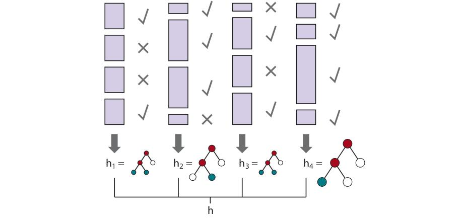
الگوریتمِ خاصی به نامِ ADABOOST در شکل ۱۹.۲۵ نشان داده شده. معمولاً با درختهای تصمیم بهعنوانِ فرضیههای مؤلفهای اعمال میشود؛ اغلب درختها از نظرِ اندازه محدود میشوند.
function ADABOOST(examples, L, K) returns a hypothesis
inputs: examples, a set of N labeled examples (x1,y1),...,(xN,yN)
L, the learning algorithm
K, the number of hypotheses in the ensemble
local variables: w, a vector of N example weights, initially all 1/N
h, a vector of K hypotheses
z, a vector of K hypothesis weights
ǫ ← a small positive number, to avoid division by zero
for k = 1 to K:
h[k] ← L(examples, w)
error ← 0
for j = 1 to N: // compute total error for h[k]
if h[k](xj) ≠ yj then error ← error + w[j]
if error > 1/2 then break
error ← min(error, 1 − ǫ)
for j = 1 to N: // give more weight to examples misclassified by h[k]
if h[k](xj) = yj then w[j] ← w[j] · error/(1 − error)
w ← NORMALIZE(w)
z[k] ← (1/2) log((1 − error)/error) // give more weight to accurate h[k]
return Function(x): ∑zi·hi(x)ADABOOST ویژگیِ بسیار مهمی دارد: اگر الگوریتمِ یادگیریِ ورودیِ L «الگوریتمِ یادگیریِ ضعیف» (Weak Learning Algorithm) باشد—بدان معنا که L همیشه فرضیهای با دقتِ روی مجموعهٔ آموزشیِ کمی بهتر از حدسِ تصادفی برمیگرداند (یعنی برای ردهبندیِ بولی ۵۰٪+ǫ)—آنگاه ADABOOST فرضیهای برمیگرداند که برای K بهاندازهٔ کافی بزرگ، دادهٔ آموزشی را کاملاً ردهبندی میکند. بدینترتیب، الگوریتم دقتِ الگوریتمِ یادگیریِ اصلی را روی دادهٔ آموزشی «تقویت» میکند. به بیانِ دیگر، تقویت میتواند بر هر میزانِ اریبی در مدلِ پایه غلبه کند، تا زمانی که مدلِ پایه ǫ بهتر از حدسِ تصادفی باشد. (در شبهکدِ ما، اگر فرضیهای بدتر از تصادفی بگیریم تولیدِ فرضیه را متوقف میکنیم.) این نتیجه مهم نیست فضایِ فرضیهٔ اصلی چقدر نابیان باشد و مهم نیست تابعِ درحالِیادگیری چقدر پیچیده باشد. فرمولهای دقیقِ وزنها در شکل ۱۹.۲۵ (با error/(1−error) و مانندِ آن) طوری انتخاب شدهاند که اثباتِ این ویژگی آسان باشد (فرند و شاپایر، 1996 را ببینید). البته، این ویژگی دقت روی مثالهای قبلاً دیدهنشده را تضمین نمیکند.
ببینیم تقویت روی دادهٔ رستوران چقدر خوب عمل میکند. بهعنوانِ فضایِ فرضیهٔ اصلیمان ردهٔ «کندههای تصمیم» (Decision Stumps) را انتخاب میکنیم، که درختهای تصمیم با فقط یک آزمون، در ریشهاند. منحنیِ پایینی در شکل ۱۹.۲۶(الف) نشان میدهد کندههای تصمیمِ تقویتنشده برای این مجموعهٔ داده چندان مؤثر نیستند، و روی ۱۰۰ مثال آموزشی به عملکردِ پیشبینیِ فقط ۸۱٪ میرسند. وقتی تقویت اعمال میشود (با K = 5)، عملکرد بهتر است و پس از ۱۰۰ مثال به ۹۳٪ میرسد. اتفاقِ جالبی با افزایشِ اندازهٔ گروهِ K میافتد. شکل ۱۹.۲۶(ب) عملکردِ مجموعهٔ آموزشی (روی ۱۰۰ مثال) را بهعنوانِ تابعی از K نشان میدهد. توجه کنید خطا وقتی K برابر 20 است به صفر میرسد؛ یعنی ترکیبِ وزندار-اکثریتیِ ۲۰ کندهٔ تصمیم برای برازشِ دقیقِ ۱۰۰ مثال کافی است—این نقطهٔ درونیابی است. با افزودنِ کندههای بیشتر به گروه، خطا در صفر میماند. نمودار همچنین نشان میدهد عملکردِ مجموعهٔ آزمون مدتها پس از رسیدنِ خطایِ مجموعهٔ آموزشی به صفر همچنان افزایش مییابد. در K = 20، عملکردِ آزمون 0.95 است (یا خطای 0.05)، و عملکرد تا دیرترِ K = 137 به 0.98 افزایش مییابد، قبل از اینکه بهتدریج به 0.95 افت کند.
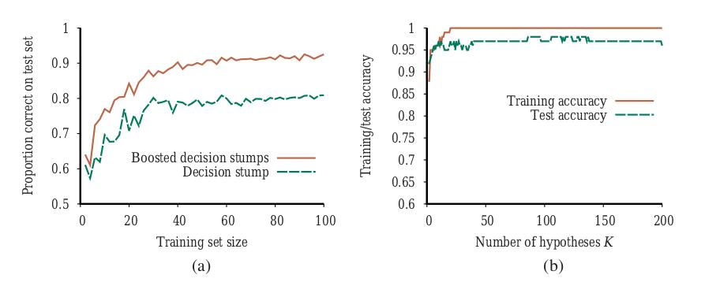
این یافته، که در میانِ مجموعههای داده و فضاهای فرضیه کاملاً استوار است، وقتی نخستین بار مشاهده شد کاملاً غافلگیرکننده بود. تیغِ آوکام به ما میگوید فرضیهها را پیچیدهتر از لازم نسازیم، اما نمودار به ما میگوید پیشبینیها با پیچیدهترشدنِ فرضیهٔ گروهی بهبود مییابند! تبیینهای گوناگونی برای این پیشنهاد شده. یکی از دیدگاهها این است که تقویت یادگیریِ بیزی را تقریب میزند (فصل 20 را ببینید)، که میتوان نشان داد الگوریتمِ یادگیریِ بهینهای است، و تقریب با افزودنِ فرضیههای بیشتر بهبود مییابد. تبیینِ ممکنِ دیگر این است که افزودنِ فرضیههای بیشتر گروه را در تمایزش بینِ مثالهای مثبت و منفی مطمئنتر میکند، که هنگامِ ردهبندیِ مثالهای تازه کمکش میکند.
برای رگرسیون و ردهبندیِ دادهٔ جدولیِ عاملی، «تقویتِ گرادیان» (Gradient Boosting)، که گاهی «ماشینهای تقویتِ گرادیان» (GBM) یا «درختهای رگرسیونِ تقویتشده با گرادیان» (GBRT) نامیده میشود، روشِ بسیار محبوبی شده. چنانکه نام دلالت دارد، تقویتِ گرادیان شکلی از تقویت با استفاده از نزولِ گرادیان است. به یاد آورید در ADABOOST، با فرضیهٔ تکیِ h1 شروع میکنیم و آن را با توالیِ فرضیههایی تقویت میکنیم که توجهِ خاصی به مثالهایی دارند که فرضیههای قبلی اشتباه گرفتند. در تقویتِ گرادیان نیز فرضیههای تقویتِ تازه میافزاییم، که توجه میکنند نه به مثالهای خاص، بلکه به گرادیانِ بینِ پاسخهای درست و پاسخهای دادهشده توسط فرضیههای قبلی.
مانندِ سایر الگوریتمهایی که از نزولِ گرادیان استفاده کردند، با تابعِ زیانِ مشتقپذیری شروع میکنیم؛ ممکن است برای رگرسیون از خطایِ مربع، یا برای ردهبندی از زیانِ لگاریتمی استفاده کنیم. مانندِ ADABOOST، سپس درختِ تصمیم میسازیم. در بخش ۱۹.۶.۲، از نزولِ گرادیان برای کمینهکردنِ پارامترهای مدل استفاده کردیم—زیان را محاسبه میکنیم و پارامترها را در جهتِ زیانِ کمتر بهروزرسانی میکنیم. با تقویتِ گرادیان، پارامترهای مدلِ موجود را بهروزرسانی نمیکنیم، بلکه پارامترهای درختِ بعدی را بهروزرسانی میکنیم—اما باید این کار را بهگونهای کنیم که زیان را با حرکت در جهتِ درست در امتدادِ گرادیان کاهش دهد.
مانندِ مدلهایی که در بخش ۱۹.۴.۳ دیدیم، منظمسازی میتواند به جلوگیری از بیشبرازش کمک کند. آن میتواند به شکلِ محدودکردنِ شمارِ درختها یا اندازهشان (بر حسبِ عمق یا شمارِ گرههایشان) باشد. میتواند از نرخِ یادگیریِ α بیاید، که میگوید چقدر در جهتِ گرادیان حرکت کنیم؛ مقادیرِ در بازهٔ 0.1 تا 0.3 رایجاند، و هرچه نرخِ یادگیری کوچکتر باشد، درختهای بیشتری در گروه نیاز خواهیم داشت.
تقویتِ گرادیان در بستهٔ محبوبِ XGBOOST (تقویتِ گرادیانِ افراطی) پیادهسازی شده، که بهطورِ منظم برای کاربردهای بزرگمقیاس و تیمهای برنده در مسابقاتِ علومِ داده استفاده میشود. نسخههای بعدی مانندِ LightGBM و CatBoost نیز محبوبیت یافتهاند.
تاکنون، همهٔ آنچه در این فصل انجام دادهایم بر این فرض تکیه داشته که دادهها i.i.d. (مستقل و همتوزیع) هستند. از یک طرف، فرضِ حساسی است: اگر آینده هیچ شباهتی به گذشته نداشته باشد، پس چگونه میتوانیم چیزی را پیشبینی کنیم؟ از طرف دیگر، فرضِ بیشازحدِ قویای است: میدانیم همبستگیهایی بینِ گذشته و آینده هست، و در سناریوهای پیچیده بعید است همهٔ دادهای را در بر بگیریم که آینده را با توجه به داده مستقل از گذشته کند.
در این بخش بررسی میکنیم وقتی داده i.i.d. نیست—وقتی میتواند در طولِ زمان تغییر کند—چه کنیم. در این صورت، زمانِ پیشبینی اهمیت دارد، پس دیدگاهی به نامِ «یادگیریِ برخط» (Online Learning) اتخاذ میکنیم: عاملی ورودیِ xj را از طبیعت دریافت میکند، yjِ متناظر را پیشبینی میکند، و سپس پاسخِ درست به او گفته میشود. سپس فرایند با xj+1 تکرار میشود، و همینطور. ممکن است فکر کنید این تکلیف ناامیدکننده است—اگر طبیعت دشمن باشد، همهٔ پیشبینیها ممکن است غلط باشند. معلوم میشود تضمینهایی میتوانیم بکنیم.
وضعیتی را در نظر بگیریم که ورودیِ ما از پیشبینیهای «هیئتی از کارشناسان» تشکیل شده. برای نمونه، هر کارشناسِ مالی ممکن است پیشبینی کند سهامِ بازار بالا یا پایین میرود، و تکلیفِ ما تجمیعِ آن پیشبینیها و پیشبینیِ خودمان است. یکی از راههای انجامِ این، پیگیریِ عملکردِ هر کارشناس و انتخابِ باور به آنها به نسبتِ عملکردِ گذشتهشان است. این «الگوریتمِ اکثریتِ وزندارِ تصادفی» (Randomized Weighted Majority Algorithm) نامیده میشود. میتوانیم آن را صوریتر توصیف کنیم:
مجموعهای از وزنها {w1,...,wK} را همه 1 مقداردهی کن.
برای هر مسئلهای که باید حل شود:
1. پیشبینیهای {ŷ1,...,ŷK} را از کارشناسان دریافت کن.
2. کارشناسِ k* را بهصورتِ تصادفی به نسبتِ وزنش انتخاب کن: P(k) = wk.
3. ŷk* را بهعنوانِ پاسخِ این مسئله ارائه کن.
4. پاسخِ درستِ y را دریافت کن.
5. برای هر کارشناسِ k که ŷk ≠ y، wk ← β·wk بهروزرسانی کن.
6. وزنها را نرمال کن تا ∑k wk = 1.در اینجا β عددی است، 0 < β < 1، که میگوید برای هر اشتباه چقدر کارشناس را جریمه کنیم.
موفقیتِ این الگوریتم را بر حسبِ «پشیمانی» (Regret) اندازه میگیریم، که بهعنوانِ شمارِ اشتباهاتِ اضافیای که در مقایسه با کارشناسی که، در نگاهِ گذشته، بهترین سابقهٔ پیشبینی را داشت، میکنیم تعریف میشود. M* شمارِ اشتباهاتِ بهترین کارشناس باشد. سپس شمارِ اشتباهات، M، توسط الگوریتمِ اکثریتِ وزندارِ تصادفی با:
M < (M* ln(1/β) + ln K) / (1 − β)کراندار میشود. این کران برای هر توالیِ مثالی، حتی توالیهای انتخابشده توسط دشمنانی که میخواهند بدترین کار را بکنند، برقرار است. بهطورِ خاص، وقتی K = 10 کارشناس هست، اگر β = 1/2 انتخاب کنیم، شمارِ اشتباهاتمان با 1.39M* + 4.6 کراندار میشود، و اگر β = 3/4 با 1.15M* + 9.2. بهطورِ کلی، اگر β نزدیکِ 1 باشد، در درازمدت به تغییر پاسخگو هستیم؛ اگر بهترین کارشناس تغییر کند، خیلی زود متوجهش میشویم. با این حال، در آغاز جریمه میپردازیم، وقتی با همهٔ کارشناسان بهیکسان اعتماد شده شروع میکنیم؛ ممکن است مدتِ زیادی توصیهٔ کارشناسانِ بد را بپذیریم. وقتی β نزدیکتر به 0 است، این دو عامل برعکس میشوند. توجه کنید میتوانیم β را طوری انتخاب کنیم که M در درازمدت مجانباً به M* نزدیک شود؛ این «یادگیریِ بدون-پشیمانی» (No-Regret Learning) نامیده میشود (زیرا میانگینِ میزانِ پشیمانی در هر آزمایش با افزایشِ شمارِ آزمایشها به 0 میگراید).
یادگیریِ برخط وقتی داده ممکن است بهسرعت در طولِ زمان تغییر کند مفید است. همچنین برای کاربردهایی مفید است که مجموعهٔ دادهٔ بزرگِ دائماً در حالِ رشد دارند، حتی اگر تغییرها تدریجی باشند. برای نمونه، با مجموعهای از میلیونها تصویرِ وب، نمیخواهید هر بار که تصویرِ تکی افزوده میشود از صفر بازآموزی کنید. عملیتر خواهد بود الگوریتمِ برخطی داشته باشید که به تصاویر اجازه میدهد بهصورتِ افزایشی افزوده شوند. برای بیشترِ الگوریتمهای یادگیریِ مبتنی بر کمینهکردنِ زیان، نسخهٔ برخطی مبتنی بر کمینهکردنِ پشیمانی هست. بسیاری از این الگوریتمهای برخط با کرانهای تضمینیِ پشیمانی میآیند.
ممکن است شگفتآور به نظر برسد کرانهای چنان دقیقی بر اینکه در مقایسه با هیئتی از کارشناسان چقدر خوب عمل میکنیم هست. حتی شگفتآورتر این است که وقتی چنین هیئتهایی برای پیشگویی دربارهٔ رقابتهای سیاسی یا رویدادهای ورزشی گرد هم میآیند، مردمِ بیننده اینقدر مایلاند به پیشبینیهایشان گوش دهند و اینقدر بیعلاقهاند به دانستنِ نرخهای خطایشان.
در این فصل بر توضیحِ نظریهٔ یادگیریِ ماشینی تمرکز کردهایم. عملِ استفاده از یادگیریِ ماشینی برای حلِ مسائلِ عملی رشتهای جداگانه است. در ۵۰ سالِ گذشته، صنعتِ نرمافزار روششناسیِ توسعهٔ نرمافزاری را تکامل داده که محتملتر میکند پروژهٔ نرمافزاریِ (سنتی) موفق باشد. اما ما هنوز در مراحلِ آغازینِ تعریفِ روششناسی برای پروژههای یادگیریِ ماشینی هستیم؛ ابزارها و فنون بهخوبی توسعه نیافتهاند. در اینجا تفکیکی از گامهای نمونهای در فرایند است.
گامِ نخست فهمیدنِ این است که میخواهید چه مسئلهای را حل کنید. دو بخش دارد. نخست بپرس، «میخواهم چه مسئلهای را برای کاربرانم حل کنم؟» پاسخی مانندِ «آسانترکردنِ سازماندهی و دسترسیِ کاربران به عکسهایشان» بسیار مبهم است؛ «کمک به کاربر برای یافتنِ همهٔ عکسهایی که با عبارتِ خاصی، مانندِ پاریس، مطابقت دارند» بهتر است. سپس بپرس، «کدام بخش(های) مسئله را میتوان با یادگیریِ ماشینی حل کرد؟» شاید به «یادگیریِ تابعی که عکسی را به مجموعهای از برچسبها نگاشت میکند؛ سپس، وقتی برچسبی بهعنوانِ پرسوجو داده میشود، همهٔ عکسهای با آن برچسب را بازیابی کن» بسنده کنی.¹⁶
برای عینیکردنِ این، باید تابعِ زیانی برای مؤلفهٔ یادگیریِ ماشینیات مشخص کنی، شاید اندازهگیریِ دقتِ سامانه در پیشبینیِ برچسبِ درست. این هدف باید با هدفهای واقعیات همبسته باشد، اما معمولاً متمایز خواهد بود—هدفِ واقعی ممکن است بیشینهکردنِ شمارِ کاربرانی باشد که جذب و در سامانهات نگه میداری، و درآمدی که تولید میکنند. اینها معیارهاییاند که باید پیگیری کنی، اما نه لزوماً معیارهایی که میتوانی مستقیماً مدلِ یادگیریِ ماشینی برایشان بسازی.
وقتی مسئلهات را به بخشها تجزیه کردی، ممکن است بیابی مؤلفههای متعددی هست که میتوان با مهندسیِ نرمافزارِ قدیمی، نه یادگیریِ ماشینی، مدیریت کرد. برای نمونه، برای کاربری که «بهترین عکسها» میخواهد، میتوانی رویهٔ سادهای پیادهسازی کنی که عکسها را بر اساسِ شمارِ لایکها و بازدیدها مرتب میکند. وقتی سامانهٔ کلیات را تا نقطهای توسعه دادی که قابلِاجرا باشد، میتوانی برگردی و بهینه کنی، مؤلفههای ساده را با مدلهای یادگیریِ ماشینیِ پیچیدهتر جایگزین کنی.
بخشی از صورتبندیِ مسئله تصمیمگیری دربارهٔ اینکه با یادگیریِ نظارتشده، نظارتنشده یا تقویتی سروکار داری است. تمایزها همیشه چندان شفاف نیستند. در «یادگیریِ نیمهنظارتشده» (Semisupervised Learning) چند مثالِ برچسبدار به ما داده میشود و از آنها برای استخراجِ اطلاعاتِ بیشتر از مجموعهٔ بزرگی از مثالهای بدونِ برچسب استفاده میکنیم. این رویکردِ رایجی شده، با شرکتهایی که ظهور کردهاند و مأموریتشان برچسبزدنِ سریعِ برخی مثالهاست، تا به سامانههای یادگیریِ ماشینی کمک کنند از مثالهای بدونِ برچسبِ باقیمانده استفادهٔ بهتری کنند.
گاهی انتخابِ اینکه کدام رویکرد را استفاده کنی داری. سامانهای برای توصیهٔ آهنگ یا فیلم به مشتریان را در نظر بگیر. میتوانیم به آن بهعنوانِ مسئلهٔ یادگیریِ نظارتشده نزدیک شویم، که در آن ورودیها شاملِ بازنماییِ مشتریاند و خروجیِ برچسبدار این است که آیا آنها توصیه را دوست داشتند یا نه، یا میتوانیم به آن بهعنوانِ مسئلهٔ یادگیریِ تقویتی نزدیک شویم، که در آن سامانه توالیِ کنشهای توصیه میکند و گاهی از مشتری برای پیشنهادِ خوب پاداش میگیرد.
خودِ برچسبها ممکن است حقایقِ وحیگونهای که امیدواریم نباشند. تصور کن میخواهی سامانهای بسازی که سنِ فردی را از عکسی حدس میزند. با آپلودکردنِ عکسها و بیانِ سنشان توسط مردم، مثالهای برچسبداری جمع میکنی. آن یادگیریِ نظارتشده است. اما در واقعیت برخی از مردم دربارهٔ سنشان دروغ گفتند. فقط این نیست که نویزِ تصادفی در داده هست؛ بلکه نادقتیها نظاممندند، و برملاکردنشان مسئلهٔ یادگیریِ نظارتنشدهای شاملِ تصاویر، سنهای خودگزارششده و سنهای واقعیِ (ناشناخته) است. بدینترتیب، هم نویز و هم فقدانِ برچسب پیوستاری بینِ یادگیریِ نظارتشده و نظارتنشده ایجاد میکنند. حوزهٔ «یادگیریِ ضعیفنظارتشده» (Weakly Supervised Learning) بر استفاده از برچسبهایی تمرکز دارد که نویزی، نادقیق یا توسط غیرمتخصصان عرضه شدهاند.
هر پروژهٔ یادگیریِ ماشینی به داده نیاز دارد؛ در موردِ پروژهٔ شناساییِ عکسِ ما مجموعههای دادهٔ تصویریِ آزادانهای در دسترساند، مانندِ ImageNet، که بیش از ۱۴ میلیون عکس با حدود ۲۰٬۰۰۰ برچسبِ متفاوت دارد. گاهی ممکن است مجبور باشیم دادههای خودمان را تولید کنیم، که میتوان با کارِ خودمان، یا با «برونسپاریِ جمعی» (Crowdsourcing) به کارگرانِ حقوقبگیر یا داوطلبانِ بدونِ حقوق که از طریقِ سرویسِ اینترنتی عمل میکنند، انجام شود. گاهی داده از کاربرانت میآید. برای نمونه، سرویسِ ناوبریِ ویز کاربران را تشویق میکند دادههایی دربارهٔ ترافیکِ سنگین آپلود کنند، و از آن برای ارائهٔ مسیرهای بهروزِ ناوبری به همهٔ کاربران استفاده میکند. «یادگیریِ انتقالی» (بخش ۲۱.۷.۲ را ببینید) وقتی دادهٔ کافیِ خودت نداری استفاده میشود: با مجموعهٔ دادهٔ همهمنظورهٔ عمومیِ در دسترسِ عموم شروع کن (یا مدلی که از پیش روی این داده آموزش دیده)، و سپس دادهٔ خاصِ کاربرانت را بیفزا و بازآموزی کن.
اگر سامانهای را برای کاربران مستقر کنی، کاربرانت بازخورد خواهند داد—شاید با کلیککردن روی یک قلم و نادیدهگرفتنِ بقیه. به استراتژی برای سروکارداشتن با این داده نیاز خواهی داشت. آن شاملِ بازبینی با کارشناسانِ حریمِ خصوصی است (بخش ۲۷.۳.۲ را ببینید) تا مطمئن شوی اجازهٔ مناسب برای دادهای که جمع میکنی میگیری، و فرایندهایی برای تضمینِ یکپارچگیِ دادهٔ کاربر و فهمِ آنها از آنچه با آن خواهی کرد داری. همچنین باید مطمئن شوی فرایندهایت منصفانه و بدونِ سوگیریاند (بخش ۲۷.۳.۳ را ببینید). اگر دادهای هست که احساس میکنی برای جمعآوری بیشازحدِ حساس است اما برای مدلِ یادگیریِ ماشینی مفید میبود، رویکردِ «یادگیریِ فدرال» (Federated Learning) را در نظر بگیر، که در آن داده روی دستگاهِ کاربر میماند، اما پارامترهای مدل بهگونهای به اشتراک گذاشته میشوند که دادهٔ خصوصی را فاش نمیکند.
تمرینِ خوب این است که برای همهٔ دادههایت «اصلونسبِ داده» (Data Provenance) نگه داری. برای هر ستونِ مجموعهٔ دادهات، باید تعریفِ دقیق، محلِ آمدنِ داده، مقادیرِ ممکن و کسانی که رویش کار کردهاند را بدانی. آیا دورههایی بوده که فیدِ داده قطع شده؟ آیا تعریفِ برخی منبعِ داده در طولِ زمان تکامل یافته؟ برای مقایسهٔ نتایج در دورههای زمانی باید این را بدانی. این بهطورِ خاص درست است اگر به دادهای تکیه میکنی که توسط شخصِ دیگری تولید شده—نیازهای آنها و نیازهای تو ممکن است واگرا شوند، و ممکن است در نهایت شیوهٔ تولیدِ داده را تغییر دهند، یا کلاً بهروزرسانیاش را متوقف کنند. باید فیدهای دادهات را برای گرفتنِ این پایش کنی. داشتنِ خط لولهٔ دادهٔ قابلِاعتماد، انعطافپذیر و امن برای موفقیت حیاتیتر از جزئیاتِ دقیقِ الگوریتمِ یادگیریِ ماشینی است. اصلونسب همچنین به دلایلِ قانونی، مانندِ انطباق با قانونِ حریمِ خصوصی، مهم است.
برای هر تکلیفی پرسشهایی دربارهٔ داده خواهد بود: آیا این دادهٔ درست برای تکلیفِ من است؟ آیا بهاندازهٔ کافی از ورودیهای درست را در بر میگیرد تا شانسِ یادگیریِ مدلی را به ما بدهد؟ آیا خروجیهایی را که میخواهم پیشبینی کنم دارد؟ اگر نه، آیا میتوانم مدلِ نظارتنشده بسازم؟ یا میتوانم بخشی از داده را برچسب بزنم و سپس یادگیریِ نیمهنظارتشده انجام دهم؟ آیا دادهٔ مربوط است؟ عالی است ۱۴ میلیون عکس داشته باشیم، اما اگر همهٔ کاربرانت متخصصانیاند که به موضوعِ خاصی علاقهمندند، پایگاهِ دادهٔ عمومی کمکی نخواهد کرد—باید عکسهایی در موضوعِ خاص جمع کنی. چقدر دادهٔ آموزشی کافی است؟ (آیا باید دادهٔ بیشتری جمع کنم؟ آیا میتوانم برخی دادهها را برای سریعترکردنِ محاسبه دور بیندازم؟) بهترین راه برای پاسخدادن به این، استدلالِ با قیاس با پروژهٔ مشابهی با اندازهٔ مجموعهٔ آموزشیِ معلوم است. وقتی شروع کردی میتوانی منحنیِ یادگیری بکشی (شکل ۱۹.۷ را ببینید) تا ببینی دادهٔ بیشتر کمک خواهد کرد، یا یادگیری قبلاً به فلات رسیده.
قاعدههای سرانگشتیِ بیپایانِ موردی و بیتوجیهی برای شمارِ مثالهای آموزشیِ لازم هست: میلیونها برای مسائلِ دشوار؛ هزاران برای مسائلِ متوسط؛ صدها یا هزاران برای هر رده در مسئلهٔ ردهبندی؛ ۱۰ برابرِ بیشترِ مثال از پارامترهای مدل؛ ۱۰ برابرِ بیشترِ مثال از ویژگیهای ورودی؛ مثالهای O(d log d) برای d ویژگیِ ورودی؛ مثالهای بیشتر برای مدلهای غیرخطی تا خطی؛ مثالهای بیشتر اگر دقتِ بیشتر لازم است؛ مثالهای کمتر اگر منظمسازی استفاده میکنی؛ بهاندازهٔ کافی مثال برای رسیدن به قدرتِ آماریِ لازم برای ردِ فرضیهٔ صفر در ردهبندی. همهٔ این قاعدهها ملاحظاتی دارند—همانگونه که قاعدهٔ عاقلانهای که پیشنهاد میکند آنچه در گذشته برای مسائلِ مشابه کار کرده امتحان کن.
باید دربارهٔ دادهات دفاعی فکر کنی. آیا ممکن است خطاهای ورودِ داده باشد؟ با فیلدهای دادهٔ مفقود چه میتوان کرد؟ اگر داده را از مشتریانت (یا افرادِ دیگر) جمع میکنی، آیا ممکن است برخی از مردم دشمنانی باشند که میخواهند سامانه را گول بزنند؟ آیا خطاهای املایی یا اصطلاحشناسیِ ناسازگار در دادهٔ متنی هست؟ (برای نمونه، آیا «Apple»، «AAPL» و «Apple Inc.» همه به همان شرکت اشاره دارند؟) به فرایندی برای گرفتن و تصحیحِ همهٔ این منابعِ بالقوهٔ خطای داده نیاز خواهی داشت.
ابزارِ تجسمِ مفیدی برای دادهٔ پربعد «t-SNE» (جاسازیِ تصادفیِ همسایهٔ توزیع-تی) است، که نقاطِ پربعد را به نقشهای در دو بُعد (یا گاهی سه بُعد، که سپس میتوان بهصورتِ تعاملی کاوش کرد) فرو میکشد.¹⁷
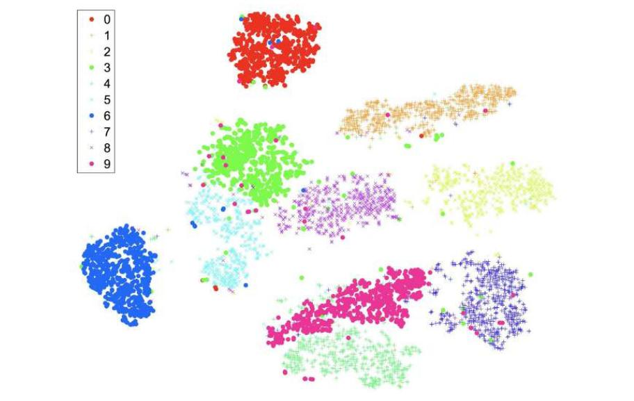
وقتی داده محدود است، «افزایشِ داده» (Data Augmentation) میتواند کمک کند. برای نمونه، با مجموعهٔ دادهای از تصاویر، میتوانی چند نسخه از هر تصویر با چرخاندن، انتقال، برش یا مقیاسکردنِ هر تصویر، یا با تغییرِ روشنایی یا توازنِ رنگ یا افزودنِ نویز ایجاد کنی. تا زمانی که اینها تغییرهای کوچکیاند، برچسبِ تصویر باید همان بماند، و مدلی که روی چنین دادهٔ افزودهشدهای آموزش دیده مقاومتر خواهد بود.
گاهی داده فراوان است اما در «ردههای نامتوازن» (Unbalanced Classes) ردهبندی میشود. برای نمونه، مجموعهٔ آموزشیِ تراکنشهای کارتِ اعتباری ممکن است شاملِ ۱۰٬۰۰۰٬۰۰۰ تراکنشِ معتبر و ۱٬۰۰۰ کلاهبرداری باشد. ردهبندی که صرفنظر از ورودی «معتبر» بگوید به دقتِ 99.99٪ روی این مجموعهٔ داده میرسد. برای فراتررفتن از آن، ردهبند باید به مثالهای کلاهبرداری توجهِ بیشتری کند. برای کمک به آن، میتوانی «کمنمونهبرداریِ» (Undersampling) ردهٔ اکثریت کنی (یعنی برخی از مثالهای ردهٔ «معتبر» را نادیده بگیری) یا «بیشنمونهبرداریِ» (Oversampling) ردهٔ اقلیت (یعنی برخی از مثالهای ردهٔ «کلاهبرداری» را تکرار کنی). میتوانی از تابعِ زیانِ وزنداری استفاده کنی که جریمهٔ بزرگتری برای ازدستدادنِ موردِ کلاهبرداری میدهد. تقویت همچنین میتواند به تمرکز بر ردهٔ اقلیت کمک کند. اگر از روشِ گروهی استفاده میکنی، میتوانی قاعدههای رأیدادنِ گروه را تغییر دهی و «کلاهبرداری» را بهعنوانِ پاسخ بدهی حتی اگر فقط اقلیتی از گروه به «کلاهبرداری» رأی دهند. میتوانی با تولیدِ دادهٔ مصنوعی با فنونِ مانندِ SMOTE (چاولا و همکاران، 2002) یا ADASYN (هه و همکاران، 2008) به متوازنکردنِ ردههای نامتوازن کمک کنی.
باید «دورافتادههای» (Outliers) دادهات را با دقت در نظر بگیری. دورافتاده نقطهٔ دادهای است که از سایر نقاط دور است. برای نمونه، در مسئلهٔ رستوران، اگر قیمت مقدارِ عددی بود نه رستهای، و اگر مثالی قیمتِ ۳۱۶ دلار داشت در حالی که بقیه ۳۰ دلار یا کمتر بودند، آن مثال دورافتاده میبود. روشهایی مانندِ رگرسیونِ خطی در برابرِ دورافتادهها آسیبپذیرند، زیرا باید مدلِ خطیِ سراسریِ تکی بسازند که همهٔ ورودیها را در نظر میگیرد—نمیتوانند با دورافتاده متفاوت از سایر نقاطِ مثال رفتار کنند، و بدینترتیب یک دورافتاده میتواند اثرِ بزرگی بر همهٔ پارامترهای مدل داشته باشد.
با ویژگیهایی مانندِ قیمت که اعدادِ مثبتاند، میتوانیم اثرِ دورافتادهها را با تبدیلِ داده کاهش دهیم، با گرفتنِ لگاریتمِ هر مقدار، پس ۲۰ دلار، ۲۵ دلار و ۳۱۶ دلار به 1.3، 1.4 و 2.5 تبدیل میشوند. این از دیدگاهِ عملی معنا دارد، زیرا مقدارِ بالا حالا تأثیرِ کمتری بر مدل دارد، و از دیدگاهِ نظری، زیرا چنانکه در بخش ۱۶.۳.۲ دیدیم، مطلوبیتِ پول لگاریتمی است.
روشهایی مانندِ درختهای تصمیم که از چند مدلِ محلی ساخته میشوند میتوانند با دورافتادهها بهصورتِ فردی رفتار کنند: مهم نیست بزرگترین مقدار ۳۰۰ دلار باشد یا ۳۱؛ به هر حال میتوان در گرهٔ محلیِ خودش پس از آزمونی به شکلِ cost ≤ 30 با آن رفتار کرد. این درختهای تصمیم (و بنابراین جنگلهای تصادفی و تقویتِ گرادیان) را در برابرِ دورافتادهها مقاومتر میکند.
مهندسیِ ویژگی. پس از تصحیحِ خطاهای آشکار، ممکن است بخواهی داده را برای آسانترشدنِ هضمِ آن پیشپردازش کنی. قبلاً فرایندِ «کوانتیزهکردن» (Quantization) را دیدهایم: واداشتنِ ورودیِ پیوستهمقدار، مانندِ زمانِ انتظار، به سطلهای ثابت (0–10 دقیقه، 10–30، 30–60 یا >60). دانشِ حوزه میتواند بگوید چه آستانههایی مهماند، مانندِ مقایسهٔ سن ≥ 18 هنگام مطالعهٔ الگوهای رأیگیری. همچنین دیدیم (صفحهٔ ۶۸۸) که الگوریتمهای نزدیکترین-همسایه وقتی داده نرمال شده تا انحرافِ معیارِ 1 داشته باشد بهتر عمل میکنند. با ویژگیهای رستهای مانندِ آفتابی/ابری/بارانی، اغلب مفید است داده را به سه ویژگیِ بولیِ جداگانه تبدیل کنیم، که دقیقاً یکی از آنها صادق است (این را «رمزگذاریِ یک-داغ» (One-Hot Encoding) مینامیم). این بهطورِ خاص وقتی مفید است که مدلِ یادگیریِ ماشینی شبکهٔ عصبی باشد.
همچنین میتوانی ویژگیهای تازهای بر اساسِ دانشِ حوزهات معرفی کنی. برای نمونه، با مجموعهٔ دادهای از خریدهای مشتری که هر درایه ویژگیِ تاریخ دارد، ممکن است بخواهی داده را با ویژگیهای تازهای تقویت کنی که میگویند آیا تاریخ آخرِ هفته یا تعطیل است. بهعنوانِ مثالِ دیگر، تکلیفِ برآوردِ ارزشِ واقعیِ خانههای برایفروش را در نظر بگیر. در شکل ۱۹.۱۳ نسخهٔ اسباببازیِ این مسئله را نشان دادیم، با رگرسیونِ خطیِ اندازهٔ خانه به قیمتِ درخواستی. اما واقعاً میخواهیم قیمتِ فروشِ خانه را برآورد کنیم، نه قیمتِ درخواستی را. برای حلِ این تکلیف به دادهای دربارهٔ فروشِ واقعی نیاز داریم. اما آن بدان معنا نیست باید دادهٔ قیمتِ درخواستی را دور بیندازیم—میتوانیم از آن بهعنوانِ یکی از ویژگیهای ورودی استفاده کنیم.
با دادهٔ پاکسازیشده و حسِ شهودی از آن، وقتِ ساختنِ مدل است. آن به معنای انتخابِ ردهٔ مدل (جنگلهای تصادفی؟ شبکههای عصبیِ عمیق؟ گروهی؟)، آموزشِ مدل با دادهٔ آموزشی، تنظیمِ هر ابرپارامترِ رده (شمارِ درختها؟ شمارِ لایهها؟) با دادهٔ اعتبارسنجی، رفعاشکالِ فرایند، و سرانجام ارزیابیِ مدل روی دادهٔ آزمون است. هیچ راهِ تضمینی برای انتخابِ بهترین ردهٔ مدل نیست، اما رهنمودهای تقریبی هست. جنگلهای تصادفی وقتی خوباند که ویژگیهای رستهایِ زیادی هست و باور داری بسیاری از آنها ممکن است نامربوط باشند. روشهای ناپارامتری وقتی خوباند که دادهٔ زیاد و دانشِ قبلی نداری، و وقتی نمیخواهی زیاد نگرانِ انتخابِ دقیقِ ویژگیها باشی (تا زمانی که کمتر از حدود ۲۰ تایند). با این حال، روشهای ناپارامتری معمولاً تابعِ h به تو میدهند که اجرایش گرانتر است.
رگرسیونِ لجستیک وقتی خوب عمل میکند که داده قابلِ جداسازیِ خطی است، یا با مهندسیِ ویژگیِ هوشمندانه میتواند چنین شود. ماشینهای بردارِ پشتیبان روشِ خوبی برای امتحان وقتی مجموعهٔ داده خیلی بزرگ نیست؛ آنها روی دادهٔ قابلِجداسازی شبیهِ رگرسیونِ لجستیک عمل میکنند و میتوانند برای دادهٔ پربعد بهتر باشند. مسائلِ مربوط به بازشناسیِ الگو، مانندِ پردازشِ تصویر یا گفتار، بیشتر با شبکههای عصبیِ عمیق (فصل ۲۱ را ببینید) بررسی میشوند. انتخابِ ابرپارامترها را میتوان با ترکیبی از تجربه—آنچه در مسائلِ مشابهِ گذشته خوب کار کرده انجام بده—و جستجو انجام داد: با چند مقدارِ ممکن برای ابرپارامترها آزمایش کن. با اجرایِ آزمایشهای بیشتر ایدههایی برای مدلهای متفاوت برای امتحان میگیری. با این حال، اگر عملکرد را روی دادهٔ اعتبارسنجی اندازه بگیری، ایدهای تازه بگیری و آزمایشهای بیشتری اجرا کنی، ریسکِ بیشبرازش روی دادهٔ اعتبارسنجی را میکنی. اگر دادهٔ کافی داشته باشی، ممکن است بخواهی چند مجموعهٔ اعتبارسنجیِ جداگانه داشته باشی تا از این مسئله اجتناب کنی. این بهطورِ خاص درست است اگر دادهٔ اعتبارسنجی را با چشم بازرسی میکنی، نه فقط ارزیابیهایی رویش اجرا میکنی.
فرض کن ردهبندی میسازی—برای نمونه، سامانهای برای ردهبندیِ ایمیلِ هرزنامه. برچسبزدنِ نامهٔ قانونی بهعنوانِ هرزنامه «مثبتِ کاذب» (False Positive) نامیده میشود. معاوضهای بینِ مثبتهای کاذب و منفیهای کاذب (برچسبزدنِ هرزنامه بهعنوانِ قانونی) خواهد بود؛ اگر بخواهی نامهٔ قانونیِ بیشتری از پوشهٔ هرزنامه دور نگه داری، لزوماً به ارسالِ هرزنامهٔ بیشتر به صندوقِ ورودی میانجامی. اما بهترین راهِ معاوضه چیست؟ میتوانی مقادیرِ متفاوتی از ابرپارامترها را امتحان کنی و نرخهای متفاوتی برای دو نوع خطا بگیری—نقاطِ متفاوتی روی این معاوضه. نموداری به نامِ «منحنیِ مشخصهٔ عملکردِ گیرنده» (Receiver Operating Characteristic یا ROC) مثبتهای کاذب را در برابرِ مثبتهای واقعی برای هر مقدارِ ابرپارامتر رسم میکند و به تجسمِ مقادیری که انتخابهای خوبی برای معاوضهاند کمک میکند. معیاری به نامِ «مساحت زیر منحنیِ ROC» یا AUC خلاصهٔ تکعددی از منحنیِ ROC فراهم میکند، که اگر بخواهی سامانهای مستقر کنی و به هر کاربر اجازه دهی نقطهٔ معاوضهاش را انتخاب کند مفید است.
ابزارِ تجسمِ مفیدِ دیگر برای مسائلِ ردهبندی «ماتریسِ سردرگمی» (Confusion Matrix) است: جدولِ دوبعدی از شمارشِ اینکه هر رده چند بار بهعنوانِ هر ردهٔ دیگر ردهبندی یا اشتباهردهبندی شده. معاوضههایی در عواملِ غیر از تابعِ زیان نیز میتواند باشد. اگر بتوانی مدلِ پیشبینیِ سهام آموزش بدهی که در هر معامله ۱۰ دلار برایت درآورد، عالی است—اما نه اگر در هر پیشبینی ۲۰ دلار هزینهٔ محاسبه بدهد. برنامهٔ ترجمهٔ ماشینی که روی گوشیات اجرا میشود و به تو اجازه میدهد تابلوها را در شهرِ خارجی بخوانی مفید است—اما نه اگر بعد از یک ساعت استفاده باتری را خالی کند. همهٔ عواملی که به پذیرش یا ردِ سامانهات میانجامند را پیگیری کن، و فرایندی طراحی کن که بتوانی بهسرعت چرخهٔ گرفتنِ ایدهٔ تازه، اجرایِ آزمایش و ارزیابیِ نتایجِ آزمایش برای دیدنِ اینکه پیشرفت کردهای را تکرار کنی. سریعکردنِ این چرخهٔ تکرار یکی از مهمترین عواملِ موفقیت در یادگیریِ ماشینی است.
روششناسیِ یادگیریِ ماشینی را توصیف کردهایم که در آن مدلت را با دادهٔ آموزشی توسعه میدهی، ابرپارامترها را با دادهٔ اعتبارسنجی انتخاب میکنی، و معیارِ نهایی را با دادهٔ آزمون میگیری. خوبعملآمدنِ روی آن معیار شرطِ لازم اما نه کافی برای اعتمادکردنِ تو به مدلِت است. و فقط تو نیستی—ذینفعانِ دیگر از جملهِ نهادهای نظارتی، قانونگذاران، مطبوعات و کاربرانت نیز به قابلاعتمادبودنِ سامانهات علاقهمندند (و نیز به ویژگیهای مرتبط مانندِ قابلیتِ اطمینان، پاسخگویی و ایمنی).
سامانهٔ یادگیریِ ماشینی همچنان قطعهای نرمافزار است، و میتوانی با همهٔ ابزارهای نمونهٔ تأیید و اعتبارسنجیِ هر سامانهٔ نرمافزاری اعتماد بسازی:
علاوه بر این، عواملی هست که بهطورِ خاص برای سامانههای یادگیریِ ماشینی مهماند، چنانکه در زیر تفصیل میدهیم.
تفسیرپذیری (Interpretability): میگوییم مدلِ یادگیریِ ماشینی تفسیرپذیر است اگر بتوانی خودِ مدلِ واقعی را بازرسی کنی و بفهمی چرا برای ورودیِ معین پاسخِ خاصی گرفت، و پاسخ با تغییرِ ورودی چگونه تغییر میکرد.¹⁸ مدلهای درختِ تصمیم بسیار تفسیرپذیر دانسته میشوند؛ میتوانیم بفهمیم پیروی از مسیرِ Patrons=Full و WaitEstimate=0–10 در درختِ تصمیم به تصمیمِ انتظار میانجامد. درختِ تصمیم به دو دلیل تفسیرپذیر است. نخست، ما انسانها در فهمِ قاعدههای IF/THEN تجربه داریم. (در مقابل، برای انسانها بسیار دشوار است درکِ شهودیِ نتیجهٔ ضربِ ماتریسی که با تابعِ فعالسازی دنبال میشود، چنانکه در برخی مدلهای شبکهٔ عصبی انجام میشود، بگیرند.) دوم، درختِ تصمیم از جهتی برای تفسیرپذیربودن ساخته شده—ریشهٔ درخت بهعنوانِ ویژگیِ با بالاترین بهرهٔ اطلاعاتی انتخاب شد.
مدلهای رگرسیونِ خطی نیز تفسیرپذیر دانسته میشوند؛ میتوانیم مدلی را برای پیشبینیِ اجارهٔ آپارتمان بررسی کنیم و ببینیم برای هر اتاق خوابِ افزودهشده، اجاره ۵۰۰ دلار افزایش مییابد، طبقِ مدل. این ایدهٔ «اگر x را تغییر دهم، خروجی چگونه تغییر خواهد کرد؟» در هستهٔ تفسیرپذیری است. البته، همبستگی علیت نیست، پس مدلهای تفسیرپذیر پاسخ میدهند چه چیزی هست، اما نه لزوماً چرا هست.
تبیینپذیری (Explainability): مدلِ تبیینپذیر مدلی است که میتواند به تو کمک کند بفهمی «چرا این خروجی برای این ورودی تولید شد؟» در اصطلاحشناسیِ ما، تفسیرپذیری از بازرسیِ مدلِ واقعی ناشی میشود، در حالی که تبیینپذیری را میتواند فرایندِ جداگانهای فراهم کند. یعنی، خودِ مدل میتواند جعبهٔ سیاهِ دشوارِ فهمی باشد، اما ماژولِ تبیین میتواند خلاصه کند مدل چه میکند. برای سامانهٔ بازشناسیِ تصویرِ شبکهٔ عصبی که تصویری را بهعنوانِ سگ ردهبندی میکند، اگر بخواهیم مدل را مستقیماً تفسیر کنیم، بهترین چیزی که میتوانستیم با خود ببریم چیزی مانندِ «پس از پردازشِ لایههای پیچشی، فعالسازیِ خروجیِ سگ در لایهٔ سافتمکس از هر ردهٔ دیگر بالاتر بود» است. آن استدلالِ چندان قانعکنندهای نیست. اما ماژولِ تبیینِ جداگانهای ممکن است بتواند مدلِ شبکهٔ عصبی را بررسی کند و به تبیینِ «چهار پا، خز، دم، گوشهای آویزان و پوزهٔ بلند دارد؛ کوچکتر از گرگ است، و روی تختِ سگ خوابیده، پس فکر میکنم سگ است» برسد. تبیینها یکی از راههای ساختنِ اعتمادند، و برخی مقررات مانندِ GDPR اروپا (مقرراتِ عمومیِ حفاظت از داده) سامانهها را ملزم به ارائهٔ تبیین میکنند.
بهعنوانِ نمونهای از ماژولِ تبیینِ جداگانه، سامانهٔ «تبیینهای محلیِ تفسیرپذیرِ مستقل از مدل» (LIME) چنین کار میکند: مهم نیست از کدام ردهٔ مدل استفاده میکنی، LIME مدلِ تفسیرپذیری میسازد—اغلب درختِ تصمیم یا مدلِ خطی—که تقریبی از مدلِ توست، و سپس مدلِ خطی را تفسیر میکند تا تبیینهایی بسازد که میگویند هر ویژگی چقدر مهم است. LIME این کار را با رفتارِ مدلِ یادگیریِ ماشینی بهعنوانِ جعبهٔ سیاه و کاوشِ آن با مقادیرِ ورودیِ تصادفیِ مختلف برای ایجادِ مجموعهٔ دادهای که مدلِ تفسیرپذیر از آن ساخته میشود انجام میدهد. این رویکرد برای دادهٔ ساختیافته مناسب است، اما نه برای چیزهایی مانندِ تصاویر، جایی که هر پیکسل ویژگی است و هیچ پیکسلِ تکی بهتنهایی «مهم» نیست.
گاهی ردهٔ مدلی را به دلیلِ تبیینپذیریاش انتخاب میکنیم—ممکن است درختهای تصمیم را بر شبکههای عصبی ترجیح دهیم، نه به این دلیل که دقتِ بالاتری دارند، بلکه به این دلیل که تبیینپذیری اعتمادِ بیشتری به آنها به ما میدهد. با این حال، تبیینِ ساده میتواند به حسِ امنیتِ کاذب بینجامد. بالاخره، معمولاً مدلِ یادگیریِ ماشینی را انتخاب میکنیم (بهجای برنامهٔ سنتیِ دستنوشته) زیرا مسئلهای که میخواهیم حل کنیم ذاتاً پیچیده است و نمیدانیم چگونه برنامهٔ سنتی بنویسیم. در آن صورت، نباید انتظار داشته باشیم لزوماً تبیینِ سادهای برای هر پیشبینی باشد.
اگر مدلِ یادگیریِ ماشینی را عمدتاً برای هدفِ فهمِ حوزه میسازی، تفسیرپذیری و تبیینپذیری به تو در رسیدن به آن فهم کمک خواهند کرد. اما اگر فقط بهترین قطعهٔ نرمافزارِ عملکننده را میخواهی، آزمون ممکن است اعتمادِ بیشتری از تبیینها به تو بدهد. به کدام اعتماد میکنی: هواپیمای آزمایشی که هرگز پرواز نکرده اما تبیینِ مفصلی از اینکه چرا امن است دارد، یا هواپیمایی که با موفقیت ۱۰۰ پروازِ قبلی را کامل کرده و با دقت نگهداری شده، اما با تبیینِ تضمینی نمیآید؟
وقتی از عملکردِ مدلت راضی شدی، میتوانی آن را برای کاربرانت مستقر کنی. با چالشهای اضافی روبهرو خواهی شد. نخست، مسئلهٔ «دمِ بلندِ» (Long Tail) ورودیهای کاربر است. ممکن است سامانهات را روی مجموعهٔ آزمونِ بزرگی آزمایش کرده باشی، اما اگر سامانهات محبوب باشد، بهزودی ورودیهایی میبینی که هرگز آزمایش نشدهاند. باید بدانی آیا مدلِت برای آنها خوب تعمیم میدهد، که بدان معناست باید عملکردت را روی دادهٔ زنده پایش کنی—پیگیریِ آمار، نمایشِ داشبورد و ارسالِ هشدار وقتی معیارهای کلیدی زیرِ آستانهای میافتند. علاوه بر بهروزرسانیِ خودکارِ آمارِ تعاملاتِ کاربر، ممکن است لازم باشد ارزیابهای انسانی استخدام و آموزش دهی تا به سامانهات نگاه کنند و درجهبندی کنند چقدر خوب عمل میکند.
دوم، مسئلهٔ «غیرایستایی» (Nonstationarity) است—جهان در طولِ زمان تغییر میکند. فرض کن سامانهات ایمیل را به هرزنامه یا غیرهرزنامه ردهبندی میکند. به محض اینکه دستهای از پیامهای هرزنامه را با موفقیت ردهبندی کنی، هرزنامهپران خواهند دید چه کردهای و تاکتیکهایشان را تغییر میدهند و نوعِ تازهای پیام میفرستند که ندیدهای. غیرهرزنامه نیز تکامل مییابد، چنانکه کاربران ترکیبِ ایمیل در برابرِ پیامرسانی یا سرویسهای رومیزی در برابرِ موبایل را تغییر میدهند.
دائماً با پرسشِ اینکه چه چیزی بهتر است روبهرو خواهی بود: مدلی که خوب آزمایش شده اما از دادهٔ قدیمیتر ساخته شده، در برابرِ مدلی که از جدیدترین داده ساخته شده اما در استفادهٔ واقعی آزمایش نشده. سامانههای مختلف الزاماتِ تازگیِ متفاوتی دارند: برخی مسائل از مدلِ تازه در هر روز، یا حتی هر ساعت، سود میبرند، در حالی که مسائلِ دیگر میتوانند همان مدل را ماهها نگه دارند. اگر هر ساعت مدلِ تازهای مستقر میکنی، اجرایِ مجموعهآزمونِ سنگین و فرایندِ بازبینیِ دستی برای هر بهروزرسانی غیرعملی خواهد بود. باید فرایندِ آزمون و انتشار را خودکار کنی تا تغییرهای کوچک بهطورِ خودکار تأیید شوند، اما تغییرهای بزرگتر بازبینیِ مناسب را فعال کنند. میتوانی معاوضهٔ بینِ مدلِ برخط را در نظر بگیری، جایی که دادهٔ تازه بهصورتِ افزایشی مدلِ موجود را اصلاح میکند، در برابرِ مدلِ آفلاین، جایی که هر نسخهٔ تازه مستلزم ساختنِ مدلِ تازه از صفر است.
فقط داده نیست که تغییر میکند—برای نمونه، واژههای تازه در پیامهای ایمیلِ هرزنامه استفاده خواهند شد. همچنین ممکن است کلِ طرحوارهٔ داده تغییر کند—ممکن است با ردهبندیِ ایمیلِ هرزنامه شروع کنی و لازم باشد خودت را برای ردهبندیِ پیامهای متنیِ هرزنامه، پیامهای صوتیِ هرزنامه، ویدیوهای هرزنامه و غیره سازگار کنی. شکل ۱۹.۲۸ قاعدهٔ کلیای میدهد که متخصصان را در انتخابِ سطحِ مناسبِ آزمون و پایش راهنمایی کند.
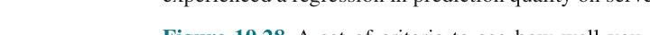
این فصل یادگیریِ ماشینی را معرفی کرد و بر یادگیریِ نظارتشده از مثالها تمرکز کرد. نکاتِ اصلی:
فصل ۱ تاریخِ پژوهشهای فلسفی در موضوعِ یادگیریِ استقرایی را پوشش داد. ویلیام آوکام (۱۳۴۹–۱۲۸۰)، تأثیرگذارترین فیلسوفِ قرنِ خودش و مشارکتکنندهٔ اصلی در معرفتشناسی، منطق و متافیزیکِ قرونِ وسطی، با گزارهای به نامِ «تیغِ آوکام» شناخته میشود—به لاتین، Entia non sunt multiplicanda praeter necessitatem، و به انگلیسی، «موجودات نباید فراتر از ضرورت تکثیر شوند.» متأسفانه، این توصیهٔ ستودنی دقیقاً با این واژهها در نوشتههایش یافت نمیشود (هرچند او گفت «Pluralitas non est ponenda sine necessitate»، یا «کثرت نباید بدونِ ضرورت فرض شود»). احساسِ مشابهی توسط ارسطو در ۳۵۰ پیش از میلاد در فیزیک، کتابِ I، فصلِ VI بیان شد: «زیرا محدودتر، اگر کافی باشد، همیشه ترجیحپذیر است.» دیوید هیوم (۱۷۷۶–۱۷۱۱) مسئلهٔ استقرا را صورتبندی کرد، با تشخیصِ اینکه تعمیمِ از مثالها امکانِ خطاها را میپذیرد، بهگونهای که قیاسِ منطقی نمیکند. او دید هیچ راهی برای داشتنِ راهحلِ تضمینشدهٔ درست برای مسئله نیست، اما اصلِ «یکنواختیِ طبیعت» را پیشنهاد کرد، که ما آن را ایستایی نامیدهایم. آنچه آوکام و هیوم به آن میرسیدند این است که وقتی استقرا میکنیم، از میانِ انبوهِ مدلهای سازگار یکی را انتخاب میکنیم که محتملتر است—زیرا سادهتر است و با انتظاراتِ ما مطابقت دارد. در روزگارِ مدرن، «قضیهٔ ناهارِ رایگانِ» (No Free Lunch Theorem؛ وولپرت و مککریدی، 1997؛ وولپرت، 2013) میگوید اگر الگوریتمِ یادگیری روی مجموعهٔ خاصی از مسائل خوب عمل کند، فقط به این دلیل است که روی مجموعهٔ متفاوتی ضعیف عمل خواهد کرد: اگر درختِ تصمیمِ ما انتظارِ رستورانِ SR را درست پیشبینی کند، فقط به این دلیل است که در پیشبینیِ مسائلِ دیگر، که قوانینِ متفاوتی دارند، ضعیفتر خواهد بود.
تحلیلِ نظریِ الگوریتمهای یادگیری با کارِ گلد (1967) دربارهٔ «شناسایی در حدِّ نهایی» (Identification in the Limit) آغاز شد. این رویکرد تا حدی با مدلهای کشفِ علمی از فلسفهٔ علم انگیزهمند شد (پوپر، 1962)، اما عمدتاً برای مسئلهٔ یادگیریِ گرامرها از جملههای مثال اعمال شده (آشرسون و همکاران، 1986). در حالی که رویکردِ شناسایی-در-حدِّ-نهایی بر همگراییِ نهایی تمرکز دارد، مطالعهٔ «پیچیدگیِ کولموگوروف» (Kolmogorov Complexity) یا پیچیدگیِ الگوریتمی، که مستقلانه توسط سولومونوف (1964، 2009) و کولموگوروف (1965) توسعه یافت، تلاش میکند تعریفِ صوریِ مفهومِ سادگیِ استفادهشده در تیغِ آوکام فراهم کند. برای گریز از مسئلهٔ وابستگیِ سادگی به شیوهٔ بازنماییِ اطلاعات، پیشنهاد میشود سادگی با طولِ کوتاهترین برنامه برای ماشینِ تورینگِ همگانی که دادهٔ مشاهدهشده را درست بازتولید میکند اندازهگیری شود. اگرچه ماشینهای تورینگِ همگانیِ بسیاری ممکناند، و از این رو «کوتاهترین» برنامههای بسیاری، این برنامهها در طول حداکثر با ثابتی تفاوت دارند که مستقل از مقدارِ داده است. این بینشِ زیبا، که اساساً نشان میدهد هر اریبیِ بازنماییِ اولیه سرانجام توسط داده غلبه خواهد شد، فقط با تصمیمناپذیریِ محاسبهٔ طولِ کوتاهترین برنامه لکهدار میشود. اندازههای تقریبی مانندِ حداقلِ طولِ توصیف، یا MDL (ریسانن، 1984، 2007) میتوانند بهجایش استفاده شوند و در عمل نتایجِ عالی تولید کردهاند. متنِ لی و ویتانی (2008) بهترین منبع برای پیچیدگیِ کولموگوروف است.
نظریهٔ یادگیریِ PAC توسط لزلی والیانت (1984) افتتاح شد، با تأکید بر اهمیتِ پیچیدگیِ محاسباتی و نمونهای. والیانت با مایکل کرنز (1990) نشان داد چند ردهٔ مفهوم را نمیتوان بهصورتِ شدنی PAC-یاد گرفت، حتی اگرچه اطلاعاتِ کافی در مثالها موجود باشد. برخی نتایجِ مثبت برای ردههایی مانندِ فهرستهای تصمیم (ریوست، 1987) به دست آمد.
سنتِ مستقلی از تحلیلِ پیچیدگیِ نمونهای در آمار وجود داشته، با شروع از کارِ نظریهٔ همگراییِ یکنواخت (واپنیک و چرووننکیس، 1971). به اصطلاح «بُعدِ VC» اندازهای فراهم میکند که تقریباً مشابهِ، اما عمومیتر از، اندازهٔ ln|H| بهدستآمده از تحلیلِ PAC است. بُعدِ VC را میتوان روی ردههای تابعِ پیوسته اعمال کرد، که تحلیلِ استانداردِ PAC روی آنها اعمال نمیشود. نظریهٔ یادگیریِ PAC و نظریهٔ VC نخستین بار توسط «چهار آلمانی» (که هیچکدام در واقع آلمانی نیستند) به هم متصل شدند: بلومر، ارنفویخت، هاوسلر و وارموث (1989).
رگرسیونِ خطی با زیانِ مربعخطا به لژاندر (1805) و گاوس (1809) برمیگردد، که هر دو روی پیشبینیِ مدارهای اطرافِ خورشید کار میکردند. (گاوس ادعا کرد از 1795 از این فن استفاده میکرده، اما در انتشارش تأخیر کرد.) استفادهٔ مدرن از رگرسیونِ چندمتغیره برای یادگیریِ ماشینی در متنهایی مانندِ بیشاپ (2007) پوشش داده شده. تفاوتهای بینِ منظمسازیِ L1 و L2 توسط نگ (2004) و مور و دنیرو (2011) تحلیل شده.
اصطلاحِ تابعِ لجستیک از پیر-فرانسوا ورولست (۱۸۴۹–۱۸۰۴) میآید، آماردانی که از منحنی برای مدلکردنِ رشدِ جمعیت با منابعِ محدود استفاده کرد، مدلی واقعگرایانهتر از رشدِ هندسیِ بیقیدِ پیشنهادیِ توماس مالتوس. ورولست آن را courbe logistique نامید، به دلیلِ رابطهاش با منحنیِ لگاریتمی. اصطلاحِ «نفرینِ ابعاد» از ریچارد بلمن (1961) میآید.
رگرسیونِ لجستیک را میتوان با نزولِ گرادیان یا با روشِ نیوتن–رافسون (نیوتن، 1671؛ رافسون، 1690) حل کرد. گونهای از روشِ نیوتن به نامِ L-BFGS اغلب برای مسائلِ پربعد استفاده میشود؛ L مخففِ «حافظهٔ محدود» است، بدان معنا که از ایجادِ ماتریسهای کاملِ یکجا اجتناب میکند و در عوض بخشهایشان را در پرواز میسازد. BFGS حروفِ اولِ نامِ نویسندگان است (برد و همکاران، 1995). ایدهٔ نزولِ گرادیان به کوشی (1847) برمیگردد؛ نزولِ گرادیانِ تصادفی (SGD) در جامعهٔ بهینهسازیِ آماری توسط رابینز و مونرو (1951) معرفی شد، برای شبکههای عصبی توسط روزنبلت (1960) دوباره کشف شد، و برای یادگیریِ ماشینیِ مقیاسبزرگ توسط بوتو و بوسکه (2008) رواج یافت. بوتو و همکاران (2018) موضوعِ یادگیریِ مقیاسبزرگ را با یک دهه تجربهٔ اضافی بازبینی میکنند. مدلهای نزدیکترین-همسایهها دستکم به فیکس و هاجز (1951) برمیگردند و از آن پس ابزارِ استانداردی در آمار و بازشناسیِ الگو بودهاند. درونِ هوش مصنوعی، توسط استنفیل و والتز (1986) رواج یافتند، که روشهایی برای سازگارکردنِ معیارِ فاصله با داده بررسی کردند. هاستی و تیبشیرانی (1996) راهی برای محلیکردنِ معیار در هر نقطهٔ فضا، بسته به توزیعِ داده دورِ آن نقطه، توسعه دادند. گیونیس و همکاران (1999) درهمسازیِ حساس-به-محل (LSH) را معرفی کردند، که بازیابیِ اشیای مشابه در فضاهایِ پربعد را متحول کرد. آندونی و ایندیک (2006) مروری بر LSH و روشهای مرتبط فراهم میکنند، و سامت (2006) ویژگیهای فضاهایِ پربعد را پوشش میدهد. این فن برای دادهٔ ژنومی، که هر رکورد میلیونها ویژگی دارد، بهطورِ خاص مفید است (برلین و همکاران، 2015).
ایدههای پشتِ ماشینهای هسته از آیزنمن و همکاران (1964) میآیند (که حقهٔ هسته را نیز معرفی کردند)، اما توسعهٔ کاملِ نظریه از واپنیک و همکارانش است (بوزر و همکاران، 1992). SVMها با معرفیِ ردهبندِ حاشیهٔ نرم برای مدیریتِ دادهٔ نویزی عملی شدند، در مقالهای که جایزهٔ ACM Theory and Practice 2008 را برد (کورتس و واپنیک، 1995)، و با الگوریتمِ «بهینهسازیِ کمینهٔ متوالی» (SMO) برای حلِ کارآمدِ مسائلِ SVM با برنامهنویسیِ درجهدومی (پلات، 1999).
SVMها برای تکلیفهایی مانندِ ردهبندیِ متن (یوآخیمز، 2001)، ژنومیکسِ محاسباتی (کریستینینی و هان، 2007) و بازشناسیِ رقمِ دستنویس دکوست و شولکف (2002) بسیار مؤثر ثابت شدهاند. بهعنوانِ بخشی از این فرایند، هستههای تازهٔ بسیاری طراحی شده که با رشتهها، درختها و دیگر انواعِ دادهٔ غیرعددی کار میکنند. فنِ مرتبطی که از حقهٔ هسته برای بازنماییِ ضمنیِ فضایِ ویژگیِ نمایی استفاده میکند، پرسپترونِ رأیدهنده (فرند و شاپایر، 1999؛ کالینز و دافی، 2002) است. کتابهای درسیِ SVM شاملِ کریستینینی و شاو-تیلور (2000) و شولکف و اسموالا (2002) میشوند. شرحِ دوستانهتری در مقالهٔ AI Magazine کریستینینی و شولکف (2002) ظاهر میشود. بنجیو و لوکون (2007) برخی از محدودیتهای SVMها و دیگر روشهای محلی و ناپارامتری برای یادگیریِ توابعی را نشان میدهند که ساختارِ سراسری دارند اما نرمیِ محلی ندارند.
نخستین اثباتِ ریاضیِ ارزشِ یک گروه، قضیهٔ هیئتمنصفهٔ کندورسه (1785) بود، که اثبات کرد اگر اعضای هیئتمنصفه مستقلاند و عضوِ فردیِ هیئتمنصفه دستِکم ۵۰٪ شانسِ تصمیمِ درستِ پرونده دارد، آنگاه هرچه اعضای هیئتمنصفه بیشتری بیفزایید، شانسِ تصمیمِ درستِ پرونده بهتر میشود. اخیراً، یادگیریِ گروهی به فنِ فزایندهای محبوب برای بهبودِ عملکردِ الگوریتمهای یادگیری تبدیل شده.
نخستین الگوریتمِ جنگلِ تصادفی، با انتخابِ تصادفیِ ویژگی، از هو (1995) است؛ نسخهٔ مستقلی توسط امیت و گمن (1997) معرفی شد. بریمن (2001) ایدههای بیگینگ و «خطای بیرون-از-کیسه» را افزود. فریدمن (2001) اصطلاحِ «ماشینِ تقویتِ گرادیان» (GBM) را معرفی کرد و رویکرد را برای اجازهدادن به ردهبندیِ چندردهای، رگرسیون و مسائلِ رتبهبندی بسط داد.
مایکل کرنز (1988) «مسئلهٔ تقویتِ فرضیه» (Hypothesis Boosting Problem) را تعریف کرد: با توجه به یادگیرندهای که فقط کمی بهتر از حدسِ تصادفی پیشبینی میکند، آیا امکانِ استخراجِ یادگیرندهای هست که خودسرانه خوب عمل کند؟ این مسئله در مقالهٔ نظریِ شاپایر (1990) بهصورتِ مثبت پاسخ داده شد، که به الگوریتمِ ADABOOST فرند و شاپایر (1996) و کارِ نظریِ بیشتر (شاپایر، 2003) انجامید. فریدمن و همکاران (2000) تقویت را از دیدگاهِ آماردان تبیین میکنند. چن و گسترین (2016) سامانهٔ XGBOOST را توصیف میکنند، که با موفقیتِ زیاد در بسیاری از کاربردهای مقیاسبزرگ استفاده شده.
یادگیریِ برخط در مروری از بلوم (1996) و کتابی از سزا-بیانکی و لوگوسی (2006) پوشش داده شده. دردز و همکاران (2008) ایدهٔ یادگیریِ برخطِ وزندار-با-اطمینان را برای ردهبندی معرفی میکنند: علاوه بر نگهداشتنِ وزنی برای هر پارامتر، اندازهای از اطمینان نیز نگه میدارند، تا مثالِ تازه بتواند اثرِ بزرگی بر ویژگیهایی داشته باشد که قبلاً بهندرت دیده شدهاند (و بنابراین اطمینانِ کمی داشتند) و اثرِ کوچکی بر ویژگیهای رایجی که قبلاً خوب برآورد شدهاند. یو و همکاران (2011) توصیف میکنند چگونه تیمی از دانشجویان با هم برای ساختِ ردهبندِ گروهی در مسابقهٔ KDD همکاری میکنند. امکانِ هیجانانگیزی ایجادِ گروهِ «بیشازحدِ بزرگِ» مخلوط-کارشناسان است که از زیرمجموعهٔ تنکی از کارشناسان برای هر مثالِ ورودی استفاده میکند (شازیر و همکاران، 2017). سنی و الدر (2010) روشهای گروهی را مرور میکنند. از نظرِ توصیههای عملی برای ساختنِ سامانههای یادگیریِ ماشینی، پدرو دومینگوس چند چیزِ دانستنی را توصیف میکند (2012). اندرو نگ نکاتی برای توسعه و رفعاشکالِ محصولی با استفاده از یادگیریِ ماشینی میدهد (نگ، 2019). اونیل و شوت (2013) فرایندِ انجامِ علمِ داده را توصیف میکنند. توکی (1977) تحلیلِ دادهٔ اکتشافی را معرفی کرد، و گلمن (2004) دیدگاهِ بهروزشدهای از فرایند میدهد. بین و همکاران (2011) فرایندِ انتخابِ نمونههای اولیه برای تفسیرپذیری را توصیف میکنند، و کیم و همکاران (2017) نشان میدهند چگونه منتقدانی را بیابیم که با معیاری به نامِ «حداکثرِ ناهمخوانیِ میانگین» حداکثرِ فاصله را از نمونههای اولیه دارند.
واتنبرگ و همکاران (2016) استفاده از t-SNE را توصیف میکنند. برای دیدِ جامعِ اینکه سامانهٔ یادگیریِ ماشینیِ مستقرت چقدر خوب عمل میکند، برک و همکاران (2016) چکلیستی از ۲۸ آزمون ارائه میدهند که میتوانی برای گرفتنِ امتیازِ کلیِ آزمونِ ML اعمال کنی. رایلی (2019) سه دامِ رایجِ توسعهٔ ML را توصیف میکند.
بانکو و بریل (2001)، هالوی و همکاران (2009) و گاندومی و حیدر (2015) مزایای استفاده از مقادیرِ زیادِ دادهای که اکنون در دسترس است را بحث میکنند. لیمن و واریان (2003) برآورد کردند حدود ۵ اگزابایت (5 × 10¹⁸ بایت) داده در ۲۰۰۲ تولید شده، و نرخِ تولید هر ۳ سال دو برابر میشود؛ هیلبرت و لوپز (2011) 2 × 10²¹ بایت را برای ۲۰۰7 برآورد کردند، که نشاندهندهٔ شتاب است. گیون و الیزهف (2003) مسئلهٔ انتخابِ ویژگی با مجموعههای دادهٔ بزرگ را بحث میکنند.
دوشی-ولز و کیم (2017) چارچوبی برای یادگیریِ ماشینیِ تفسیرپذیر یا هوش مصنوعیِ تبیینپذیر (XAI) پیشنهاد میکنند. میلر و همکاران (2017) اشاره میکنند دو نوع تبیین هست، یکی برای طراحانِ سامانهٔ هوش مصنوعی و یکی برای کاربران، و باید روشن باشیم هدفمان چیست. سامانهٔ LIME (ریبیرو و همکاران، 2016) مدلهای خطیِ تفسیرپذیری میسازد که هر سامانهٔ یادگیریِ ماشینیای که داری را تقریب میزنند. سامانهٔ مشابهی، SHAP (لوندبرگ و لی، 2018) (تبیینهای افزایشیِ شپلی)، از مفهومِ ارزشِ شپلی (صفحهٔ ۶۲۸) برای تعیینِ سهمِ هر ویژگی استفاده میکند.
ایدهٔ اینکه بتوانیم یادگیریِ ماشینی را برای حلِ مسائلِ یادگیریِ ماشینی به کار ببریم، وسوسهانگیز است. ترون و پرت (2012) مرورِ اولیهای از این حوزه در مجموعهای ویرایششده با عنوانِ «یادگیری برای یادگیری» میدهند. اخیراً این حوزه نامِ «یادگیریِ ماشینیِ خودکار» (Automated Machine Learning یا AutoML) را پذیرفته؛ هوتر و همکاران (2019) مروری میدهند. کانتر و ویراماچاننی (2015) سامانهای برای انجامِ انتخابِ خودکارِ ویژگی توصیف میکنند. برگسترا و بنجیو (2012) سامانهای برای جستجو در فضایِ ابرپارامترها توصیف میکنند، همانگونه که تورنتون و همکاران (2013) و برمودز-چاکون و همکاران (2015). وانگ و همکاران (2019) نشان میدهند یادگیریِ انتقالی چگونه میتواند AutoML را برای مدلهای یادگیریِ عمیق سرعت ببخشد. مسابقاتی برای دیدنِ اینکه کدام سامانهها در تکلیفهای AutoML بهتریناند سازماندهی شده (گیون و همکاران، 2015).
اشتاینروکن و همکاران (2019) سامانهای به نامِ «آماردانِ خودکار» (Automatic Statistician) توصیف میکنند: دادهای به آن میدهی و گزارشی مینویسد، متن، نمودارها و محاسبات را در هم میآمیزد. ارائهدهندگانِ اصلیِ رایانشِ ابری AutoML را بخشی از پیشنهادهایشان کردهاند. برخی پژوهشگران اصطلاحِ «فرا-یادگیری» (Metalearning) را ترجیح میدهند: برای نمونه، سامانهٔ MAML (فرا-یادگیریِ مستقل از مدل) (فین و همکاران، 2017) با هر مدلی که با نزولِ گرادیان قابلِ آموزش است کار میکند؛ مدلِ هستهای را آموزش میدهد تا تنظیمِ دقیقِ مدل با دادهٔ تازه روی تکلیفهای تازه آسان باشد.
با وجودِ همهٔ این کارها، هنوز سامانهٔ کاملی برای حلِ خودکارِ مسائلِ یادگیریِ ماشینی نداریم. برای انجامِ آن با یادگیریِ نظارتشده باید با مجموعهٔ دادهای از مثالهای (xj,yj) شروع کنیم. در اینجا ورودیِ xj مشخصاتِ مسئله است، به شکلی که مسئله در آغاز با آن مواجه میشود: توصیفِ مبهمی از هدفها، و دادهای برای کار، شاید با برنامهای مبهم برای چگونگیِ کسبِ دادهٔ بیشتر. خروجیِ yj برنامهٔ کامل و در حالِ اجرایِ یادگیریِ ماشینی خواهد بود، همراه با روششناسیای برای نگهداریِ برنامه: جمعآوریِ دادهٔ بیشتر، تمیزکردنِ آن، و...
¹ نامِ بهتر «تقریبِ تابع» یا «پیشبینیِ عددی» میبود. اما در ۱۸۸۶ فرانسیس گالتون مقالهٔ تأثیرگذاری دربارهٔ مفهومِ بازگشت به میانگین نوشت (مثلاً فرزندانِ والدینِ قدبلند احتمالاً بلندتر از میانگیناند، اما نه بهاندازهٔ والدین). گالتون نمودارهایی را با چیزی که «خطوطِ رگرسیون» مینامید نشان داد، و خوانندگان بهمرور واژهٔ «رگرسیون» را با فنِ آماریِ تقریبِ تابع مرتبط کردند.
² نام اغلب «Occam» غلط املاشده.
³ بهره بهصورتِ سختگیرانه مثبت خواهد بود، بهجزِ حالتِ نامحتملی که همهٔ نسبتها دقیقاً یکساناند. (تمرین ۱۹.NNGA را ببینید.)
⁴ اگرچه نامِ «انتخابِ مدل» رایج است، نامِ بهتر «انتخابِ ردهٔ مدل» یا «انتخابِ فضایِ فرضیه» میبود. واژهٔ «مدل» در ادبیات برای اشاره به سه سطحِ متفاوتِ خاصیت استفاده شده: فضایِ فرضیهٔ گسترده (مانندِ «چندجملهای»)، خانوادهٔ پارامتریِ درونِ آن فضا (مانندِ «درجهٔ 3»)، و فرضیهٔ کاملاً مشخصشده (مانندِ «3x³ + 2x² + x + 1»).
⁵ برخی نویسندگان میگویند مدل داده را «به خاطر سپرده».
⁶ گاوس نشان داد اگر مقادیرِ yj نویزِ توزیعِ نرمال داشته باشند، محتملترین مقادیرِ w1 و w0 با استفاده از زیانِ L2، با کمینهکردنِ جمعِ مربعِ خطاها، به دست میآیند. (اگر مقادیر نویزی با توزیعِ لاپلاس (نماییِ دوتایی) داشته باشند، زیانِ L1 مناسبتر است.)
⁷ با چند ملاحظه: تابعِ زیانِ L2 وقتی مناسب است نویزِ توزیعِ نرمالِ مستقل از x باشد؛ همهٔ نتایج به فرضِ ایستایی تکیه دارند؛ و...
⁸ خواننده ممکن است بخواهد برای خلاصهای از جبرِ خطی به پیوستِ الف مراجعه کند. همچنین توجه کنید از اصطلاحِ «رگرسیونِ چندمتغیره» برای این معنا استفاده میکنیم که ورودی بردارِ چند مقدار است، اما خروجی متغیرِ تکی است. از اصطلاحِ «رگرسیونِ چندمتغیرهخروجی» برای حالتی استفاده میکنیم که خروجی نیز بردارِ چند متغیر است.
⁹ شاید گیجکننده باشد که نمادِ L1 و L2 هم برای توابعِ زیان و هم برای توابعِ منظمسازی استفاده میشود. لازم نیست جفت استفاده شوند: میتوانی از زیانِ L2 با منظمسازیِ L1 استفاده کنی، یا برعکس.
¹⁰ از نظرِ فنی، لازم داریم ∑_{t=1}^{∞} α(t) = ∞ و ∑_{t=1}^{∞} α²(t) < ∞. نرخِ یادگیریِ α(t) = O(1/t) این شرایط را ارضا میکند. اغلب از c/(c+t) برای ثابتِ نسبتاً بزرگِ c استفاده میکنیم.
¹¹ تابعِ sign(x) برای x مثبت +1 و برای x منفی −1 برمیگرداند.
¹² خواننده ممکن است متوجه شود میتوانستیم فقط از f1 و f2 استفاده کنیم، اما نگاشتِ سهبعدی ایده را بهتر نشان میدهد.
¹³ این استفاده از «تابعِ هسته» کمی با هستههای رگرسیونِ وزنمحلی متفاوت است. برخی هستههای SVM معیارهای فاصلهاند، اما نه همهشان.
¹⁴ در اینجا، «معقول» بدان معناست ماتریسِ Kjk = K(xj,xk) معینِ مثبت است.
¹⁵ یادداشتِ اصطلاحشناسی: در آمار، نمونهبرداریِ با جایگزینی «بوتاسترپ» (Bootstrap) نامیده میشود، و «بیگینگ» کوتاهشدهٔ «تجمیعِ بوتاسترپ» (Bootstrap Aggregating) است.
¹⁶ بلوم (1996) اثباتِ زیبایی میدهد.
¹⁷ (در متنِ اصلیِ انگلیسی، پانوشتِ ۱۷ در بخشِ ۱۹.۹.۲ دربارهٔ حاشیهٔ نرمِ SVM آمده و در ترجمه در بخشِ ۱۹.۷.۶ گنجانده شده است.)
¹⁸ این اصطلاحشناسی بهطورِ همگانی پذیرفته نشده؛ برخی نویسندگان «تفسیرپذیر» و «تبیینپذیر» را مترادف به کار میبرند، هر دو اشاره به رسیدن به نوعی فهم از مدل.